Versi 2026-07-15
Table of Contents
Product Segment
Product Segment adalah kode identifikasi produk yang otomatis digunakan pada setiap produk baru di sistem iDempiere. Kode ini biasanya terdiri dari 2–3 karakter dan dikombinasikan dengan nomor urut produk.
Contoh Product Segment
| Kode Segment | Keterangan |
|---|---|
| 10 | Barang Jadi Kemeja |
| 20 | Bahan Baku Knitting |
| 21 | Bahan Baku Woven |
Tanpa Product Segment, sistem hanya menghasilkan nomor urut seperti 0001 atau 0002 yang tidak memberikan informasi mengenai jenis produk. Dengan Product Segment, user dapat langsung mengenali kategori produk hanya dari kode artikel yang ditampilkan.
Manfaat Product Segment
- Mempermudah Identifikasi Produk. Saat jumlah produk mencapai ratusan atau ribuan item, Product Segment membantu user mengenali produk dengan cepat. User cukup melihat awalan kode untuk mengetahui apakah produk tersebut bahan baku, barang setengah jadi, atau barang jadi.
- Menghindari Duplikasi Kode Antar Kategori. Tanpa adanya segment, produk dari kategori berbeda dapat memiliki nomor urut yang sama, misalnya 0001 untuk bahan baku dan 0001 untuk barang jadi. Dengan segment, setiap kode menjadi unik, seperti: RM-0001 dan FG-0001. Kedua kode tersebut berbeda dan tidak saling bertabrakan
- Mendukung Konsistensi Data. Segment yang ditentukan sejak awal implementasi membantu seluruh tim menggunakan pola penamaan yang sama. Dengan begitu, proses pencarian data dan pembuatan laporan menjadi lebih terstruktur dan konsisten.
Dalam satu segment, sistem dapat menampung beberapa tipe sekaligus. Jika perusahaan membutuhkan pengelompokan segment berdasarkan kategori tertentu, seperti jenis artikel bahan jadi, bahan baku, gramasi, benang, brand, dan kategori lainnya, lakukan pengaturan pada Menu Product Segment Type.
Sistem akan mengelompokkan kode artikel sesuai kategori yang ditentukan sehingga penyusunan kode artikel menjadi lebih rapi, konsisten, dan mudah dikelola.
Langkah Pengaturan Product Segment Type
- Buka menu SIS Product Segment Type
- Klik New
- Isi Field Search Key dan Name

- Klik Save
Setelah pengelompokan segment berdasarkan kategori selesai dilakukan, lanjutkan konfigurasi pada menu Product Segment.
Langkah Pengaturan Product Segment di Sistem
- Buka Menu SIS Product Segment
- Klik New
- Isi field Search Key, Name dan Product Segment Type. Contoh 10 untuk Barang Jadi dan 59 untuk Brand Polo

- Klik Save
Setelah Product Segment selesai dikonfigurasi, langkah berikutnya adalah mengatur Item Type. Item Type berfungsi untuk menyusun kode artikel berdasarkan segment yang sudah dibuat.
Item Type Product
Item Type adalah konfigurasi penyusun kode artikel berdasarkan Product Segment yang telah dibuat sebelumnya.
Sistem akan membentuk kode artikel secara otomatis berdasarkan urutan segment pada Item Type.
Contoh Kode Artikel:
| Kode Artikel | Keterangan |
|---|---|
| 1015015971761200 | Barang Jadi Polo |
| 2192G2620000527S6000 | Bahan Baku Woven |
| 20010TR91200660ZP091 | Bahan Baku Knitting |

Konfigurasi Item Type
Langkah-Langkah Konfigurasi Item Type:
- Buka Menu SIS Item Type
- Klik New
- Isi field Search Key dan Name sesuai kebutuhan operasional

- Masuk ke Item Type Line. Pada bagian Item Type Line, terdapat dua jenis konfigurasi segment, yaitu:
- Sequence — Nomor urut yang di-generate otomatis oleh sistem.
- Static — Kode tetap pada artikel, contoh: 59 untuk Brand Polo, 28 untuk MClass Kemeja.

- Jika memilih tipe Sequence, tentukan jumlah digit nomor urut yang dibutuhkan (1, 2, 3, atau 4 digit). Field Digit Character akan muncul secara otomatis untuk mengatur jumlah digit tersebut. Nilai default Digit Character dari sistem adalah 3, dengan nilai minimal 1 — nilai 0 atau di bawahnya tidak diperbolehkan.
 6. Klik Save
6. Klik Save
Urutan segment pada Item Type mengikuti standar kode perusahaan karena urutan tersebut menentukan hasil akhir kode artikel.
Setelah Item Type selesai dikonfigurasi, user dapat membuat artikel atau produk baru dengan menghubungkan segment yang telah diatur sebelumnya. Sistem kemudian akan menghasilkan kode artikel secara otomatis.
Implementasi Item Type di Product
Setelah konfigurasi Item Type selesai, langkah berikutnya adalah membuat produk menggunakan segment yang sudah ditentukan.
Implementasi Item Type di Product Category
Langkah selanjutnya adalah mengimplementasikan Item Type pada Product Category dengan cara sebagai berikut:
- Buka Menu Product Category
- Pada field Item Type, pilih Item Type yang telah dikonfigurasi sesuai kebutuhan.
- Klik Save untuk menyimpan konfigurasi.

Langkah Pembuatan Produk Baru dengan Product Segment
- Buka Menu Product.
- Pada field Product Type, pilih SIS Template.
- Pada field Product Category, pilih Product Category yang telah dikonfigurasi, di mana Item Type sudah dikonfigurasi di level Product Category tersebut.

- Klik Save. Saat produk disimpan, sistem otomatis membuat Kode artikel dan Nama Artikel. Di sistem, kode artikel disebut sebagai Search Key. Nama artikel terbentuk dari gabungan nama masing-masing segment yang dipisahkan dengan spasi agar mudah dibaca.
Informasi segment yang telah dikonfigurasi akan muncul di header Product pada field Product Info. Field ini menampilkan informasi segment sesuai urutan yang dikonfigurasi di Item Type.

Apabila produk memiliki varian, user dapat mengatur varian tersebut pada menu Variant Attribute.

Setelah Variant Attribute selesai dikonfigurasi, user dapat menjalankan proses Generate Product Variant. Sistem akan otomatis membentuk kode artikel berdasarkan template Item Type yang telah dikonfigurasi, kemudian menambahkan kode varian sesuai atribut produk.

Product Template
Product template merupakan dasar yang digunakan untuk membuat suatu produk. Product template ini tidak hanya berlaku untuk produk Finished Goods, tetapi juga dapat digunakan untuk produk Semi Finished Goods dan Raw Material.
Untuk produk yang memiliki Bill of Material (BoM), kita tidak perlu mengatur varian attribute pada komponen BoM. Sistem akan mencari varian yang sesuai secara otomatis dari product template — dengan syarat varian yang digunakan pada Raw Material, Semi Finished Goods, dan Finished Goods adalah sama.
Apabila produk tidak menggunakan template, masukkan produk varian langsung sebagai komponen di BoM, dan konfigurasikan varian attribute secara detail sesuai penggunaannya.
Fitur Product Varian
Sistem iDempiere menggunakan Varian Attribute untuk mengelola variasi produk. Dengan fitur ini, perusahaan dapat mengelola satu produk dalam berbagai varian, seperti warna dan ukuran. Fitur Product Varian dapat diterapkan pada semua artikel: Raw Material, Semi Finished Goods, dan Finished Goods.
Konfigurasi Sebelum Menentukan Product Varian
Sebelum membuat produk varian, lakukan tiga konfigurasi berikut:
Master Varian Attribute
Buat Master Varian Attribute terlebih dahulu sebelum menentukan produk varian. Berikut langkah-langkah untuk membuat Varian Attribute:
- Klik menu SIS Varian Attribute
- Isi field Name dengan nama varian yang akan digunakan.

- Buka tab Value, lalu masukkan nama varian dan value sesuai kebutuhan. Contoh: Size S menggunakan prefiks 01. Penentuan varian pada produk disesuaikan dengan kebutuhan operasional perusahaan.

Product Type
Setelah Master Varian Attribute selesai, konfigurasikan Product Type dengan langkah berikut:
- Pada field Product Type, pilih SIS Template sebagai product template

- Buat product template secara berurutan, mulai dari artikel terkecil: Raw Material → Semi Finished Goods → Finished Goods. Pembuatan product template tidak boleh dimulai dari Finished Goods.
- Setelah product template selesai, tambahkan Varian Attribute pada product template untuk membentuk kombinasi varian. Satu produk dapat memiliki lebih dari satu Varian Attribute

Konfigurasi Sistem
Sistem menyediakan parameter SIS_VARIAN_ALLOW_UPDATE di System Configurator untuk menentukan data mana saja yang akan diperbarui saat Regenerate dijalankan. Berikut parameter yang perlu dikonfigurasi:
| Parameter | Keterangan |
|---|---|
| SIS_VARIAN_ALLOW_UPDATE_BOM | Bill of Material |
| SIS_VARIAN_ALLOW_UPDATE_PURCHASING | Purchasing |
| SIS_VARIAN_ALLOW_UPDATE_REPLENISH | Replenish |
| SIS_VARIAN_ALLOW_UPDATE_REPLENISHRDO | Replenish RDO |
| SIS_VARIAN_ALLOW_UPDATE_ROUTING | Routing |
| SIS_VARIAN_ALLOW_UPDATE_UOMCONVERSION | UoM Conversion |
Salah satu contoh Konfigurasi

Untuk Configured Value, pilih salah satu:
- Y → Data akan diperbarui secara otomatis saat proses Regenerate Product Variant dijalankan.
- N → Data tidak akan diperbarui saat proses Regenerate dijalankan.
Finalisasi Pembuatan Item/Artikel/Product
Berikut ini adalah langkah langkah dalam melakukan proses finalisasi pembuatan Item/Artikel/Product
Generate Product Varian
Setelah Product Template, Item Type, Attribute Set dan Varian Attribute selesai dikonfigurasi, jalankan fitur Generate Product Varian melalui langkah berikut:
- Buka menu Product.
- Klik ikon Setting (⚙).
- Jalankan fitur Generate Product Varian.

Sistem akan membuat produk varian secara otomatis berdasarkan kombinasi varian yang telah ditentukan, dan menampilkannya pada tab Product Varian. Produk varian yang terbentuk merupakan produk reguler dengan Product Type Item.

Untuk produk Semi Finished Goods dan Finished Goods yang menggunakan Bill of Material, pastikan BoM sudah dikonfigurasi dengan benar sebelum menjalankan Generate Product Varian. Struktur BoM pada product template akan otomatis disalin ke setiap produk varian yang dihasilkan.
Saat proses Generate dijalankan, sistem menyalin informasi berikut dari product template ke setiap product varian:
- Bill of Material
- Purchasing
- Routing
- Replenish
- Replenish RDO
- UoM Conversion

Distribusi komponen bahan di BoM pada setiap produk varian akan menyesuaikan attribute dan konfigurasi BoM yang telah diatur di level template.
Regenerate Product Varian
Regenerate Product Varian adalah proses memperbarui data pada produk varian berdasarkan perubahan yang dilakukan di product template. Apabila ada perubahan pada tab BoM, Purchasing, Routing, Replenish, Replenish RDO, atau UoM Conversion di product template, jalankan proses Regenerate agar perubahan tersebut otomatis diterapkan ke seluruh produk varian terkait.
Setelah Generate Product Varian pertama kali dijalankan, setiap produk varian akan memiliki konfigurasi Allow Update When Regenerate pada tab BoM, Purchasing, Routing, Replenish, Replenish RDO, dan UoM Conversion.

Gunakan konfigurasi ini untuk mengontrol produk varian mana yang perlu diperbarui saat Regenerate dijalankan, tanpa harus mengubah konfigurasi sistem:
- Centang (✔) Allow Update When Regenerate → Data pada tab terkait di produk varian tersebut akan diperbarui saat Regenerate dijalankan.
- Hapus centang (✘) Allow Update When Regenerate → Data pada tab terkait di produk varian tersebut tidak akan diperbarui saat Regenerate dijalankan.
Contoh penggunaan, jika ingin memperbarui BoM di semua produk varian kecuali satu varian tertentu, un-check/un-centang/un-thick Allow Update When Regenerate pada tab BoM di produk varian tersebut sebelum menjalankan Regenerate.
Jika ingin menambahkan raw material atau komponen hanya untuk varian tertentu, input atribut varian pada material baru satu per satu untuk setiap varian. Sistem tidak dapat menerima input beberapa varian yang sama secara bersamaan.
Contoh: Jika ingin menambahkan material Gula untuk varian Coffee dan Matcha, input komponen Gula untuk varian Coffee dan Matcha secara terpisah.

Ketentuan ini juga berlaku jika setiap varian memiliki komponen atau material dengan gramasi, komposisi, atau quantity yang berbeda. Input setiap varian secara terpisah sesuai detail masing-masing.
Unit of Measure (UoM)
Unit of Measure (UoM) adalah satuan pengukuran yang digunakan untuk menentukan kuantitas produk dalam setiap transaksi di iDempiere.
Dalam iDempiere, setiap produk memiliki satu Base UoM, yaitu satuan dasar dan terkecil yang menjadi acuan utama sistem untuk:
- Menyimpan saldo stok di database
- Menghitung harga pokok (costing)
- Menjadi referensi seluruh proses konversi satuan
UoM juga menentukan jumlah produk yang terlibat dalam transaksi. Ketika transaksi menggunakan satuan yang berbeda dari satuan dasar produk, sistem akan melakukan perhitungan berdasarkan konversi UoM yang telah ditentukan.
UoM Conversion
Unit of Measure (UoM) Conversion adalah mekanisme yang digunakan untuk mengonversi satu satuan pengukuran ke satuan lain untuk produk yang sama. Contohnya, produk dibeli dalam satuan karton (10 pcs), disimpan dalam satuan pcs, dan dikeluarkan juga dalam satuan pcs. Dalam kondisi ini, sistem harus memahami hubungan antar satuan tersebut.
UoM Conversion terdiri dari beberapa komponen utama:
- Base UoM, yaitu satuan dasar yang menjadi acuan utama, biasanya satuan terkecil seperti pcs, kg, atau meter.
- Alternate UoM, yaitu satuan lain yang digunakan dalam transaksi, seperti karton, lusin, atau dus.
- Conversion Factor, yaitu nilai pengali antar satuan. Contoh: 1 karton = 10 pcs, sehingga faktor konversinya adalah 10.
Setiap produk memiliki Base UoM sebagai referensi utama seluruh konversi. Sistem mendefinisikan konversi menggunakan multiply rate dan divide rate. Karena itu, Base UoM harus menjadi satuan terkecil dari seluruh skema konversi yang digunakan, dan nilai divide rate harus lebih besar atau sama dengan 1.

UoM Conversion diterapkan di Requisition, Purchase Order, dan Movement. Karena itu, pastikan konfigurasi UoM di level Product sudah selesai sebelum memulai transaksi di ketiga modul tersebut.
[Tim PSI merekomendasikan untuk menetapkan standarisasi UoM pada proses Movement, Requisition dan Purchasing dengan tujuan untuk meminimalkan potensi kesalahan input UoM serta memastikan akurasi dalam penentuan harga] Catatan
Implementasi di Requisition
Requisition
Di tahap requisition, user mengajukan kebutuhan barang. Fitur UoM Conversion memungkinkan user memasukkan permintaan dalam satuan yang lebih familiar, seperti karton atau pack. Sistem lalu otomatis mengonversi jumlah tersebut ke Base UoM (misalnya Pcs) untuk keperluan pengecekan stok dan perencanaan pengadaan.
Requisition Line

UoM pada requisition line terbentuk dari konversi Base UoM. Berikut field quantity dan harga yang perlu dipahami:
- Quantity — Menampilkan jumlah produk dalam satuan Base UoM.
- Quantity Entered — Menampilkan jumlah produk dalam satuan UoM Conversion. Contoh: Base UoM adalah each dan UoM Conversion adalah pack, di mana 1 pack = 10 each. Maka Quantity Entered mencerminkan jumlah dalam satuan pack.
Generate PO From Requisition
Setelah requisition diconfirm (complete), langkah berikutnya adalah Generate PO From Requisition. Proses ini menyalin data dari requisition — termasuk UoM dan quantity — ke dalam Purchase Order. Sistem kemudian menggunakan UoM yang telah dikonversi sebelumnya.
UoM yang digunakan di requisition dan purchase order sebenarnya bisa berbeda, namun disarankan untuk menyamakannya demi konsistensi data. Contoh: jika requisition menggunakan satuan pack, maka purchase order sebaiknya juga menggunakan pack.
Implementasi di Purchase Order
Setelah requisition dikonfirmasi, user membuat Purchase Order melalui proses “Generate PO From Requisition”. Sistem membaca requisition line yang memenuhi kriteria tertentu — seperti Warehouse dan Business Partner — lalu membuat Purchase Order secara otomatis.
Sistem mengambil data berikut dari dokumen Requisition ke header Purchase Order:
- Organization
- Date Promised
- Price List
- Warehouse
- Business Partner

Purchase Order Line
Dalam Purchase Order, sistem menggunakan satuan pembelian yang telah disepakati dengan vendor, yang biasanya berbeda dari Base UoM. Sistem mencatat:
- Quantity dalam satuan UoM Conversion (misalnya karton)
- Harga per satuan UoM Conversion (misalnya Rp100.000/karton)
- Konversi ke Base UoM secara otomatis di latar belakang
Hal ini penting karena vendor umumnya memberikan harga dalam satuan karton atau dus, bukan per pcs.

Berdasarkan data konversi tersebut, sistem menghitung unit cost dalam Base UoM. Contoh: harga Rp120.000 per karton dengan isi 10 pcs akan dikonversi menjadi Rp12.000 per pcs untuk keperluan valuasi inventori.
Berikut field pada Purchase Order line yang perlu dipahami:
- Qty Entered — Menampilkan jumlah produk dalam satuan UoM Conversion. Nilai ini otomatis menyesuaikan rate UoM Conversion.
- PO Quantity — Menampilkan jumlah produk dalam satuan Base UoM. Nilai ini otomatis menyesuaikan rate UoM Conversion.
- Unit Price — Menampilkan harga produk per satuan Base UoM, mengikuti price yang telah dikonfigurasi di level Business Partner.
- Price — Menampilkan harga produk per satuan UoM Conversion, dihitung berdasarkan rate UoM Conversion.
Penentuan Price
Price pada Purchase Order ditentukan berdasarkan vendor atau business partner yang dikontrak. Konfigurasi price dilakukan di level Business Partner, karena setiap business partner dapat memiliki price list yang berbeda.
Jika produk tidak memiliki vendor yang dikontrak, sistem menggunakan Price List yang telah dikonfigurasi sebelumnya. Penentuan dasar harga yang digunakan mengikuti kebijakan perusahaan.
Implementasi di Movement
Penerimaan Barang & Konfigurasi UoM
Setelah produk jadi diterima, perpindahan stok (antar gudang, antar lokasi) dicatat melalui Inventory Move. Sistem mencatat quantity berdasarkan konfigurasi UoM yang diatur di level Product. Konfigurasi ini tersedia di tab “UoM Conversion” pada halaman Product.
Field “Movement”

Field Movement menentukan bagaimana sistem mencatat quantity saat penerimaan barang:
- Jika Movement dicentang (✓) — Sistem mencatat quantity dalam satuan UoM Conversion (hasil konversi dari Base UoM).
- Jika Movement tidak dicentang — Sistem mencatat quantity langsung menggunakan satuan Base UoM.
Implementasi UoM Conversion di Movement

UoM yang digunakan di level Movement mengikuti konfigurasi UoM Conversion pada level Product. Jika field Is Movement dicentang, sistem akan mencatat transaksi movement dalam satuan UoM Conversion, termasuk quantity yang digunakan. Berikut field pada movement line yang perlu dipahami:
- Quantity — Menampilkan jumlah produk dalam satuan UoM Conversion.
- Target Quantity — Menampilkan jumlah produk dalam satuan Base UoM. Contoh: jika Base UoM adalah each dan UoM Conversion adalah pack, maka 1 pack = 10 each.
- UoM — Menampilkan UoM sesuai konfigurasi di level Product.
Contoh: Movement Menggunakan Base UoM
Konfigurasi di level Product
Di level Movement

Karena field Movement tidak dicentang, sistem mencatat movement dalam satuan Base UoM.
Routing
Routing adalah konfigurasi yang menentukan alur proses suatu produk, mulai dari bahan baku, tahapan produksi, hingga menjadi produk jadi. Routing juga mengatur lokasi setiap proses dijalankan dan lokasi penyimpanan hasil proses tersebut.
Tanpa routing, proses produksi tetap dapat berjalan, tetapi perpindahan stok tidak tercatat secara otomatis dan alurnya menjadi tidak terstruktur. Kondisi ini dapat menyebabkan bahan baku tersimpan di lokasi yang salah dan hasil produksi tidak tercatat dengan benar.
Pengaturan Warehouse & Locator
Sebelum membuat routing, pastikan konfigurasi Warehouse dan Locator sudah sesuai.
Warehouse merepresentasikan area penyimpanan fisik produk atau gudang. Di dalam warehouse terdapat struktur lokasi yang disebut Locator untuk menentukan posisi penyimpanan secara lebih detail, seperti rak, baris, atau bin.
Langkah Pengaturan Warehouse & Locator
- Buka Menu Warehouse & Locator
- Klik New
- Isi data Warehouse:
- Nama Warehouse, contoh: WH-Bahan Baku
- Alamat Warehouse, contoh: Jakarta
Di dalam warehouse terdapat line bernama Locator. Locator harus dibuat terlebih dahulu sebelum digunakan pada routing. Ikuti langkah dibawah untuk mengatur locator:
- Klik tab Line Locator
- Klik New
- Isi nama locator gudang
- Isi field X, Y, Z sesuai kebutuhan operasional:
- X untuk kolom rak
- Y untuk baris rak
- Z untuk slot dalam satu baris
- Centang Default untuk locator utama gudang
- Isi field berikut sesuai locator yang digunakan
- Locator Stock
- Locator Pre Manufacture
- Locator Post Manufacture
- Reservation Locator
- Klik Save
Jika satu produk diproduksi di lebih dari satu gudang, misalnya Jakarta dan Surabaya, buat konfigurasi BoM (Bill of Material) terpisah sesuai lokasi produksi masing-masing. Routing nantinya akan mengikuti konfigurasi BoM tersebut.
Production Warehouse
Perusahaan memiliki banyak warehouse, namun tidak semua digunakan untuk proses produksi. Untuk mempermudah pemilihan warehouse saat produksi, lakukan konfigurasi Production Warehouse di menu Warehouse and Locator.
Ikuti langkah berikut untuk mengkonfigurasi Production Warehouse:
- Buka menu Warehouse and Locator.
- Pada field Production Warehouse, lakukan konfigurasi:
- Y — Warehouse tersebut merupakan Production Warehouse.
- N — Warehouse tersebut bukan Production Warehouse.
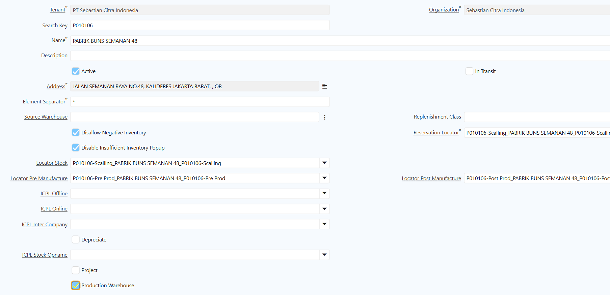
- Klik Save.
Warehouse yang digunakan untuk produksi umumnya berkaitan dengan Routing yang digunakan untuk memproses Production Order Planning (POP). Selain itu, lakukan konfigurasi Production Warehouse untuk setiap artikel yang memiliki BoM dan akan diproses produksi.
Agar tampilan lebih sederhana, warehouse dapat difilter berdasarkan flag Production Warehouse yang telah dikonfigurasi. Setelah dikonfigurasi, hanya warehouse dengan flag Production Warehouse yang akan muncul pada pilihan Production Warehouse di Bill of Material.
Berikut contoh implementasi filter Production Warehouse di Bill of Material:
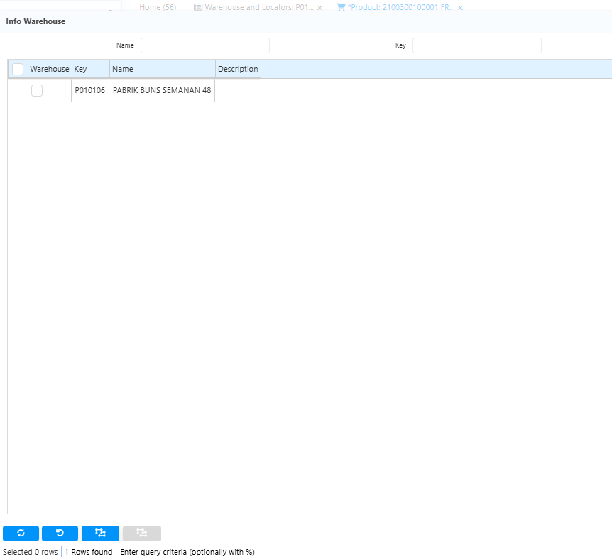
Jenis Action Routing
Routing memiliki beberapa jenis action yang digunakan untuk menentukan alur perpindahan barang.
| Action | Fungsi |
|---|---|
| Buy | Proses pengadaan material melalui pembelian |
| Manufacture | Proses memproduksi artikel |
| Pull From | Menarik barang dari gudang sebelumnya (alur mundur) |
| Push To | Mengirim barang ke gudang berikutnya (alur maju) |
Penggunaan Action Berdasarkan Jenis Produk
- Raw Material dan Semi Finished Goods. Menggunakan action Pull From, dimulai dari proses pembelian atau proses sebelumnya hingga ke area pre-production.
- Finished Goods. Menggunakan action Push To dengan tujuan gudang induk atau gudang penjualan.
Jenis Operation Routing
Routing memiliki tiga jenis operation:
| Operation Type | Fungsi |
|---|---|
| Take from stock | Mengambil langsung dari stok yang tersedia |
| Take from stock Trigger another rules | Mengambil dari stok, lalu menjalankan aturan lain jika stok tidak mencukupi |
| Trigger another rules | Langsung menjalankan aturan lain tanpa pengecekan stok |
Langkah Pengaturan Routing di Sistem
- Buka Menu SIS Routing
- Klik New
- Isi Field Search Key dan Nama pada Header
- Simpan header terlebih dahulu sebelum menambahkan line routing
- Klik tab Line
- Isi setiap field sesuai konfigurasi berikut:

Berikut field yang harus dikonfigurasi:
| Field | Keterangan |
|---|---|
| Routing Action | Aksi yang dijalankan sistem pada tahap tertentu |
| Warehouse | Gudang asal material atau komponen |
| Locator | Lokasi pengambilan material atau komponen |
| Operation Type | Jenis operasi yang menentukan logika proses |
| Warehouse To | Gudang tujuan hasil produksi |
| Locator To | Lokasi penyimpanan hasil produksi |
- Ulangi untuk setiap tahapan proses dan pastikan Line No berurutan
- Simpan setiap line sebelum menambahkan ke line berikutnya
- Klik Save
Implementasi Routing
Setiap jenis produk, seperti Raw Material, Semi Finished Goods, dan Finished Goods, umumnya memiliki routing yang berbeda karena proses produksinya dilakukan di warehouse yang berbeda.
Sebelum menjalankan produksi, lakukan konfigurasi routing pada level Product Category. Pastikan routing setiap produk sudah sesuai dengan alur produksi yang berlaku.
Satu routing dapat digunakan untuk beberapa produk selama proses produksi dan perpindahan barang menggunakan warehouse serta locator yang sama.
Langkah Implementasi Routing di Product Category
- Buka Menu Product Category

- Pada Tab Routing, lakukan konfigurasi sesuai dengan alur produksi.
- Klik Save
Routing juga dapat dikonfigurasi langsung pada level Product. Berikut langkah implementasi routing di Product:
- Buka Menu Product

- Pada Tab Routing, konfigurasi sesuai dengan alur produksi.
- Klik Save
Field “Copy Routing”
Field Copy Routing berfungsi untuk menyalin routing yang telah dikonfigurasi di level Product Category ke produk-produk yang menggunakan kategori tersebut. Jika Product Category belum memiliki konfigurasi routing, user dapat menambahkan routing terlebih dahulu, kemudian menyalinnya ke produk yang sudah ada (existing).
Ikuti langkah berikut untuk menjalankan Copy Routing di Product Category:
- Buka menu Product Category
- Pada Tab Routing, lakukan konfigurasi sesuai dengan alur produksi.
- Klik tombol Copy Routing

- Klik ok
- Klik save
Di belakang layar, sistem memperbarui routing pada seluruh produk yang menggunakan Product Category tersebut. Namun, jika produk sudah memiliki konfigurasi routing sebelumnya, sistem mempertahankan routing yang ada dan tidak menimpanya.
Catatan: Copy Routing hanya berfungsi untuk menyalin, bukan memperbarui. Produk yang sudah memiliki routing tidak akan ter-update meskipun Copy Routing dijalankan.
Field Copy PC Routing memiliki pilihan Overwrite dengan ketentuan berikut:
- Jika Overwrite dicentang — Sistem menghapus routing yang ada di product, kemudian menyalin konfigurasi routing dari Product Category ke product tersebut.
- Jika Overwrite tidak dicentang (default) — Sistem mempertahankan routing yang sudah ada di product dan tidak menyalin konfigurasi routing dari Product Category.

Manufacturing Order
Manufacturing Order adalah dokumen perintah produksi yang terhubung langsung dengan routing.
Saat manufacturing order dibuat, sistem akan membaca routing dan otomatis menyiapkan seluruh tahapan operasi sesuai urutan proses produksi.
Ketika Production Order Planning dibuat, sistem otomatis menghasilkan manufacturing order berdasarkan urutan operasi yang sudah dikonfigurasi. Dengan routing yang tepat:
- Perpindahan stok tidak perlu dilakukan secara manual.
- Lokasi barang dapat dipantau secara real-time.
- Sistem mencatat seluruh perpindahan produk secara otomatis.
- Laporan produksi menjadi lebih akurat karena setiap proses tercatat di sistem.
Bill of Material
Bill of Material (BoM) adalah struktur daftar komponen atau bahan yang digunakan untuk memproduksi suatu produk. BoM digunakan pada Manufacturing dan Production untuk mendukung proses produksi.
Bill of Material berfungsi untuk:
- Menentukan komponen penyusun produk
- Menghitung kebutuhan bahan baku
- Mendukung proses produksi
- Menghitung biaya produksi
Satu produk dapat memiliki lebih dari satu BoM sesuai kebutuhan produksi.
Konfigurasi Bill of Material
Beberapa pengaturan yang perlu dikonfigurasi pada BoM:
- Type BoM
- Manufacturing Produt → Produksi dilakukan secara inhouse oleh perusahaan
- Subcontracting → Produksi dilakukan di luar perusahaan melalui vendor
- Component. Komponen atau material yang digunakan dalam proses produksi.
- BoM Reference. BoM referensi yang digunakan untuk artikel Semi Finished Goods yang memiliki struktur BoM dan komponen tersendiri.
- Valid from. Periode mulai berlakunya BoM untuk produk tersebut.
Contoh Bill of Material
| Finished Goods | Komponen | Qty |
|---|---|---|
| Kemeja | Kain Cutting | 2 |
| Kemeja | Label | 1 |
| Kemeja | Kancing | 4 |
Artinya, untuk memproduksi 1 pcs Kemeja dibutuhkan:
- 2 pcs Kain Cutting
- 1 pcs Label
- 4 pcs Kancing
Manufacturing Order
Manufacturing Order adalah dokumen proses produksi untuk menghasilkan barang jadi maupun barang setengah jadi. Manufacturing Order merupakan bagian dari proses Production Order Planning (POP).
Urutan Manufacturing Order mengikuti struktur Semi Finished Goods terkecil berdasarkan hierarki BoM.
Tab pada Manufacturing Order
- Manufacturing Order Line. Berisi daftar kebutuhan bahan baku yang digunakan dalam produksi.
- Movement/Inventory Move. Dokumen perpindahan material sebagai permintaan bahan produksi. Dokumen ini bukan surat jalan.
- Requisition. Dokumen permohonan pembelian material. Requisition hanya muncul jika stok material tidak mencukupi. Jika stok tersedia, proses dapat langsung dilanjutkan ke tahap movement.
- Production. Digunakan untuk menjalankan proses produksi artikel.
- Childs. Berisi Child Manufacturing Order yang terbentuk dari komponen Semi Finished Goods.
- Production Report Quantity. Digunakan untuk mencatat hasil produksi, baik produk baik maupun produk defect.
Child Manufacturing Order
Satu Manufacturing Order dapat memiliki beberapa Child MO apabila dalam BoM terdapat komponen Semi Finished Goods.
Proses produksi tidak dapat dilanjutkan jika material pada Child Manufacturing Order belum tersedia.
Production Order Planning
Production Order Planning (POP) adalah dasar perencanaan produksi yang digunakan untuk menentukan produk yang akan diproduksi.
Dalam satu POP, user dapat memproduksi beberapa produk atau beberapa line sekaligus. POP mengacu pada master data produk dan routing. Maka dari itu, routing harus dikonfigurasi terlebih dahulu sebelum membuat POP.
Fungsi Production Order Planning
Dalam satu POP line, sistem dapat menghasilkan beberapa Manufacturing Order tergantung jumlah dan jenis produk.
POP juga berfungsi untuk:
- Menghitung kebutuhan bahan baku
- Menyiapkan inventory movement
- Menjadi dasar penarikan material dari gudang ke area produksi
Langkah Production Order Planning di Sistem
- Buka menu SIS Production Order Planning
- Masuk ke Tab Line
- Input:
- Produk yang akan diproduksi
- Quantity produksi
- BoM yang digunakan
- Jalankan proses SIS Generate POP BoM. Sistem akan menampilkan struktur BoM produk tersebut.

5. Klik SIS Generate MO. Sistem akan membuat Manufacturing Order secara otomatis.

- Masuk ke menu Manufacturing Order. Setelah proses Generate MO selesai, sistem otomatis membuat dokumen berikut:
- Back Order
- Movement
- Requisition
- Production
- Child
- Production Report Quantity
Dokumen Requisition hanya muncul jika stok material tidak mencukupi.

- Lakukan proses requisition untuk komponen raw material yang dibutuhkan. Alur proses:
- Requisition Complete
- Purchase Order Complete
- Material Receipt
- Klik Tab Movement dan lakukan movement sesuai urutan proses
- Setelah movement selesai dan stok tersedia, jalankan proses produksi pada tab Production Report Quantity:
- Isi quantity produksi
- Jika terdapat produk defect, isi quantity defect
- Centang field Defect untuk produk defect
Produk defect akan diproses movement manual ke locator sesuai konfigurasi pada BoM.

- Setelah quantity ditentukan, lakukan Complete Document MO. Sistem akan menjalankan proses production secara otomatis di belakang layar dan mengkonsumsi Raw Material dan Semi Finished Goods

- Setelah produk finished goods selesai diproduksi, klik Complete pada dokumen POP.
Catatan: Dokumen POP hanya dapat di-complete jika seluruh dokumen Requisition, Purchase Order, dan Manufacturing Order sudah berstatus Complete. Jika masih terdapat dokumen yang outstanding atau belum diproses, sistem akan menampilkan pesan error dan dokumen POP tidak dapat di-complete.

Dokumen Manufacturing Order (MO), Movement, dan Requisition sudah memuat informasi POP yang bersangkutan. Selain itu, user dapat melakukan pencarian Movement berdasarkan nomor POP melalui fitur Search, sehingga tim gudang dapat memfilter POP mana yang sudah atau belum diproses dengan mudah.
Berikut contoh tampilan dokumen MO dan Movement yang sudah memuat informasi POP dan POP Line terkait:


Di header Production Order Planning, terdapat tombol SIS Generate POP BoM dan Generate MO. Kedua tombol ini memungkinkan user men-generate BoM dan MO untuk seluruh line dalam satu POP sekaligus, tanpa perlu melakukan generate satu per satu.
SIS Generate POP BoM
Ikuti langkah berikut untuk men-generate BoM pada seluruh line POP:
- Buka menu Production Order Planning.
- Pilih dokumen yang akan diproses.
- Masuk ke header Production Order Planning.
- Klik tombol SIS Generate POP BoM.

- Klik ok.
Sistem otomatis men-generate BoM pada seluruh line POP tersebut.
Generate MO
Ikuti langkah berikut untuk men-generate Manufacturing Order (MO) pada seluruh line POP:
- Buka menu Production Order Planning.
- Pilih dokumen yang akan diproses.
- Masuk ke header Production Order Planning.
- Klik tombol Generate MO.

- Klik OK.
Sistem otomatis men-generate MO pada seluruh line POP tersebut.
Generate Listing Document POP
Fitur Generate Listing Document POP digunakan untuk mengekspor seluruh dokumen POP — mulai dari Requisition, Purchase Order, Material Receipt, hingga jurnal Rate Variance — dalam format Excel. Dokumen yang dihasilkan memuat informasi quantity dan status dokumen di setiap tahapan produksi.
Ikuti langkah berikut untuk mengekspor dokumen POP:
- Buka menu SIS Production Order Planning.
- Pilih dokumen yang akan diproses.
- Klik ikon Setting (⚙).
- Klik Generate Listing Document POP.
- Pilih document yang akan diproses berdasarkan document status.

- Klik OK
- Sistem menampilkan dokumen dalam format Excel.

- Klik dokumen tersebut, kemudian klik Download.
Dokumen yang dihasilkan terfilter berdasarkan Document Status yang dikonfigurasi. Contoh: jika filter Document Status diset Complete, maka hasil generate hanya menampilkan dokumen berstatus Complete. Ketentuan yang sama berlaku untuk status lainnya seperti Draft, In Progress, dan Invalid.
Jika field Document Status dikosongkan, sistem menampilkan seluruh dokumen tanpa filter, mencakup informasi quantity dan komponen artikel yang digunakan dalam proses produksi beserta jurnal transaksi terkait, meliputi:
- Purchase Order (PO)
- Material Receipt (MR)
- Invoice
- Matched Invoice
- Material Movement
- Production
Mekanisme Production
Di iDempiere, terdapat dua mekanisme produksi yang dikonfigurasi di level Document Type Manufacturing Order:
- Pendekatan Lama — User menentukan quantity production reports di level MO dengan mengklik SIS Generate Production From MO. Sistem otomatis membentuk dokumen Production berstatus Complete dan MO ikut ter-complete. Jika produksi dilakukan secara parsial, sistem otomatis membuat back order MO atas sisa quantity yang belum diproduksi.
- Pendekatan Baru — Hanya terdapat satu MO, namun user dapat mengatur production reports berkali-kali sebelum MO di-complete. User menginput quantity produk yang diproses di tab Production Report Qty — baik sekaligus maupun secara parsial — kemudian baru mengcomplete dokumen MO. Di pendekatan ini tidak ada auto back order untuk produksi parsial; user harus menentukan quantity production terlebih dahulu sebelum meng-complete MO.
Ikuti langkah berikut untuk mengkonfigurasi mekanisme production:
- Buka menu Document Type.
- Cari dokumen Manufacturing Order.
- Pada field Auto Back Order, lakukan konfigurasi:
- Y — Menggunakan mekanisme production versi lama.
- N — Menggunakan mekanisme production versi baru.
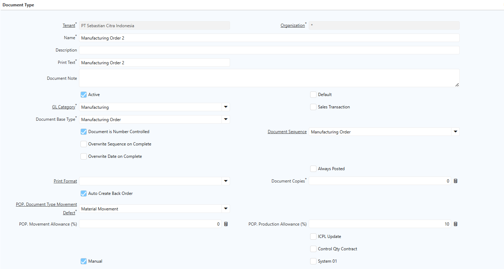
- Klik Save.
Berikut contoh tampilan window dan proses Manufacturing Order untuk versi lama dan versi baru:
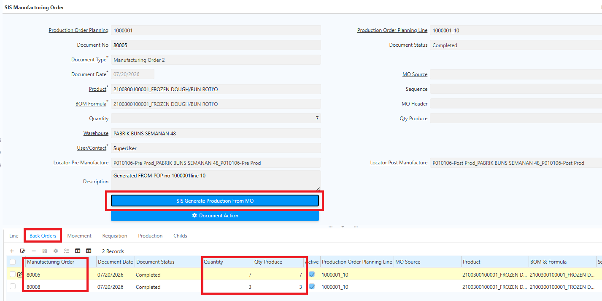
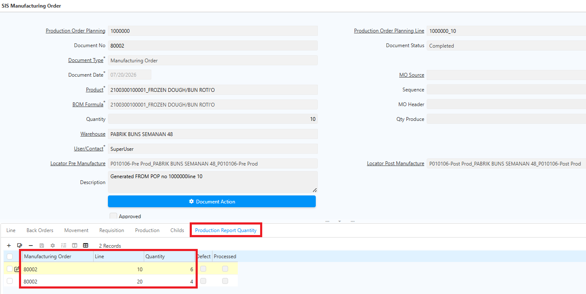
Konsolidasi Movement
Fitur Konsolidasi Movement digunakan untuk menggabungkan beberapa kebutuhan perpindahan barang ke dalam satu dokumen Inventory Move, selama memiliki Warehouse From dan Warehouse To yang sama. Dengan fitur ini, jumlah dokumen movement berkurang sehingga proses pengiriman, penerimaan, dan administrasi gudang menjadi lebih efisien.
Konfigurasi Konsolidasi
Saat sistem men-generate Material Movement, sistem membandingkan informasi perpindahan setiap artikel. Jika beberapa artikel memiliki kombinasi Warehouse From dan Warehouse To yang sama, sistem menggabungkannya ke dalam satu dokumen Inventory Move.
Ikuti langkah berikut untuk mengkonfigurasi konsolidasi movement:
- Buka menu Document Type.
- Cari dokumen Production Order Planning.
- Pada field Consolidate Movement, lakukan konfigurasi:
- Y — Movement akan dikonsolidasi.
- N — Movement tidak dikonsolidasi.
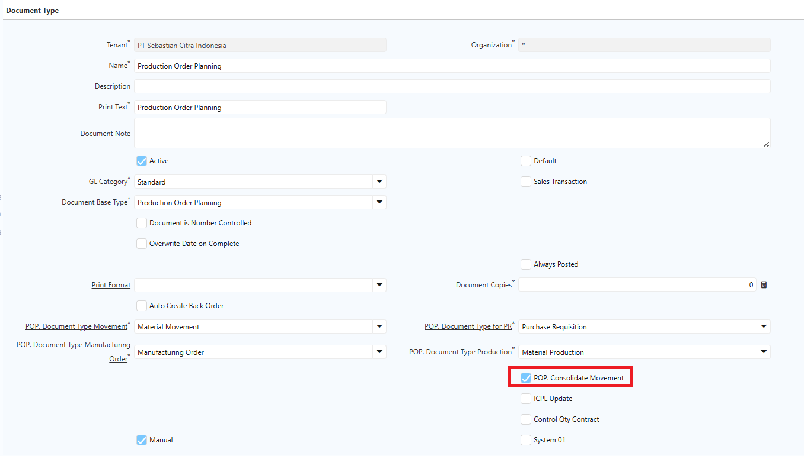
- Klik Save.
Implementasi Konsolidasi Movement
Meskipun beberapa artikel digabung dalam satu dokumen movement, quantity setiap artikel tetap dihitung secara independen sesuai konfigurasi di level product. Sistem tidak menjumlahkan quantity antar artikel yang berbeda — setiap artikel tetap menggunakan quantity hasil perhitungan sesuai konfigurasi BoM, Routing, atau kebutuhan produksinya masing-masing.
Contoh:
| Artikel | Warehouse From | Warehouse To | Qty Movement |
|---|---|---|---|
| Tepung Terigu | Gudang Bahan | Gudang Produksi | 20 Kg |
| Gula Pasir | Gudang Bahan | Gudang Produksi | 20 Kg |
| Ragi | Gudang Bahan | Gudang Produksi | 10 Kg |
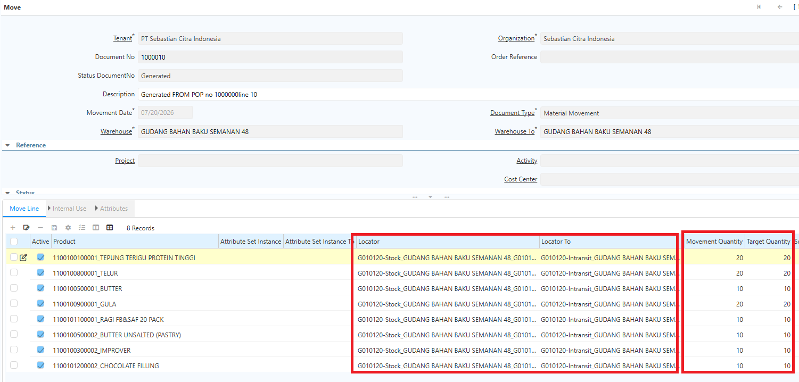
Karena seluruh artikel memiliki Warehouse From dan Warehouse To yang sama, sistem menghasilkan satu dokumen Inventory Move dengan tiga line — masing-masing quantity mengikuti kebutuhan artikel tersebut.
Jika konsolidasi movement tidak dikonfigurasi, setiap artikel akan memiliki dokumen Inventory Move tersendiri as existing saat ini meskipun locator asal dan tujuannya sama.
Lead Time
Lead Time Produksi adalah estimasi waktu yang dibutuhkan untuk menyelesaikan proses produksi suatu produk — sejak produksi dimulai hingga produk selesai.
Konfigurasi Lead Time
Konfigurasi Lead Time dilakukan pada Bill of Material (BoM) produk melalui field Lead Time (Days) — berisi jumlah hari yang dibutuhkan untuk memproduksi produk tersebut.
Contoh konfigurasi:
| Produk | Lead Time (Days) |
|---|---|
| Frozen Dough Buns | 1 Hari |
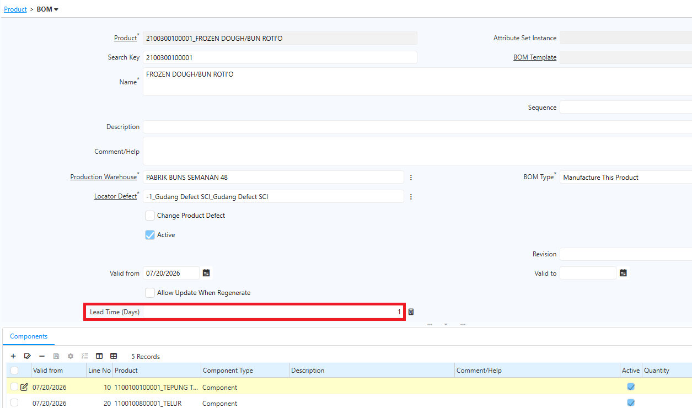
Implementasi Lead Time
Di iDempiere, Estimated Date (tanggal output produksi) ditentukan oleh user. Konfigurasi Lead Time pada BoM berfungsi untuk menentukan Document Date MO dan Movement, dengan rumus berikut:
Document Date = Estimated Date − Lead Time (Days)
Contoh:
| Estimated Date | Lead Time | Document Date |
|---|---|---|
| 21 Juli 2026 | 1 Hari | 20 Juli 2026 |
Production Time
Saat membuat Production Order Planning, user harus menentukan tiga informasi waktu berikut:
- Estimated Date — Tanggal estimasi produk selesai diproduksi.
- Lead Time — Waktu yang diperlukan (dalam hari) untuk memproduksi suatu artikel.
- Finished Time — Tanggal aktual perusahaan menyelesaikan produksi.
Konfigurasi Finished Time diperlukan karena produksi artikel dalam jumlah besar dapat membutuhkan waktu lebih dari satu bulan, sehingga perlu dicatat secara terpisah dari estimasi.
Mekanisme Finished Time
Finished Time bersifat read-only — user tidak dapat menginput atau mengedit nilai ini secara manual. Sistem mengisi Finished Time secara otomatis berdasarkan ketentuan berikut:
- Saat POP dibuat dan MO (Manufacturing Order) ter-generate, sistem membuat field Finished Time di menu Manufacturing Order dalam kondisi kosong.
- Saat dokumen MO di-complete — baik untuk semi finished goods maupun finished goods — sistem otomatis mengisi Finished Time sesuai tanggal dokumen MO di-complete.
- Jika dokumen MO belum di-complete, field Finished Time tetap kosong.
Berikut contoh implementasi Finished Time saat MO baru di-generate dan saat MO sudah di-complete:
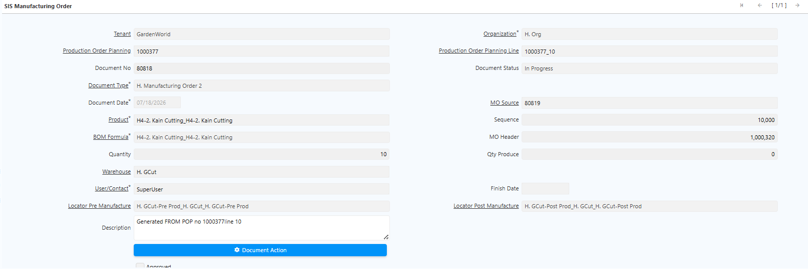
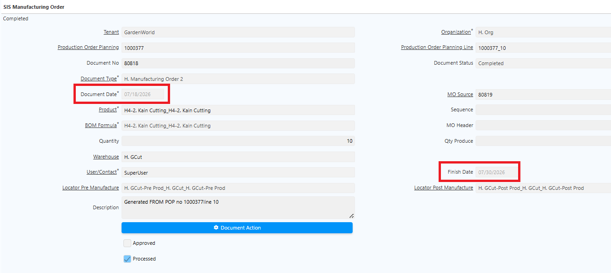
Production Order Planning Subcon
Subcon atau CMT adalah ketika salah satu komponen Finished Goods diproduksi di luar perusahaan oleh vendor.
Dalam proses ini:
- Perusahaan mengirim material ke vendor
- Vendor memproduksi barang setengah jadi atau barang jadi
- Perusahaan melakukan proses pembelian hasil produksi vendor melalui:
- Requisition
- Purchase Order
- Material Receipt
Mekanisme POP Subcon
Jika Finished Goods memiliki komponen subcon, maka Manufacturing Order yang terbentuk hanya satu, yaitu untuk Finished Goods.
Namun, ketika Purchase Order untuk produk subcon selesai diproses, sistem dapat otomatis membuat POP baru untuk Semi Finished Goods yang masih diproduksi secara inhouse.
Setelah produksi Semi Finished Goods selesai dan stok tersedia di warehouse, proses produksi Finished Goods dapat dilanjutkan.
Langkah POP Subcon di Sistem
- Buka menu SIS Production Order Planning
- Masuk ke Tab Line
- Input:
- Produk yang akan diproduksi
- Quantity produksi
- BoM yang digunakan
- Jalankan proses SIS Generate POP BoM

- Klik SIS Generate MO

6. Masuk ke menu Manufacturing Order. Setelah proses Generate MO selesai, sistem otomatis membuat dokumen berikut Back Order, Movement, Requisition, Production, Child dan Production Report Quantity.
- Lakukan proses Requisition untuk material subcon. Alur proses:
- Requisition Complete
- Purchase Order Complete
- Material Receipt
Sistem akan membuat POP baru untuk Semi Finished Goods yang diproduksi secara inhouse.

- Jalankan proses produksi Semi Finished Goods hingga selesai
- Setelah Semi Finished Goods tersedia di Warehouse, lakukan Movement sesuai urutan proses
- Klik tab Movement dan lakukan movement sesuai urutan
- Setelah stok tersedia, jalankan proses produksi pada tab Production Report Quantity:
- Isi quantity produksi
- Isi quantity defect, jika ada
- Centang field Defect untuk produk defect
Produk defect akan diproses movement manual ke locator sesuai konfigurasi BoM.
- Setelah quantity ditentukan, lakukan Complete Document MO. Sistem akan menjalankan proses production secara otomatis dan mengkonsumsi:
- Raw Material
- Semi Finished Goods
Inventory Move Subcon
Pada Production Order Planning (POP) Subcon — di mana proses produksi melibatkan pihak luar — saat Purchase Order (PO) untuk Subcon di-complete, sistem otomatis membuat dokumen Inventory Move untuk artikel tersebut.
Untuk membedakan movement artikel Subcon dari artikel yang diproduksi secara internal, sistem menyalin informasi Business Partner dari PO Subcon ke dokumen Inventory Move terkait secara otomatis. Artikel yang diproduksi oleh perusahaan sendiri tidak memiliki informasi Business Partner pada dokumen Inventory Move.
Berikut contoh implementasi penyalinan Business Partner di Inventory Move artikel Subcon:
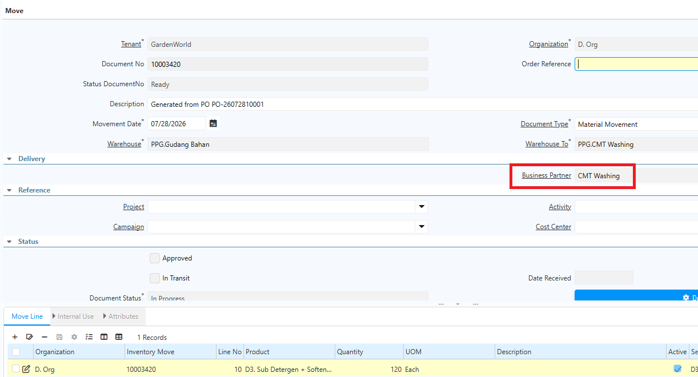
Pelita POP Visual Data
Pelita POP Visual Data adalah fitur visualisasi yang menampilkan setiap tahapan Production Order Planning (POP) — mulai dari penentuan artikel yang akan diproduksi hingga artikel selesai diproduksi. Fitur ini memudahkan pemantauan progress produksi sekaligus memungkinkan generate dokumen di masing-masing tahapan.
Langkah Akses Pelita POP Visual Data
- Buka menu Pelita POP Visual Data
- Input nomor POP di field POP Document No
- Input Line No POP
- Input Manufacture Order
- Klik Visual It

Sistem menampilkan visualisasi Production Order Planning berdasarkan Manufacturing Order (MO) yang dipilih. Setiap tahapan produksi dibedakan menggunakan kodefikasi A–J dengan warna yang berbeda, sehingga progress produksi dapat dipantau secara langsung.
Ketentuan Visualisasi
Berikut ketentuan perubahan warna pada visualisasi:
- Abu-abu — Dokumen sudah di-complete (berlaku untuk Movement, MO, Requisition, PO, dan MR).

- Warna sesuai konfigurasi — Dokumen belum di-complete (berlaku untuk Movement, MO, Requisition, PO, dan MR).
Untuk dokumen selain Movement, Requisition, Purchase Order, dan Material Receipt, warna pada visualisasi tidak berubah — baik saat status dokumen masih draft maupun sudah complete.
Berikut interaksi yang tersedia pada visualisasi:
- Klik satu kali pada salah satu tahapan untuk melihat detail, termasuk dokumen masuk (incoming) dan dokumen keluar (outgoing).
- Klik dua kali pada node untuk membuka menu terkait. Contoh: klik dua kali pada node A akan membuka menu POP.
- Sorot salah satu tahapan untuk melihat informasi dokumen beserta keterkaitannya.
Informasi Warehouse pada Manufacturing Order (MO)
Setiap Manufacturing Order (MO) kini memuat informasi warehouse produksi untuk masing-masing artikel. Dengan informasi ini, user dapat memantau tahapan produksi yang sudah selesai dan yang masih outstanding, serta mengetahui artikel sudah diproduksi sampai tahap mana — apakah masih di cutting, sewing, atau finishing.
Berikut contoh implementasi informasi warehouse pada masing-masing MO:

Master Production Schedule
Master Production Schedule (MPS) adalah rencana produksi utama yang menentukan produk apa yang akan diproduksi, kapan diproduksi dan berapa jumlah yang diproduksi.
Master Production Schedule (MPS) ini menjadi penghubung antara forecast permintaan, sales order, kapasitas produksi dan kebutuhan material.
Fungsi adanya MPS di sistem iDempiere adalah untuk:
- Menjadwalkan produksi finished goods
- Menentukan target produksi per periode
- Mengontrol kapasitas produksi
- Menghindari overstock maupun kekurangan stock
Konfigurasi Sebelum Proses MPS
Sebelum menjalankan proses Master Production Schedule, pastikan beberapa hal berikut sudah disiapkan:
- Template CSV sebagai sumber data produksi
- Product yang akan dijadwalkan produksinya
- Date schedule sebagai acuan tanggal rencana produksi

Konfigurasi Document MPS
Sebelum menjalankan proses Generate MPS, lakukan konfigurasi Document Type MPS terlebih dahulu.
- Nama Document Type MPS
- Document Base MPS
- Document Type POP, dibedakan menjadi 2, yaitu:
- POP 1 → Non System 01
- POP 2 → System 01

Langkah Proses Master Production Schedule
- Buka menu Generate MPS
- Pilih organisasi yang akan digunakan
- Pilih file CSV sebagai sumber data produksi
- Tentukan nilai Distribute (%) untuk mengatur distribusi produksi antara:
- Non System 01
- System 01
Sisa persentase dari distribusi Non System 01 akan otomatis dialokasikan ke System 01.

5. Jalankan proses Generate MPS.
- Setelah proses berhasil, sistem akan membentuk dokumen MPS berdasarkan:
- Tanggal produksi
- Quantity produk
- Mapping data pada file CSV

7. Setelah dokumen MPS di-Complete, sistem otomatis membentuk: POP 1 dan POP 2

- Document Date pada POP yang terbentuk akan mengikuti Date Schedule yang telah ditentukan sebelumnya.
- Dokumen POP yang terbentuk memiliki status Draft dan dapat di-Complete secara manual sesuai kebutuhan
Proses MPS akan menghasilkan dua dokumen Production Order Planning (POP):
- POP 1 → untuk pendistribusian Non System 01
- POP 2 → untuk pendistribusian System 01
Request Distribution Order
Request Distribution Order (RDO) adalah instrumen pengendalian distribusi yang digunakan untuk memonitor, mengalokasikan, dan mendistribusikan barang non-produksi ke warehouse tujuan secara terstruktur dan dapat ditelusuri.
Konfigurasi Request Distribution Order (RDO)
Sebelum proses RDO dijalankan, pastikan konfigurasi berikut sudah diselesaikan:
- Warehouse dan Locator tujuan sudah didefinisikan dengan jelas.
- Document Type untuk delivery dan receipt sudah dikonfigurasi agar sistem dapat mencatat pergerakan barang secara akurat.
- Produk yang akan didistribusikan sudah diinput melalui menu Product Access menggunakan fitur Generate Product.
- Field Organization wajib diisi pada seluruh transaksi operasional untuk menjaga integritas data.
Konfigurasi Document Type RDO
Pada konfigurasi Document Type RDO, terdapat beberapa field utama yang wajib diisi:
| Field | Keterangan |
|---|---|
| Document type delivery | Digunakan untuk mencatat barang keluar dari warehouse asal |
| Document type receipt | Digunakan untuk mencatat penerimaan barang di warehouse tujuan |
| Warehouse intransit | Warehouse transit selama proses distribusi |
| Locator Tujuan | Lokasi penerimaan barang |
| Product Access | Wajib dicentang agar filter produk berjalan sesuai konfigurasi |
Alur Proses Request Distribution Order di Sistem
- Lakukan assign produk melalui fitur Generate Product pada menu Product Access.
- Buka menu SIS RDO

3. Jalankan proses Generate RDO Line untuk menampilkan daftar produk yang sudah dikonfigurasi.
- Pilih produk yang akan didistribusikan sesuai kebutuhan.

Validasi quantity distribusi.
Klik Complete Document untuk menyelesaikan proses RDO.
Setelah dokumen di-complete, sistem akan otomatis membuat dokumen:
- Inventory Move Delivery
- Inventory Move Receipt
Kedua dokumen tersebut akan terbentuk dalam status Draft dan perlu diproses lebih lanjut sesuai alur operasional.
Back Order Pada RDO
Jika quantity distribusi yang diproses lebih kecil dari quantity permintaan, sistem akan otomatis membuat Back Order untuk sisa quantity yang belum terpenuhi.
Dengan mekanisme ini, proses distribusi tetap dapat dilanjutkan tanpa harus membuat dokumen baru secara manual.
ICPL
ICPL atau Price List adalah fitur untuk mengelola dan menyimpan informasi harga jual maupun harga beli produk. Dengan ICPL, perusahaan dapat menetapkan harga yang berbeda untuk setiap pelanggan atau vendor dalam periode tertentu.
ICPL menjadi dasar perhitungan harga pada setiap transaksi. Sistem hanya dapat mengisi harga otomatis pada Sales Order maupun Purchase Order jika price list sudah dikonfigurasi dengan benar.
Manfaat ICPL
- Menstandarkan harga produk secara terpusat sehingga user tidak perlu menginput harga secara manual pada setiap transaksi.
- Mendukung beberapa jenis harga, seperti retail, grosir, dan distributor dalam satu sistem.
- Menyimpan histori perubahan harga sebagai versi baru.
- Menghitung diskon atau markup secara otomatis berdasarkan produk atau kategori.
Pengaturan ICPL Base
Membuat ICPL Base
Ikuti langkah berikut untuk membuat ICPL Base:
- Buka Menu SIS ICPL
- Klik New
- Isi field pada header:
- ICPL Type — Opsional, tentukan jenis harga yang digunakan seperti online, offline, intercompany, atau stock opname.
- Price Include Tax — Tentukan apakah harga sudah termasuk pajak.
- Valid From — Tentukan tanggal mulai berlaku harga.
- Sales Transaction — Centang jika ICPL digunakan untuk transaksi penjualan.
- Set Lucky Number — Opsional, aktifkan jika diperlukan untuk perhitungan tambahan.

- Klik Save
Menambahkan Produk ke ICPL Base
Setelah header ICPL tersimpan, tambahkan daftar harga produk melalui tab Line.
- Buka tab Line
- Klik tombol New
- Pilih Product
- Input Base Price produk

- Klik save
- Ulangi langkah di atas untuk seluruh produk
- Klik complete
- Jalankan proses Generate PLV (Price List Version).
- Sistem akan menyimpan data header dan menyiapkan versi harga.
ICPL With Reference
ICPL With Reference digunakan untuk membuat versi harga baru berdasarkan ICPL Base yang sudah ada. Sistem menghitung harga secara otomatis berdasarkan referensi yang dipilih.
ICPL with Reference dengan Product Category
ICPL With Reference dengan Product Category digunakan ketika satu ICPL memuat beberapa produk dengan kategori berbeda yang memiliki perhitungan harga yang berbeda pula. ICPL Base mencakup semua produk dengan base price masing-masing tanpa filter kategori. Sedangkan di ICPL Reference, perhitungan harga dapat dibedakan per kategori — misalnya produk makanan ditambah Rp2.000 dan produk minuman ditambah Rp3.000.
Ikuti langkah berikut untuk mengkonfigurasi perhitungan harga per kategori:
- Buka menu SIS ICPL.
- Klik New.
- Isi seluruh field pada header.
- Pada field ICPL Reference, pilih ICPL Base yang akan dijadikan acuan.

- Klik Save.
- Masuk ke tab Criteria.
- Input Product Category yang akan diproses.
- Pada field Calculate Type, tentukan metode perhitungan: Add (+), Subtract (-), Multiply ()*, atau Divide (/).
- Pada field Rate, tentukan rate untuk product category tersebut.
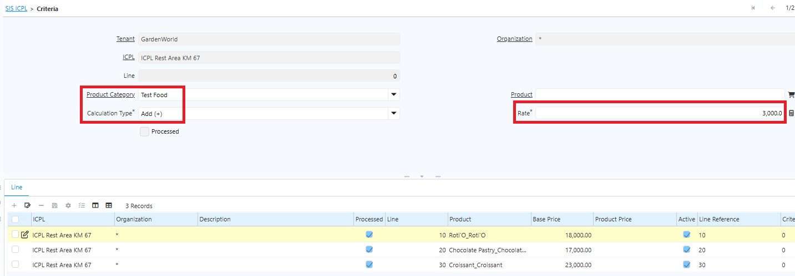
- Klik complete
- Jalankan proses Generate PLV (Price List Version).
- Sistem menampilkan produk beserta harga yang dihitung otomatis berdasarkan harga ICPL Base + Rate, dengan perbedaan perhitungan price sesuai masing-masing kategori.
ICPL with Reference Tanpa Product Category
Jika penentuan harga berlaku untuk semua produk tanpa filter kategori — misalnya berdasarkan ICPL Type seperti Online, Offline, Stock Opname, atau Inter Company — konfigurasi rate tidak perlu dibedakan per kategori.
Ikuti langkah berikut untuk mengkonfigurasi ICPL Reference tanpa filter Product Category:
- Buka menu SIS ICPL.
- Klik New.
- Isi seluruh field pada header.
- Pada field ICPL Reference, pilih ICPL Base yang akan dijadikan acuan.
- Klik Save.
- Masuk ke tab Criteria.
- Kosongkan field Product Category.
- Pada field Calculate Type, tentukan metode perhitungan: Add (+), Subtract (-), Multiply ()*, atau Divide (/).
- Pada field Rate, tentukan rate untuk produk tersebut.
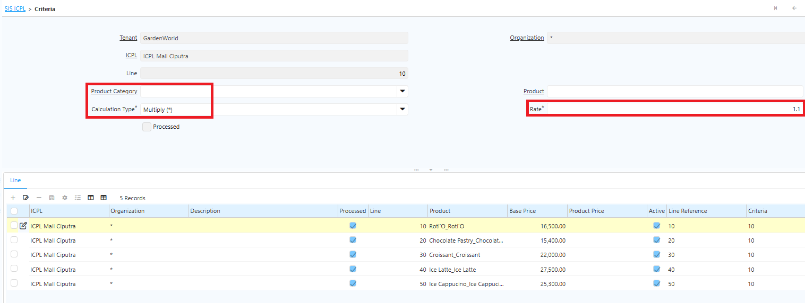
- Klik complete
- Jalankan proses Generate PLV (Price List Version).
- Sistem menampilkan produk beserta harga yang dihitung otomatis berdasarkan harga ICPL Base + Rate.
Tanpa filter Product Category, seluruh produk di ICPL Base dikalkulasi dengan rate yang sama sehingga perhitungan harga setiap produk seragam.
User tidak perlu membuat ICPL Line secara manual karena sistem otomatis membuat data saat proses Generate PLV dijalankan. ICPL With Reference juga dapat digunakan sebagai referensi untuk ICPL turunan lainnya.
ICPL with Reference Produk Tertentu
ICPL Reference memungkinkan penyesuaian harga tidak hanya berdasarkan Product Category, tetapi juga berdasarkan produk tertentu dalam kategori tersebut. Konfigurasi ini digunakan apabila terdapat produk yang memiliki penambahan atau pengurangan harga berbeda dari aturan umum kategori.
Sebagai contoh, pada outlet Rest Area berlaku ketentuan sebagai berikut:
- Kategori Makanan memiliki penambahan harga sebesar Rp2.000 dari harga dasar (Base Price). Namun, produk Croissant dan Beef Pastry memiliki kebijakan khusus dengan penambahan harga sebesar Rp5.000.
- Kategori Ice Cream memiliki penambahan harga sebesar Rp4.000 dari harga dasar. Namun, produk Ice Cream Cone dan Ice Cream Sundae memiliki penambahan harga sebesar Rp6.000.
Untuk memenuhi kebutuhan tersebut, lakukan konfigurasi ICPL Reference pada level Product Category sebagai aturan umum, kemudian tambahkan konfigurasi pada level Product sebagai pengecualian (override). Saat sistem menghasilkan Price List Version, konfigurasi pada level produk akan diprioritaskan dibandingkan konfigurasi kategori.
- Buka menu SIS ICPL.
- Klik New.
- Isi seluruh field pada header.
- Tentukan tanggal Valid From.
- Pada field ICPL Reference, pilih ICPL Base yang akan dijadikan acuan.
- Klik Save.
- Masuk ke tab Criteria.
- Input Product Category yang akan diproses.
- Pada field Calculate Type, tentukan metode perhitungan: Add (+), Subtract (-), Multiply ()*, atau Divide (/).
- Pada field Rate, tentukan rate untuk product category tersebut.
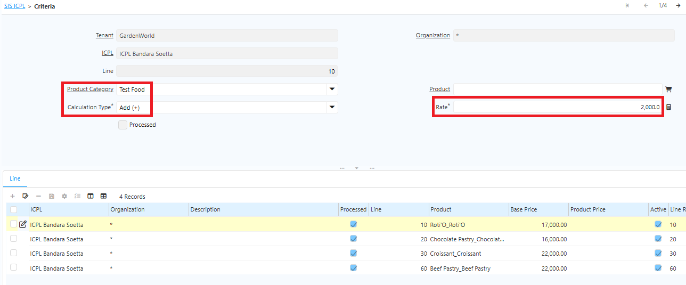
- Klik save
- Untuk menambahkan pengecualian pada produk tertentu, klik New kembali pada tab Criteria.
- Kosongkan field Product Category.
- Pada field Product, pilih produk yang memiliki penyesuaian harga berbeda dari kategori.
- Tentukan Calculate Type sesuai kebutuhan.
- Masukkan nilai Rate yang berlaku khusus untuk produk tersebut.
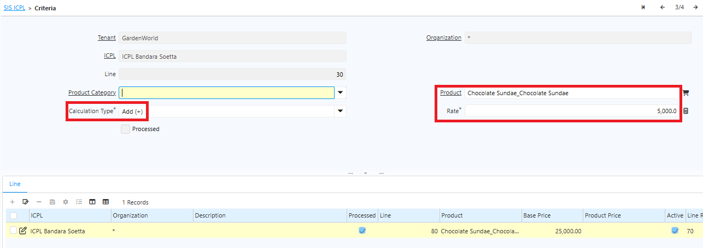
- Klik save.
- Klik complete.
- Jalankan proses Generate PLV (Price List Version).
Setelah proses Generate PLV dijalankan, sistem akan menghitung harga jual berdasarkan Base Price pada ICPL Base dengan aturan berikut:
- Produk yang tidak memiliki konfigurasi khusus akan menggunakan nilai Rate yang ditentukan pada Product Category.
- Produk yang memiliki konfigurasi khusus akan menggunakan nilai Rate pada level Product, sehingga mengabaikan konfigurasi yang terdapat pada Product Category.
Dengan mekanisme ini, perusahaan dapat menerapkan aturan harga umum untuk satu kategori sekaligus memberikan penyesuaian harga khusus pada produk tertentu tanpa perlu membuat ICPL yang terpisah.
Update ICPL
Perubahan ICPL hanya dapat dilakukan melalui menu ICPL Update. User tidak dapat mengubah langsung dokumen ICPL dengan status Complete. Hanya ICPL Base yang dapat diperbarui.
Langkah Update ICPL
- Buka menu SIS ICPL Update
- Pilih ICPL Base yang akan diperbarui.
- Input tanggal baru pada field Valid From

- Masuk ke tab Line
- Pilih Produk
- Input Price terbaru

- Klik save
- Klik complete
Saat ICPL Base diperbarui, seluruh ICPL turunan akan ikut ter-update secara otomatis.
Implementasi ICPL
ICPL Pada Warehouse
Setiap warehouse atau outlet harus memiliki ICPL yang digunakan dalam transaksi. Satu warehouse dapat memiliki 4 jenis ICPL:
- ICPL Online
- ICPL Offline
- ICPL Intercompany
- ICPL Stock Opname

Jika terdapat perubahan ICPL atau Price List pada warehouse, lakukan perubahan langsung melalui field ICPL 1–4. Setiap perubahan akan tercatat secara otomatis di tab Listing ICPL for Warehouse, yang berfungsi menampilkan histori perubahan ICPL pada warehouse tersebut. Berikut contoh perubahan ICPL untuk warehouse:

ICPL Pada Purchase Order
ICPL dapat digunakan untuk menentukan harga pembelian dari vendor. Setiap vendor dapat memiliki price list yang berbeda sesuai kesepakatan harga atau kontrak pembelian. Satu vendor hanya dapat menggunakan satu ICPL Purchase.
Setup ICPL Purchase pada Vendor
- Buka menu Business Partner
- Masuk ke bagian Vendor Information.
- Isi field Purchase Price List dengan ICPL yang digunakan.

4. Klik save
Setelah ICPL Purchase dikonfigurasi, sistem akan otomatis menampilkan harga pada transaksi Purchase Order sesuai price list vendor yang dipilih.
ICPL Penjualan
Untuk membatasi pilihan ICPL yang muncul pada transaksi penjualan, lakukan konfigurasi Target Document Type terlebih dahulu sebelum membuat Sales Order. Ikuti langkah berikut:
- Buka menu Document Type.
- Pilih document POS Order.
- Pada field ICPL Type 1, tentukan ICPL yang akan digunakan — Online, Offline, Intercompany, atau Stock Opname.
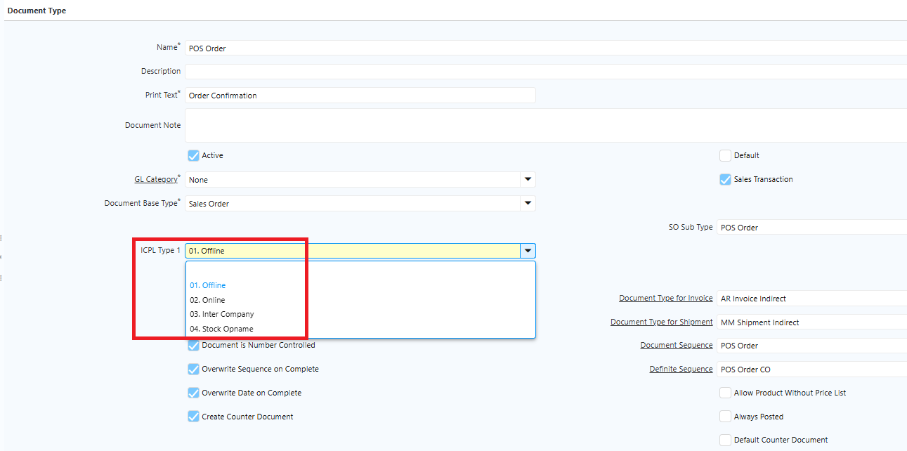
- Klik Save.
Pada transaksi penjualan, sistem membaca harga produk berdasarkan ICPL yang telah dikonfigurasi di masing-masing warehouse. Karena setiap warehouse atau outlet memiliki ICPL tersendiri, lakukan konfigurasi ICPL untuk setiap warehouse atau outlet. Ikuti langkah berikut:
- Buka menu Warehouse and Locators.
- Input Search Key dan Name sesuai kebutuhan.
- Tentukan Address untuk outlet.
- Pada field ICPL Online, Offline, Inter Company, dan Stock, tentukan ICPL yang digunakan.
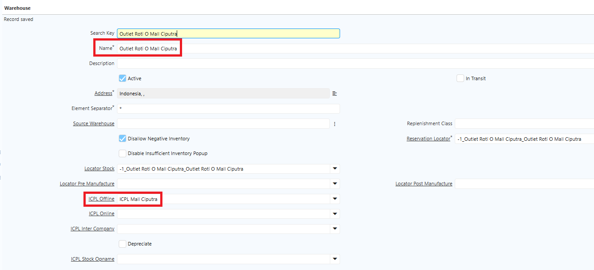
- Klik Save.
Implementasi ICPL pada Sales Order
- Buka menu Sales Order.
- Tentukan Target Document Type sesuai konfigurasi sebelumnya.
- Tentukan Warehouse untuk transaksi tersebut.
- Klik Save.
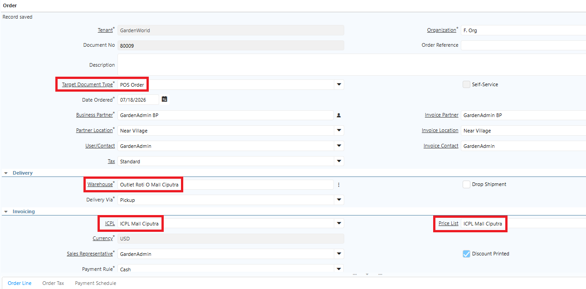
Saat dokumen disimpan, sistem otomatis mengisi field ICPL dan Price List pada Sales Order sesuai konfigurasi ICPL di warehouse yang dipilih. Saat user memilih produk yang akan dijual, harga terisi otomatis sesuai konfigurasi ICPL tersebut.
Product Without Price List
Beberapa produk tidak memiliki price list, sehingga saat membuat Purchase Order, tim purchasing menentukan harga sesuai kebijakan perusahaan. Untuk mengakomodasi kondisi ini, iDempiere menyediakan field Allow Product Without Pricelist yang memungkinkan produk tanpa price list tetap dapat diproses dalam Purchase Order.
Namun, karena fleksibilitas ini berisiko menimbulkan lonjakan harga yang belum disepakati, perusahaan dapat mengatur batas maksimal harga pembelian untuk setiap produk guna melindungi kepentingan perusahaan.
Konfigurasi di Document Type Purchase Order
Ikuti langkah berikut untuk mengaktifkan atau menonaktifkan fitur ini:
- Buka menu Document Type.
- Cari dokumen Purchase Order.
- Pada field Allow Product Without Pricelist:
- Centang — Produk tanpa price list dapat diproses pada dokumen tersebut.
- Tidak dicentang — Produk tanpa price list tidak dapat diproses.
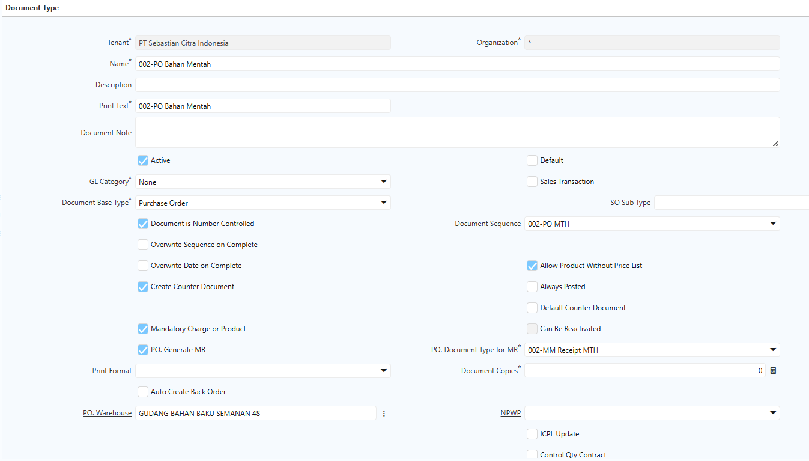
- Klik Save.
Konfigurasi Maksimal Harga di Level Product
Ikuti langkah berikut untuk mengatur batas maksimal harga pembelian per produk:
- Buka menu Product.
- Cari produk yang akan dikonfigurasi.
- Pada field Max Purchasing Price, input batas maksimal harga untuk produk tersebut.
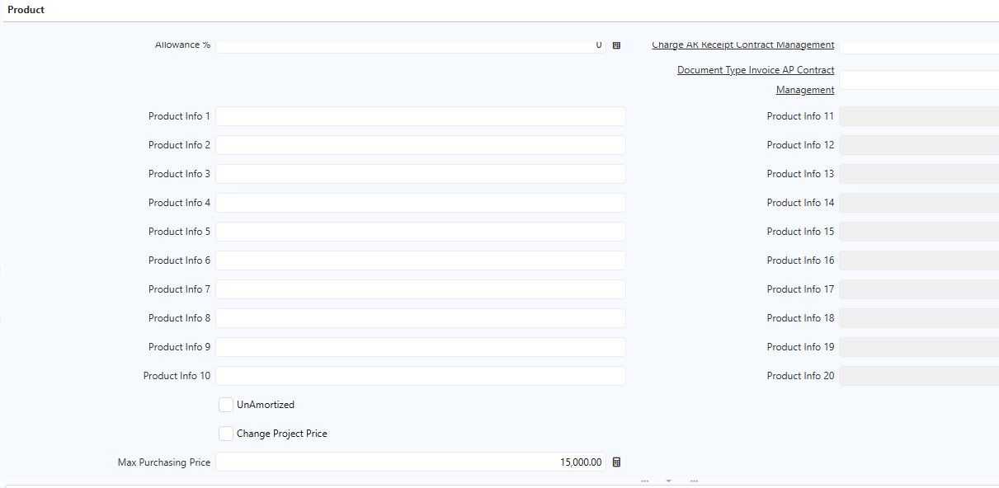
- Klik Save.
Setelah dikonfigurasi, jika harga yang diinput pada Purchase Order melebihi Max Purchasing Price, sistem otomatis menampilkan pesan error bahwa harga yang diinput melebihi batas maksimal yang telah ditetapkan.
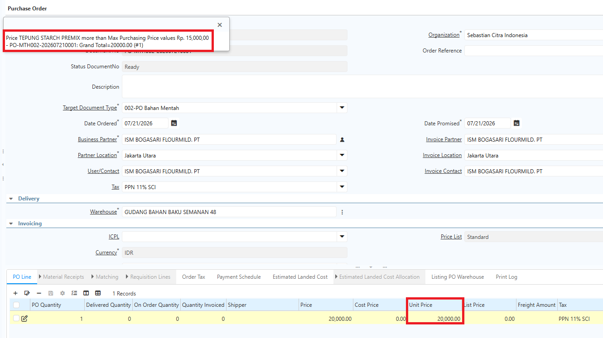
Cost of Production
Cost of Production adalah biaya yang dikeluarkan untuk memproduksi barang. Biaya ini mencakup bahan baku, tenaga kerja, dan biaya overhead produksi.
Di iDempiere, Cost of Production terdiri dari tiga elemen utama:
- Biaya Bahan Baku Langsung. Biaya bahan yang langsung digunakan dalam proses produksi, seperti tepung, kain, atau bahan utama lainnya.
- Biaya Tenaga Kerja Langsung. Biaya tenaga kerja yang langsung mengerjakan proses produksi, seperti upah operator mesin.
- Biaya Overhead Pabrik. Biaya tidak langsung yang mendukung proses produksi, seperti listrik pabrik dan depresiasi mesin.
Metode Perhitungan Biaya di iDempiere
Standar Cost
Standard Cost menggunakan biaya standar yang ditetapkan di awal periode. Sistem akan membandingkan biaya aktual dengan biaya standar dan mencatat selisihnya sebagai variance.
Metode ini membantu perusahaan:
- Mengontrol biaya produksi
- Mempermudah evaluasi selisih biaya
- Menjaga kestabilan nilai persediaan
Average Cost
Average Cost menghitung ulang biaya rata-rata setiap kali terjadi transaksi masuk.
Nilai persediaan akan selalu mengikuti rata-rata harga terbaru. Metode ini cocok digunakan untuk:
- Raw Material
- Produk dengan perubahan harga yang tidak terlalu signifikan
FIFO (First In First Out)
FIFO menggunakan stok berdasarkan urutan barang masuk pertama. Sistem akan menghitung harga pokok penjualan menggunakan biaya dari lot yang pertama kali diterima. Metode ini cocok digunakan untuk:
- Produk dengan masa simpan tertentu
- Barang yang harus keluar berdasarkan urutan penerimaan
Variance
Variance adalah selisih antara biaya standar dan biaya aktual. Perusahaan dapat menggunakan variance untuk:
- Evaluasi biaya produksi
- Penyesuaian standard costing
- Analisis efisiensi produksi
Komponen variance dapat mencakup:
- FOH (Factory Overhead)
- Biaya tambahan lainnya
Konfigurasi Costing
Sebelum melakukan transaksi, tentukan costing method untuk setiap kategori produk. User dapat melakukan konfigurasi di Product Category. Ikuti langkah berikut untuk mengatur costing pada Product Category:
- Buka menu Product Category
- Klik New
- Isi field Name, contoh Raw Material
- Isi field Material Policy

- Masuk ke tab Accounting
- Klik Accounting Schema
- Pilih Costing Method dan Costing Level sesuai kebijakan perusahaan

- Klik Save
Implementasi Penggunaan Costing
Finished Goods & Semi Finished Goods
Tim PSI merekomendasikan penggunaan Standard Costing untuk Finished Goods dan Semi Finished Goods. Metode ini:
- Sudah menjadi praktik umum di sistem manufaktur
- Mengacu pada blueprint costing perusahaan
- Membantu menjaga akurasi laporan keuangan
- Mempermudah kontrol dan evaluasi biaya produksi
Raw Material
Tim PSI merekomendasikan penggunaan Average Cost untuk Raw Material.
Metode ini dinilai cukup karena perubahan harga bahan baku biasanya tidak menghasilkan selisih biaya yang signifikan.
Sub-Contracting
Proses subcontracting dapat menggunakan:
- Standard Costing
- Average Costing
Pemilihan metode mengikuti kebijakan perusahaan. Pada proses subcontracting:
- Sistem akan membuat movement dari warehouse internal ke warehouse subcontractor.
- Sistem juga akan membuat jurnal internal use secara otomatis di belakang proses transaksi.
Tujuan Penggunaan Standar Costing
Penggunaan Standard Costing membantu perusahaan:
- Mengendalikan koreksi HPP atau costing
- Mengurangi kesalahan operasional
- Mempermudah proses monitoring biaya
Dengan minimnya koreksi costing, perusahaan dapat menyusun laporan keuangan dalam kurun waktu yang lebih cepat dan lebih stabil.
Cost Adjustment
Cost Adjustment adalah proses penyesuaian nilai valuasi produk atau barang yang sudah tercatat di sistem. Penyesuaian ini dilakukan karena:
- Perbedaan harga
- Kesalahan pencatatan sebelumnya
Cost Adjustment tidak melakukan revaluasi terhadap transaksi historis. Sistem hanya menggunakan nilai cost baru untuk transaksi berjalan dan transaksi berikutnya.
Ketentuan Costing Method
Costing Method tidak dapat diubah setelah digunakan dalam transaksi. Pembatasan ini bertujuan untuk:
- Menjaga konsistensi data.
- Menjaga integritas transaksi.
- Menghindari ketidaksesuaian laporan costing.
Jika perusahaan perlu menggunakan costing method yang berbeda, buat product atau artikel baru dan arahkan ke Product Category yang sesuai.
Langkah Cost Adjustment di Sistem
Ikuti langkah berikut untuk melakukan Cost Adjustment:
- Buka menu Cost Adjustment
- Klik New
- Pilih Costing Method pada produk
- Pilih Movement Date

- Masuk ke tab Cost Adjustment Line
- Pilih produk yang akan disesuaikan
- Input nilai harga baru pada field New Cost Price
- Input Charge

- Klik save
- Klik complete
Revaluasi HPP
Cost Adjustment dapat digunakan untuk melakukan revaluasi HPP pada produk di level Batch/Lot. Langkah-langkahnya sama dengan proses Cost Adjustment di atas, namun pada field Attribute Set Instance, input ASI atas produk yang akan diproses.
Sistem menghitung harga rata-rata berdasarkan harga beli produk terakhir pada masing-masing Batch atau Lot, sehingga akurasi nilai persediaan per Batch atau Lot tetap terjaga.
Hasil revaluasi dapat dicek di master produk melalui tab Cost. Setelah Cost Adjustment selesai, Average PO akan muncul pada produk tersebut dengan nilai Current Cost Price sesuai harga saat Cost Adjustment diproses.
Mekanisme Cost Adjustment di Sistem
Setiap Cost Adjustment — baik yang menggunakan ASI maupun tidak — menghasilkan satu record pada tabel Transaction (M_Transaction). Nilai yang dicatat pada Transaction diambil dari jurnal akuntansi yang terbentuk saat Cost Adjustment diproses.
Berikut ketentuan Movement Type berdasarkan kondisi harga:
| Kondisi | Nilai yang Digunakan | Movement Type |
|---|---|---|
| Current Cost Price < New Cost Price | Nilai jurnal Debit Asset | I+ (Inventory In) |
| Current Cost Price > New Cost Price | Nilai jurnal Kredit Asset | I- (Inventory Out) |
Ketentuan tambahan pada Transaction:
- Organization, Product, dan ASI mengikuti data pada dokumen Cost Adjustment.
- Movement Quantity selalu bernilai 0 karena Cost Adjustment hanya mengubah nilai (cost), bukan jumlah stok.
- Physical Inventory Line pada Transaction diisi menggunakan Inventory Line dari Cost Adjustment Line, sehingga transaksi tetap memiliki referensi ke dokumen sumber.
- Locator pada Transaction menggunakan Locator In Transit yang dikonfigurasi pada Document Type Cost Adjustment, karena field ini bersifat mandatory.
Nilai jurnal yang digunakan sebagai dasar koreksi — baik dari sisi Debit maupun Kredit — disimpan pada kolom Correction Amount di Transaction.
Catatan: Transaction yang dibuat dari Cost Adjustment hanya mencatat perubahan nilai persediaan (cost) dan tidak mempengaruhi kuantitas stok, sehingga Movement Quantity selalu bernilai 0.
Purchase Price Contract
Purchase Price Contract adalah mekanisme untuk menetapkan harga pembelian yang telah disepakati antara perusahaan dan Business Partner (vendor) untuk produk tertentu dalam periode waktu tertentu.
Mekanisme ini membantu perusahaan:
- Menjaga konsistensi harga pembelian
- Mengontrol harga sesuai perjanjian
- Menghindari perubahan harga pasar yang tidak sesuai kontrak
Konfigurasi Awal Purchase Price Contract
Sebelum membuat Purchase Price Contract, lakukan konfigurasi ICPL terlebih dahulu:
- Setup Price List di ICPL.
- Tentukan price list produk yang akan digunakan untuk setiap Business Partner.
- Pastikan setiap Business Partner sudah memiliki konfigurasi ICPL sebelum proses Purchase Price Contract dijalankan.
ICPL menjadi dasar harga yang digunakan dalam Purchase Price Contract.
Langkah Pembuatan Purchase Price Contract
Ikuti langkah berikut untuk membuat Purchase Price Contract:
- Buka menu SIS Purchase Price Contract
- Input nama Business Partner
- Input Valid From dan Valid To - tentukan periode waktu kontrak berjalan

Masuk ke tab SIS Purchase Price Contract Line
Input Produk, Harga Produk, Quantity Produk dan UoM

- Klik complete
Setelah dokumen di-complete, sistem akan menjalankan beberapa proses otomatis:
- Sistem membuat ICPL Update dengan status Complete pada ICPL yang sudah di-setting di Business Partner.
- Sistem mengacu pada data valid from, product dan price yang terdapat pada Price Contract Line
- Sistem memperbarui data Purchase Price List berdasarkan price list pada ICPL Base.
- Sistem memperbarui data ICPL sesuai data pada SIS Purchase Price Contract.
Realisasi di Purchase Order
Sebelum Purchase Order di-complete, pastikan data berikut sesuai dengan Purchase Price Contract:
- Business Partner pada PO sama dengan Business Partner pada Purchase Price Contract.
- Product pada PO sama dengan product pada Price Contract Line.
- Tanggal pembelian masih berada dalam periode kontrak:
- Valid From
- Valid To
- Warehouse penerimaan sesuai dengan warehouse pada Purchase Price Contract
Setelah Purchase Order di-complete, sistem akan menjalankan proses berikut:
- Sistem membuat PO Line yang sesuai dengan Price Contract Line.
- Sistem memperbarui nilai:
- Qty Realization
- Total Contract Realization
Update ini membantu perusahaan memonitor realisasi pembelian terhadap kontrak yang sudah disepakati.
Asset Management
Asset Movement
Asset Movement adalah proses perpindahan aset dari satu lokasi ke lokasi tujuan untuk aktivasi aset. Saat dokumen Invoice atau Purchase Order aset di-complete, sistem otomatis memindahkan aset ke warehouse atau locator tujuan sesuai Material Receipt/BPB, dan field Locator di SIS Asset terisi otomatis sesuai locator di Material Receipt.
Jika aset perlu dipindahkan lagi ke outlet tujuan, user harus melakukan Inventory Move secara manual. Perpindahan ini menentukan proses depresiasi aset tersebut. Setelah aset dipindahkan ke locator atau outlet tujuan, status aset berubah menjadi aktif. Perpindahan aset ditentukan berdasarkan ASI (Attribute Set Instance).
Sebelum melakukan perpindahan aset, konfigurasi warehouse tujuan terlebih dahulu sebagai warehouse untuk depresiasi. Ikuti langkah berikut:
- Buka menu Warehouse & Locator.
- Centang field Depreciate.
- Tentukan Operational Date untuk warehouse atau outlet yang akan diproses.
- Klik Save.
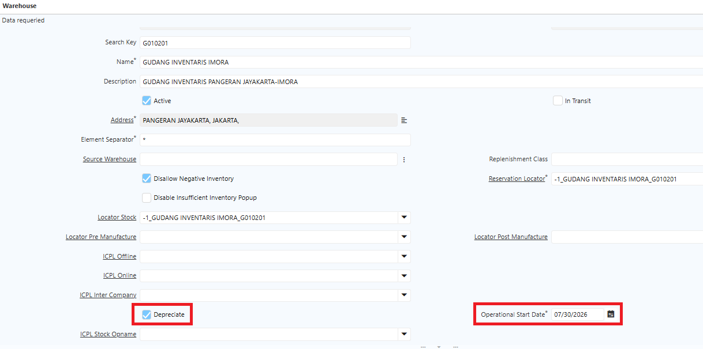
Setelah field Depreciate dicentang, aset akan otomatis aktif saat dipindahkan ke warehouse tersebut.
Ikuti langkah berikut untuk melakukan perpindahan aset:
- Buka menu Inventory Move
- Tentukan warehouse asal dan warehouse tujuan
- Masuk ke tab Move Line
- Tentukan asset yang akan diproses
- Tentukan locator asal dan locator tujuan
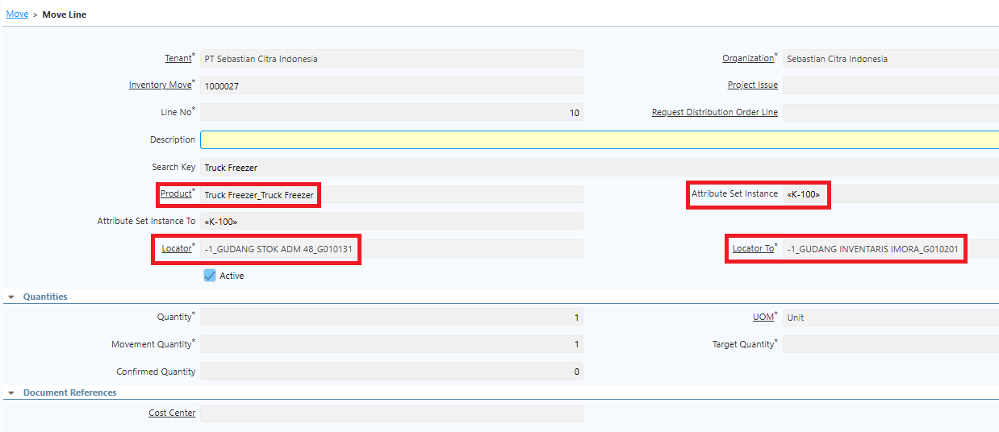
- Masuk ke tab Attribute
- Tentukan Attribute Set Instance (ASI) atas aset yang akan dipindahkan
- Klik save
- Klik complete pada dokumen movement
Di belakang layar, saat movement di-complete, sistem otomatis meng-complete dokumen aset atas ASI tersebut. Locator pada dokumen aset juga terisi otomatis sesuai locator Movement, dan dokumen aset teraktivasi secara otomatis.
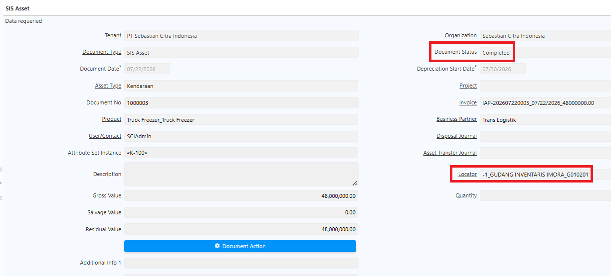
Asset Addition
Asset Addition adalah proses penambahan nilai pada aset yang telah ada, akibat investasi lanjutan, peningkatan kapasitas, perbaikan mayor (major overhaul), renovasi, revaluasi, atau kapitalisasi biaya.
Ikuti langkah berikut untuk melakukan Asset Addition:
- Buka menu SIS Asset Addition.
- Klik New.
- Input field-field pada header.
- Pada field Asset Addition Type, pilih Addition.
- Masuk ke tab Line.
- Input nomor dokumen aset yang akan diproses.
- Tentukan Charge untuk transaksi tersebut
- Input Addition Amount yang akan diproses.
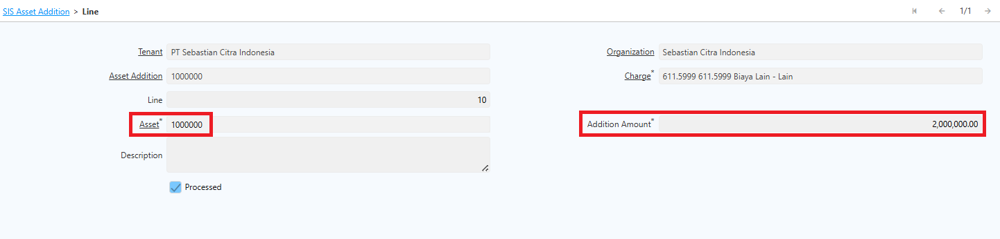
- Klik Save.
- Klik Complete pada dokumen.
Setelah dokumen Asset Addition di-complete, sistem otomatis mengkalkulasi ulang Gross Value dan Residual Value aset dengan menambahkan Addition Amount. Nilai depresiasi juga ikut menyesuaikan dengan Gross Value yang baru.
Selain itu, sistem otomatis membentuk dokumen pendukung berikut:
Cost Adjustment
Merevaluasi nilai inventory aset sebelumnya dengan nilai saat ini, sehingga nilai aset diperbarui dengan new cost.
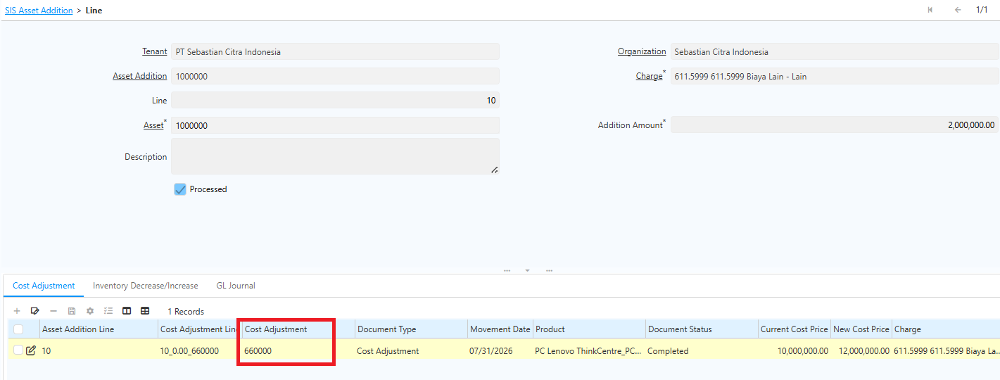
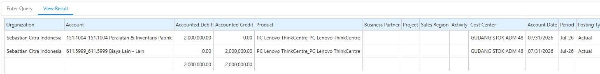
Dokumen Cost Adjustment akan ditampilkan di tab Asset Addition Line dan mereferensikan ke dokumen tersebut.
Asset Transfer
Asset Transfer adalah proses pengalihan nilai antar aset. Fitur ini digunakan untuk menggabungkan beberapa aset yang sebelumnya dicatat secara terpisah menjadi satu aset induk (parent asset), guna memudahkan pengelolaan.
Pada saat melakukan Asset Transfer, sistem akan membentuk transaksi menggunakan Charge tertentu. Nilai Charge tidak dipilih secara manual pada saat transaksi, melainkan ditentukan melalui konfigurasi sistem sehingga field Charge akan terisi secara otomatis sesuai konfigurasi yang berlaku.
Lakukan konfigurasi Charge untuk transaksi Asset Transfer melalui menu System Configurator dengan langkah-langkah berikut:
- Buka menu System Configurator.
- Klik New.
- Isi field Name dengan SIS_CHARGE_ASSET_TRANSFER_ID.
- Isi field Configured Value dengan Charge ID yang akan digunakan sesuai kebijakan perusahaan.
- Pilih Configuration Level = Client.
- Klik save.
Setelah konfigurasi selesai, setiap transaksi Asset Transfer akan menggunakan Charge tersebut secara otomatis.
Ikuti langkah berikut untuk melakukan Asset Transfer:
- Buka menu SIS Asset Addition.
- Klik New.
- Input field-field pada header.
- Pada field Asset Addition Type, pilih Transfer.
- Masuk ke tab Line.
- Pada field Asset From, input nomor dokumen aset asal (aset yang akan digabungkan).
- Pada field Asset To, input nomor dokumen aset tujuan (aset induk).
- Field Addition Amount terisi otomatis dengan nilai sisa (Residual Value) dari aset asal.
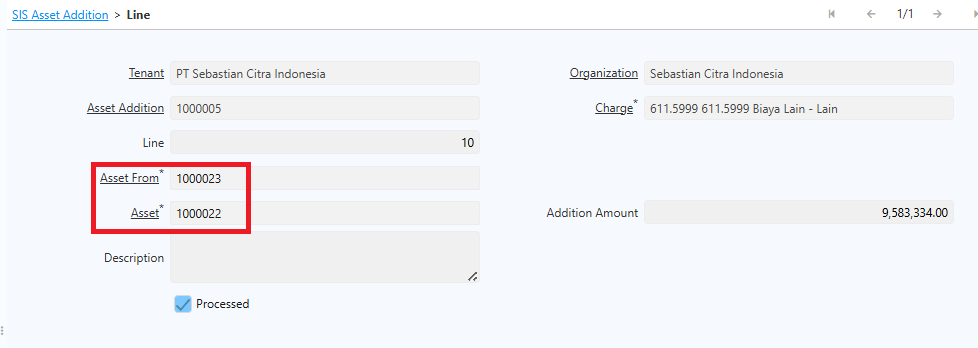
- Klik Save.
- Klik Complete pada dokumen.
Setelah dokumen Asset Transfer di-complete, Residual Value aset tujuan terkalkulasi dengan nilai dari aset asal, sedangkan Residual Value aset asal menjadi 0 karena nilainya telah digabungkan ke aset tujuan. Depresiasi dilanjutkan sesuai masa manfaat ekonomi pada aset tujuan.
Saat melakukan Asset Transfer, sistem otomatis menjalankan mekanisme berikut:
GL Journal
Sistem membuat jurnal pembalik untuk transfer aset dengan ketentuan berikut:
- Debit — Akumulasi penyusutan atas aset from.
- Kredit — Akumulasi penyusutan atas aset to.
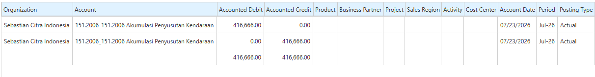
Inventory Decrease/Increase (Internal Use)
Sistem memproses pengurangan inventory atas aset asal yang ditransfer. Jurnalnya: Charge pada debit dan Peralatan (aset from) pada kredit.
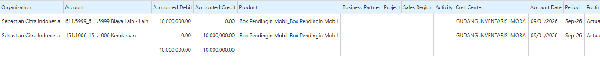
Cost Adjustment
Setelah Internal Use selesai, sistem menambahkan nilai inventory aset tujuan melalui Cost Adjustment senilai aset from dari asset transfer.
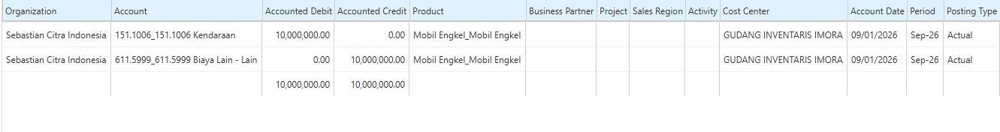
Konfigurasi charge untuk Internal Use dan Cost Adjustment dilakukan di level Asset Type. Dokumen yang terbentuk — Cost Adjustment, Inventory Decrease/Increase, dan GL Journal — akan ditampilkan di tab Asset Addition Line dan mereferensikan masing-masing dokumen terkait.
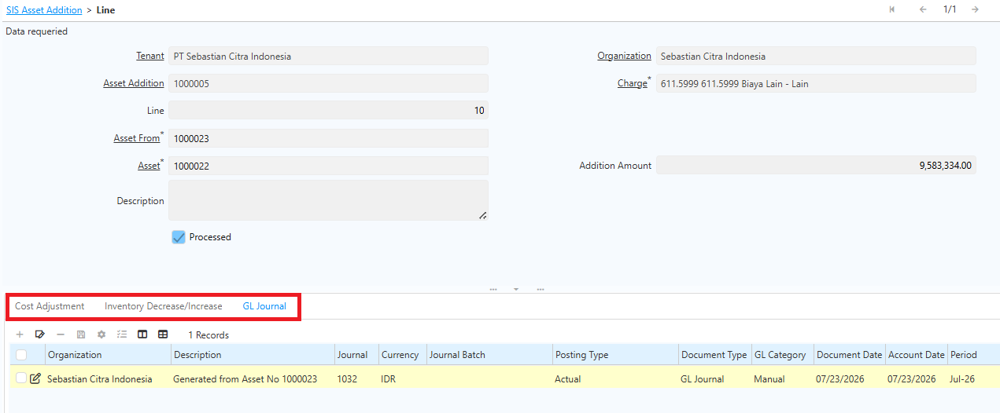
Asset Depreciation
Asset Depreciation adalah proses pencatatan penurunan nilai ekonomis aset tetap secara sistematis selama masa manfaatnya, sesuai kebijakan akuntansi perusahaan dan standar pelaporan keuangan yang berlaku. Periode atau masa manfaat aset dikonfigurasi di Asset Type.
Di iDempiere, masa manfaat aset — yang disebut Number of Entry — hanya dapat diedit sebelum dokumen aset di-complete. Setelah dokumen di-complete, masa manfaat tidak dapat diubah.
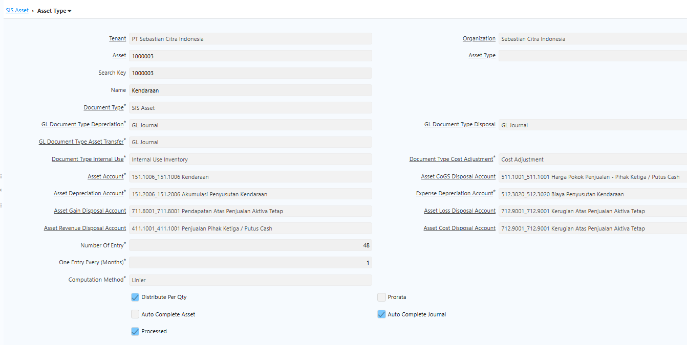
Sistem otomatis menyesuaikan Depreciation Amount berdasarkan masa manfaat yang diperbarui. Hal ini diperlukan untuk mengakomodasi kondisi penggabungan beberapa aset yang sebelumnya dicatat secara terpisah menjadi satu aset induk (parent asset), di mana aset induk tersebut kemungkinan sudah mengalami depresiasi sebelumnya.
Mekanisme Depresiasi
Depresiasi aset berjalan jika aset sudah berada di warehouse atau outlet tujuan yang memiliki field Depreciate tercentang, dan dalam jangka tanggal operasional outlet tersebut. Jika operasional outlet belum dimulai, aset tidak dapat didepresiasi.
Catatan: Movement date aset dari warehouse asal ke outlet atau warehouse tujuan harus lebih besar dari tanggal operasional outlet. Aset akan terdepresiasi otomatis setelah melewati tanggal operasional tersebut.
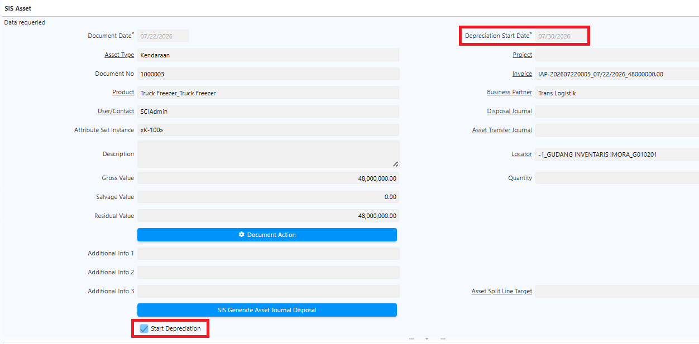
Konfigurasi auto complete aset dapat dilakukan di Asset Type. Jika dikonfigurasi, depresiasi langsung berjalan secara otomatis tanpa tindakan manual.
Ikuti langkah berikut untuk melakukan verifikasi depresiasi aset:
- Buka menu SIS Asset
- Pilih asset yang akan diproses
- Pada tab Line, periksa Depreciation Date dan nilai depresiasi aset selama masa manfaatnya.
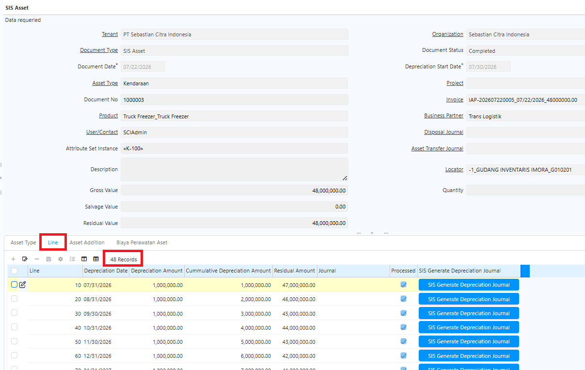
Depresiasi berjalan secara otomatis sesuai scheduler yang telah dikonfigurasi.
Report Asset
Report Asset digunakan untuk memantau posisi aset tetap perusahaan, meliputi nilai perolehan, nilai buku berjalan, status penyusutan, dan lokasi fisik aset. Laporan ini umumnya digunakan untuk:
- Audit fisik aset — Mencocokkan data locator dan Attribute Set Instance dengan kondisi fisik di lapangan.
- Rekonsiliasi nilai buku — Membandingkan Gross Value dan Residual Value untuk keperluan laporan neraca.
- Pemantauan penyusutan — Memverifikasi kelengkapan proses depresiasi berdasarkan Depreciation Date.
- Penelusuran asal aset — Menelusuri kembali aset ke dokumen pembelian terkait.
Langkah Akses Report Asset
Buka menu SIS Report Asset.
Input field berikut sesuai kebutuhan:
- Organization
- Asset Type
- Locator
- Document Status
- Depreciation Date
Klik Ok.
Sistem menampilkan daftar aset sesuai filter yang dikonfigurasi.

Berikut penjelasan kolom yang tercantum pada report aset:
- Asset dan Document — Dokumen transaksi asal yang menjadi dasar pembentukan aset. Digunakan sebagai jejak audit untuk menelusuri asal usul perolehan aset.
- Product — Produk acuan yang digunakan sebagai dasar pembentukan aset.
- Gross Value — Nilai perolehan awal aset (harga beli) sebelum dikurangi akumulasi penyusutan.
- Residual Value — Nilai buku saat ini setelah dikurangi penyusutan berjalan.
- Depreciation Date — Tanggal proses penyusutan terakhir dicatat untuk aset tersebut.
- Locator — Lokasi fisik penyimpanan aset, digunakan untuk pelacakan fisik saat stock opname atau audit aset.
- Attribute Set Instance — Atribut spesifik unik aset, seperti nomor lot yang membedakan satu unit fisik dari unit lain meski berasal dari produk yang sama.
- Document Status — Status dokumen aset: Draft, Completed, atau Closed.
Asset Maintenance
Asset Maintenance adalah proses perbaikan dan perawatan yang dilakukan perusahaan terhadap aset-aset yang sudah ada. Perbaikan ini mencakup biaya perawatan, penggantian sparepart, dan biaya lainnya. Seluruh biaya tersebut diakui langsung sebagai beban — tidak menambah nilai aset dan tidak membentuk aset baru.
Perbedaan utama antara Asset Maintenance dan Asset Addition:
- Asset Addition — Biaya perbaikan atau penggantian diakui sebagai penambah nilai aset, sehingga nilai aset tujuan bertambah sesuai perbaikan yang dilakukan.
- Asset Maintenance — Biaya perbaikan atau perawatan diakui sebagai beban dan tidak mempengaruhi nilai aset yang ada.
Langkah Proses Asset Maintenance melalui Purchase Order
Biaya perawatan dan perbaikan diproses melalui Purchase Order, di mana tagihannya akan terhubung ke aset yang diperbaiki. Ikuti langkah berikut:
- Buka menu Purchase Order.
- Tentukan Business Partner yang akan diproses.
- Masuk ke tab PO Line.
- Tentukan produk yang akan diproses.
- Tentukan quantity produk.
- Klik Save.
- Klik Complete pada dokumen Purchase Order.
- Masuk ke tab Material Receipt, lalu klik Complete.
- Masuk ke Receipt Line, kemudian masuk ke tab Invoice.
- Masuk ke tab Invoice Line.
- Pada field SIS Asset, input dokumen aset yang akan diproses.
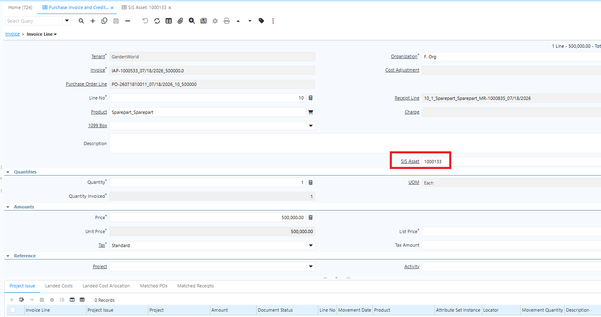
- Klik Save.
- Klik Complete pada dokumen Invoice.
Setelah Invoice di-complete, informasi pada Invoice Line otomatis tersalin ke dokumen SIS Asset pada tab Biaya Perawatan Aset. Data pada tab tersebut bersifat read-only dan berfungsi sebagai histori perawatan atau perbaikan aset.
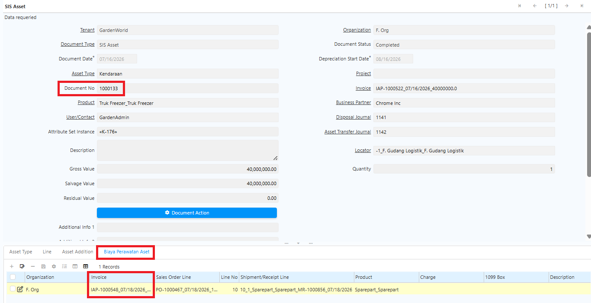
Catatan: Asset Maintenance hanya dapat diproses pada aset yang sudah aktif (status dokumen aset Complete). Aset yang masih berstatus Draft tidak akan muncul di Invoice Line.
Asset Split
Asset Split adalah fitur yang digunakan untuk memecah satu aset menjadi beberapa aset baru (target asset) dengan quantity yang lebih kecil, tanpa mengubah total nilai perolehan aset secara keseluruhan. Fitur ini umumnya digunakan ketika sebuah aset yang tercatat dengan quantity lebih dari satu perlu dipisahkan kepemilikan, lokasi, atau penanggung jawabnya menjadi beberapa unit aset tersendiri.
Langkah Implementasi Asset Split
- Buka menu SIS Asset Split.
- Input Cost Center.
- Input Warehouse penempatan aset.
- Input Locator untuk penyimpanan aset.
- Klik Save.
- Masuk ke tab Line.
- Pada field Asset From, input dokumen aset yang akan diproses.
- Masuk ke tab Target.
- Input Product yang akan diproses.
- Input Qty target asset.
- Input Amount dari target asset.
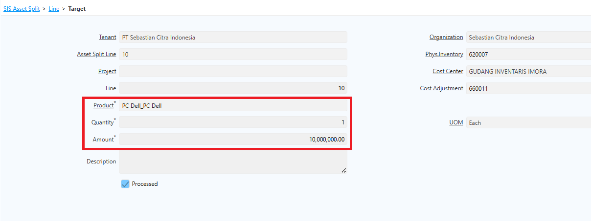
- Klik Save.
- Ulangi langkah 9–12 untuk target asset lainnya.
- Klik Complete pada dokumen SIS Asset Split.
Setelah dokumen Asset Split di-complete, sistem otomatis membentuk dokumen dan transaksi berikut:
Internal Use (Inventory Decrease/Increase)
Sistem akan menggenerate dokumen Internal Use untuk mengurangi quantity pada aset sumber (aset yang dipecah) sesuai jumlah yang dipindahkan ke aset target.
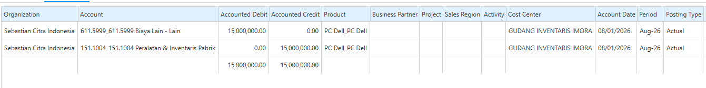
Jurnal Pembalik Akumulasi Penyusutan
Jika aset sumber sudah pernah disusutkan, sistem membuat jurnal untuk membalik (reverse) akumulasi penyusutan secara proporsional terhadap quantity yang dipecah. Hal ini memastikan nilai buku target asset dimulai secara akurat sesuai porsi nilai yang dialihkan.
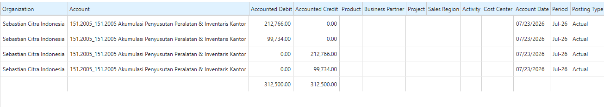
Pembentukan Target Asset
Sistem membentuk aset baru sejumlah quantity yang diinput pada dokumen Asset Split. Setiap target asset yang terbentuk memiliki:
- Dokumen Asset tersendiri.
- ASI (Attribute Set Instance) yang ter-generate otomatis, sehingga masing-masing target asset dapat dibedakan dan ditelusuri secara individual.
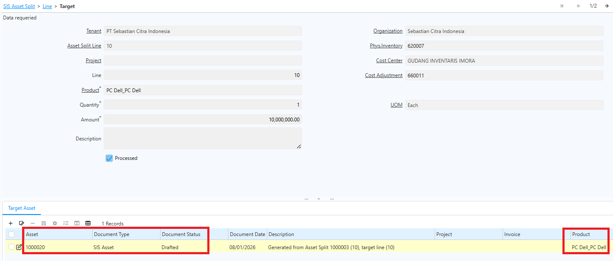
Cost Adjustment (CA) untuk Masing-Masing Target Asset
Sistem membuat dokumen Cost Adjustment untuk setiap target asset dengan nilai sesuai amount yang dialokasikan. Cost Adjustment ini mencatat nilai perolehan awal target asset sesuai porsi nilai yang dipecah dari aset sumber.
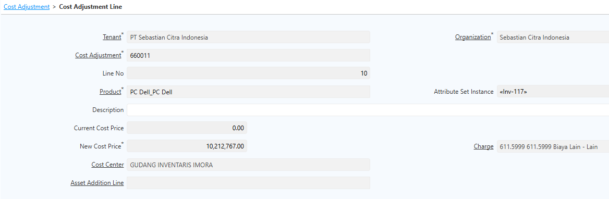
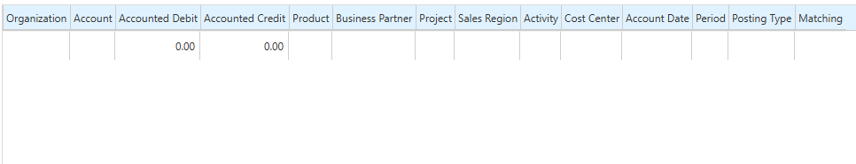
Physical Inventory untuk Masing-Masing Target Asset
Sistem membentuk dokumen Physical Inventory untuk setiap target asset dengan ketentuan berikut:
- Book Qty = 0 (target asset merupakan aset baru yang belum memiliki catatan quantity).
- Count Qty = 1 (mencerminkan quantity aktual target asset hasil split).
- Value = sesuai nilai yang tercatat pada Cost Adjustment target asset.
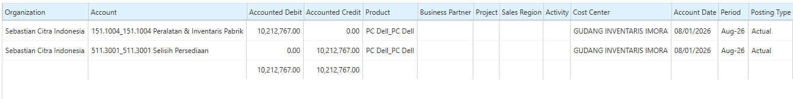
Dokumen Physical Inventory ini mencatat keberadaan fisik dan nilai target asset di sistem, selaras dengan nilai yang telah ditetapkan pada Cost Adjustment.
Dengan proses otomatis ini, user tidak perlu membuat dokumen-dokumen tersebut secara manual — seluruh dokumen turunan terbentuk otomatis saat Asset Split di-complete, sehingga konsistensi data quantity, nilai buku, dan pencatatan akuntansi aset terjaga.
Catatan:
- Total amount target asset harus sama dengan residual value aset asal. Penjumlahan seluruh amount yang dialokasikan ke masing-masing target asset harus sama persis dengan residual value (nilai buku) dari aset asal (asset from) pada saat dokumen Asset Split diproses. Hal ini bertujuan agar tidak terjadi selisih nilai antara aset sumber dengan total nilai aset hasil pemecahan.
- Aset asal (asset from) harus berada di warehouse dan locator tujuan. Sebelum dokumen Asset Split dapat diproses, aset yang akan dipecah wajib sudah berada pada warehouse dan locator yang sama dengan warehouse dan locator tujuan yang akan digunakan untuk target asset. Ketentuan ini diperlukan karena proses split menggunakan mekanisme Internal Use Inventory (decrease dan increase), sehingga lokasi aset sumber dan aset target harus konsisten agar pencatatan quantity dan lokasi persediaan tidak menimbulkan selisih.
Manajemen Penyusutan
Penyusutan asset adalah proses mengalokasikan biaya asset secara sistematis selama masa manfaatnya. Setiap periode, sistem mencatat beban penyusutan dan mengurangi nilai buku asset. Sebelum melakukan penyusutan, pastikan konfigurasi berikut telah selesai:
- Product Category — Gunakan costing method Average PO dan costing level Batch/Lot.

- Attribute Set — Pilih Lot Control dengan pengaturan berikut:
Mandatory Type: Always
Attribute Set Type: Material Management System
Exclude:
- C_OrderLine – Sales Order Line
- M_InOutLine – Shipment/Receipt Line
Un-check field Sales Transaction

- Master Data Asset Type — Tentukan klasifikasi asset, metode penyusutan, dan GL Document Type.
- Set Product — Atur Product Type ke Item.
- Attribute Set — Sesuaikan dengan kategori asset.
- Asset Type — Sesuaikan dengan kategori asset.
Proses Pengadaan Asset
Pengadaan asset dilakukan melalui tahapan berikut:
- Purchase order
- Material receipt
- Invoice
- Matching invoicee
Setelah proses penerimaan selesai, sistem otomatis membentuk data asset berdasarkan ASI (Attribute Set Instance). Data asset tersebut dapat diakses melalui menu SIS Asset.
Proses Manajemen Penyusutan Asset
Lakukan penyusutan asset melalui langkah-langkah berikut:
- Akses menu SIS Asset.

- Generate asset — Data awal akan berstatus Draft.
- Evaluasi asset — Lakukan evaluasi terhadap asset yang berstatus Draft.
- Konfirmasi asset — Validasi asset sebelum digunakan.
- Sistem menampilkan:
- Daftar asset berdasarkan ASI
- Proposal depresiasi sesuai masa manfaat asset
- Penyusutan berjalan sesuai konfigurasi Asset Type.
Jurnal penyusutan di-generate secara otomatis, berdasarkan permintaan user atau jadwal automation scheduler yang berjalan setiap bulan.
Mekanisme Penyusutan Asset
Penyusutan asset bekerja dengan ketentuan berikut:
- Dasar penyusutan menggunakan harga perolehan (harga beli).
- Penentuan batch/lot dilakukan saat penerimaan barang.
- Setiap penerimaan dicatat berdasarkan batch/lot dan mereferensikan dokumen pembelian terkait.
- Penyusutan mengikuti harga Purchase Order, sedangkan nilai disposal dapat disesuaikan dengan kebutuhan bisnis.
Manajemen Disposal Asset
Disposal adalah proses penghapusan asset dari catatan perusahaan secara permanen. Disposal dilakukan ketika asset sudah tidak layak pakai, dijual, dihibahkan, atau dihancurkan.
Disposal asset dapat dilakukan melalui dua mekanisme:
Sales order
- Buka menu Sales Order, pastikan Document Type menggunakan Standard Order.
- Pilih asset berdasarkan ASI yang sesuai.
- Proses Shipment, lalu buat Invoice Customer (AR).

Inventory Decrease/Increase (Internal Use)
- Buka menu Inventory Decrease/Increase.
- Pilih Document Type Internal Use Inventory.
- Masuk ke Internal Use Line.
- Pilih asset yang akan didisposal berdasarkan ASI.
- Tentukan Charge sebagai beban disposal
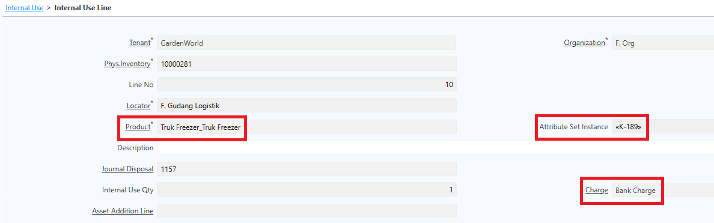
Setelah proses disposal melalui Internal Use selesai, sistem otomatis memperbarui status disposal pada data aset dan men-generate dokumen pendukung berikut:
Jurnal Disposal
Jurnal disposal aset bertujuan untuk menghapus nilai aset dan akumulasi penyusutannya dari pembukuan, serta mencatat laba atau rugi atas pelepasan aset tersebut.
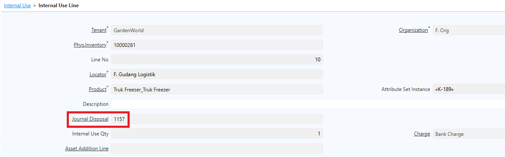
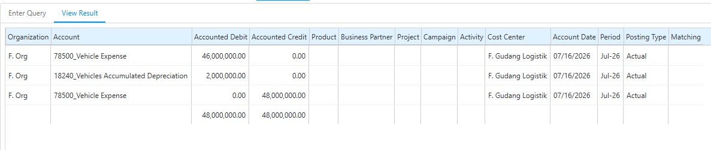
Pergerakan dan Pengelolaan asset
- Perpindahan asset antar lokasi memengaruhi pencatatan penyusutan
- Penyusutan dapat disesuaikan berdasarkan lokasi atau outlet tempat asset berada.
- Asset yang belum digunakan (misalnya masih di gudang) tidak langsung disusutkan. Penyusutan baru dimulai saat asset mulai digunakan di outlet.
Stock Opname Charging
Stock opname charging adalah proses perhitungan dan verifikasi fisik stock material charging — yaitu bahan atau komponen yang digunakan dalam proses produksi. Hasil perhitungan fisik kemudian disesuaikan dengan data yang ada di sistem.
Tipe Charging untuk Stock Opname
Di SCI, terdapat 4 tipe charging untuk stock opname:
Tipe 1 — Stock Opname Charge Induk Non UoM
- Sistem merangkum (summary) selisih quantity per category charge.
- Sub category charge membedakan harga di masing-masing sub category.
- Pastikan konfigurasi sub category charge sesuai ketentuan: harga tertinggi dalam category yang sama harus memiliki sequence terkecil.
- Set charge multiply rate pada artikel yang memiliki faktor pengali
Tipe 2 — Stock Opname Charge Induk dengan UoM
- Category charge mereferensikan UoM yang digunakan untuk konversi dalam kelompok kategori. UoM yang digunakan adalah UoM terbesar dalam kelompok tersebut.
- Artikel dengan Base UoM yang berbeda dari UoM referensi di category charge harus memiliki UoM Conversion ke UoM referensi tersebut.
Tipe 3 — Stock Opname Charge Asosiasi Berdasarkan Bill of Material (BoM)
- Category charge mereferensikan Bill of Material yang diasosiasikan ke masing-masing artikel dalam BoM tertentu untuk perhitungan charge.
- Konfigurasi sequence harus mengikuti urutan berikut: Raw Material → Barang Jual → Barang Kemas.
Tipe 4 — Stock Opname Charge Minus Mutlak Berdasarkan Kategori
- Category charge dibedakan menjadi dua: Dibebankan dan Tidak Dibebankan.
- Konfigurasi sequence harus mengikuti urutan berikut: Charge → Non Charge.
Tipe 5 — Stock Opname Charge Khusus Brand (PPG). Tipe ini adalah tipe charging khusus untuk Brand yang diterapkan untuk tim PPG. Mekanisme perhitungannya adalah sebagai berikut:
- Perhitungan 1 — Jumlahkan seluruh selisih Total Bruto (ICPL). Nilai bruto diambil dari ICPL.
- Perhitungan 2 — Kurangi hasil perhitungan 1 dengan Total Bruto tertinggi.
- Perhitungan 3 — Kalikan hasil perhitungan 2 dengan 50% untuk menentukan varian selisih.
- Perhitungan 4 — Jika hasil perhitungan 3 bernilai minus (negatif), tambahkan Total Netto tertinggi. Jika bernilai positif, penambahan Total Netto tertinggi tidak diperlukan.
- Nilai hilang barang diambil dari Total Netto tertinggi.
Konfigurasi API
Harga Netto Produk
Konfigurasi API ini bertujuan untuk mengambil data harga netto produk yang digunakan dalam stock opname, bersumber dari aplikasi Sky. Ikuti langkah berikut untuk melakukan konfigurasi API di System Configurator:
- Buka menu System Configurator
- Klik New
- Input nama configurator: SIS_INVENTORY_CHARGE5_URL
- Pada field Configured Value, input: https://36.94.102.63:5599
- Klik save

Setelah konfigurasi selesai, sistem akan menampilkan data harga netto produk melalui API di tab SIS Inventory Charge Log setiap kali stock opname charging dijalankan. Jika produk tidak memiliki harga netto, sistem otomatis menggunakan harga default sebesar 75% dari ICPL.
Toleransi Charge
Konfigurasi ini bertujuan untuk mengambil data quantity penjualan dari POS yang bersumber dari aplikasi di luar sistem. Data tersebut digunakan untuk perhitungan toleransi charge stock opname tipe 1–4 untuk tim SCI.
Ikuti langkah berikut untuk melakukan konfigurasi API di System Configurator:
- Buka menu System Configurator
- Klik New
- Input nama configurator: SIS_INVENTORY_EXT_URL
- Pada field Configured Value, input: http://36.95.119.12:5558

- Klik save
Karena data quantity penjualan bersumber dari POS di luar sistem, konfigurasi ini diperlukan agar sistem dapat mengambil dan memperhitungkan data tersebut dalam kalkulasi toleransi charge stock opname.
Konfigurasi Product untuk Stock Opname
Tidak semua product dilakukan stock opname — hanya product tertentu yang telah dipilah oleh perusahaan. Sebelum menjalankan stock opname, lakukan konfigurasi product beserta charge type-nya terlebih dahulu.
Perusahaan menggunakan 5 tipe charge. Sebelum mengkonfigurasi product charge stock opname, pastikan Charge Category dan Charge Sub Category sudah dikonfigurasi terlebih dahulu.
Konfigurasi Master Charge Category
- Buka menu SIS Charge Category
- Klik New
- Tentukan Charge Type sesuai kebutuhan
- Input nama Charge Category
- Tentukan UoM sesuai kebutuhan
- Klik save

Konfigurasi Master Charge Sub Category
Charge Sub Category digunakan untuk perhitungan charge stock opname Tipe 1. Ikuti langkah berikut:
- Buka menu SIS Charge Sub Category
- Klik New
- Tentukan Charge Category
- Input nama Charge Sub Category
- Klik save

Konfigurasi Charge Type pada Product
Setelah Charge Category dan Charge Sub Category selesai dikonfigurasi, lakukan konfigurasi charge type pada masing-masing product. Ikuti langkah berikut:
- Buka menu Product
- Isi field-field yang dibutuhkan
- Pada field Charge Type tentukan tipe sesuai kebijakan
- Pada field SIS Charge Category pilih kategory sesuai kebijakan
- Pada field SIS Charge Sub Category pilih sub kategori sesuai kebijakan
- Pada field Charge Multiply Rate tentukan nilai sesuai kebijakan
- Pada field Charge Tolerance tentukan nilai sesuai kebijakan
- Klik save

Product yang telah dikonfigurasi siap digunakan untuk charge stock opname sesuai kebutuhan operasional perusahaan.
Proses Stock Opname di Sistem
Ikuti langkah-langkah berikut untuk membuat dokumen stock opname:
- Buka menu Physical Inventory
- Klik New
- Input Warehouse yang akan diopname
- Input Movement Date — masukkan tanggal pelaksanaan opname

- Klik Save
- Masuk ke tab Inventory Count Line
- Klik New
- Input Produk Charging yang akan dihitung
- Input Locator — pilih lokasi penyimpanan produk
- Input Quantity Count — masukkan jumlah fisik hasil perhitungan aktual
 11. Sistem otomatis menampilkan Quantity Book
12. Ulangi langkah 7-11 untuk setiap produk
13. Klik Save
14. Jalankan SIS Generate Inventory Charge Amount — sistem menghitung dan menampilkan kalkulasi charge amount untuk seluruh produk.
15. Klik Complete
11. Sistem otomatis menampilkan Quantity Book
12. Ulangi langkah 7-11 untuk setiap produk
13. Klik Save
14. Jalankan SIS Generate Inventory Charge Amount — sistem menghitung dan menampilkan kalkulasi charge amount untuk seluruh produk.
15. Klik Complete
Setelah dokumen stock opname selesai dibuat, gunakan tab SIS Inventory Charge Log untuk melihat detail perhitungan charge amount per tipe. Ikuti langkah berikut:
- Buka menu Physical Inventory
- Masuk ke tab SIS Inventory Charge Log

- Pilih Log sequence pertama
- Sistem akan menampilkan perhitungan charge stock opname untuk masing-masing tipe
Sistem juga menampilkan harga netto untuk produk yang dilakukan stock opname. Harga netto produk bersumber dari aplikasi Sky dan dapat dilihat melalui tab SIS Inventory Charge Log di iDempiere. Ikuti langkah berikut:
- Buka menu Physical Inventory
- Masuk ke tab SIS Inventory Charge Log

- Pilih Log sequence kedua
- Sistem akan menampilkan harga netto untuk artikel yang dipilih
Jika produk tidak memiliki harga netto, sistem otomatis menggunakan harga default sebesar 75% dari ICPL.
Allowance Penerimaan (Material Receipt)
Allowance adalah batas toleransi maksimum penerimaan barang (dalam persentase) yang diizinkan melebihi quantity Purchase Order tanpa memerlukan justifikasi tambahan. Jika quantity yang diterima melampaui batas ini, sistem otomatis menandai transaksi untuk memerlukan persetujuan dari PIC yang berwenang sebelum dokumen dapat di-finalisasi.
Konfigurasi Allowance di Product
Allowance dikonfigurasi di level master produk. Saat produk tersebut dibeli melalui Purchase Order, allowance akan berlaku otomatis saat penerimaan barang (Material Receipt). Ikuti langkah berikut untuk mengkonfigurasi allowance di product:
- Buka menu Product.
- Buat produk baru.
- Tentukan Product Category.
- Pada field Allowance, tentukan batas toleransi maksimum untuk produk tersebut dalam satuan persen.

- Klik Save.
Implementasi Allowance
Skenario Qty dalam batas Allowance
- Buka menu Purchase Order.
- Input Business Partner.
- Input Warehouse untuk penempatan produk.
- Masuk ke tab PO Line.
- Pilih produk yang akan diproses.
- Input quantity produk.
- Klik Save. Saat disimpan, field Allowance di PO Line terisi otomatis sesuai konfigurasi di master produk.

- Klik Complete pada dokumen Purchase Order.
- Masuk ke tab Material Receipt, lalu masuk ke Receipt Line.
- Input quantity barang yang diterima (masih dalam batas allowance).
- Klik Save.
- Klik Complete pada dokumen Material Receipt.
Skenario Qty Melebihi Allowance
- Buka menu Purchase Order.
- Input Business Partner.
- Input Warehouse untuk penempatan produk.
- Masuk ke tab PO Line.
- Pilih produk yang akan diproses.
- Input quantity produk.
- Klik Save. Saat disimpan, field Allowance di PO Line terisi otomatis sesuai konfigurasi di master produk.
- Klik Complete pada dokumen Purchase Order.
- Masuk ke tab Material Receipt, lalu masuk ke Receipt Line.
- Input quantity barang yang diterima (melebihi allowance).
- Klik Save — sistem otomatis mencentang field Need Approval karena quantity melebihi batas allowance.

- PIC yang berwenang harus mengklik menu SIS Update Qty MR Line untuk melakukan approval.
- Klik Complete pada dokumen Material Receipt.
Catatan: Jika PIC yang berwenang belum melakukan approval, dokumen Material Receipt tidak dapat di-complete dan tidak dapat diproses lebih lanjut.
Contract Management
Contract Management digunakan untuk dua keperluan utama:
- Mencatat jadwal penerbitan AP Invoice untuk biaya yang sudah pasti dalam periode tertentu, sesuai dokumen kontrak dengan pihak ketiga.
- Membuat jadwal amortisasi otomatis untuk biaya yang bersifat recurring selama periode tertentu.
Sebelum memulai transaksi Contract Management, siapkan master data berikut:
- Cost Center (outlet/showroom/plant)
- Project (opsional)
Ikuti langkah berikut untuk membuat master data Cost Center:
- Buka menu Cost Center
- Input Search Key dan Name sesuai kebutuhan operasional

- Klik save
Konfigurasi Product Biaya
Sebelum menggunakan Contract Management, buat master data product untuk komponen biaya pada kontrak. Ikuti langkah berikut:
- Buka menu Product
- Klik new
- Input nama product
- Input Product Category
- Input Product Type — pilih Expense karena product berfungsi sebagai biaya kontrak
- Pada field Doc Type Invoice AP Contract Management, buat Doc Type AP Invoice per masing-masing komponen kontrak.
- Set Charge AR Receipt Contract Management jika product expense atas kontrak dapat diklaim kembali.

- Masuk ke tab Accounting, lakukan konfigurasi akun berikut:
- Product Expense → di-set sebagai Akun Kredit untuk GL Journal Amortization.
- Amortization Expense → di-set sebagai Akun Debit untuk GL Jurnal Amortisasi.

Langkah Akses Contract Management di Sistem
Ikuti langkah berikut untuk mengakses Contract Management di iDempiere:
- Buka menu SIS Contract Management
- Isi field pada Header:
- Period Type — Pilih Year (Tahun) atau Month (Bulan).
- Cost Center — Isi sesuai outlet atau showroom.
- Tax — Isi pajak yang akan digunakan.
- Business Partner — Isi rekanan yang bekerja sama dalam kontrak.
- Project — Opsional, isi jika terkait pekerjaan pembangunan outlet atau showroom.
- Informasi tambahan — Isi Luas Sewa, Harga per M2, Grace Periode, dan Harga per Tahun.
- Period Contract — Tentukan periode selama masa kontrak
- Periode Sewa Awal — Tentukan tanggal kontrak awal
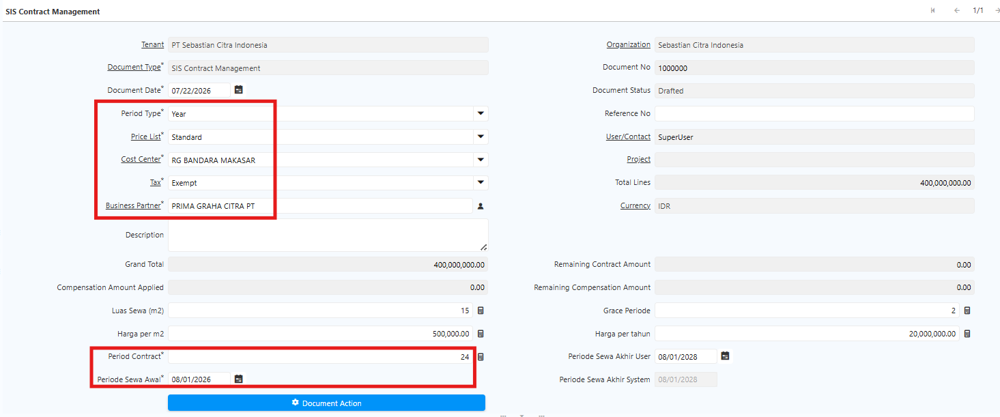
- Masuk ke tab Contract Management Line.
- Klik New, kemudian isi field berikut:
- Product — Isi dengan produk biaya yang akan diproses.
- Total Amount — Isi nilai kontrak sebelum pajak.
- Percentage — Tentukan persentase dari total amount (jika ada)
- UnAmortized — Centang jika biaya merupakan deposit yang dapat diklaim
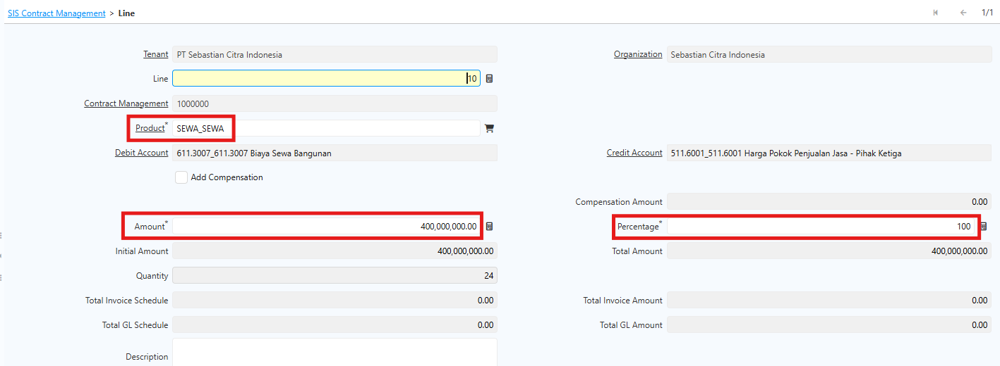
- Ulangi langkah 4 untuk komponen biaya lainnya
- Jalankan Generate Schedule untuk membuat jadwal AP Invoice dan GL Amortization. Secara default, sistem mengikuti amount dan periode kontrak. Date schedule dan amount dapat diubah, namun total amount di AP Schedule dan GL Amortization harus tetap sama.
- Hasil generate akan muncul di tab AP Invoice Schedule dan GL Amortization
- Jika terdapat perubahan pada schedule, amount, atau periode, gunakan tombol aksi yang tersedia di Contract Management Line. Berikut fungsi masing-masing tombol:
- Generate schedule — Meng-generate schedule untuk penerbitan AP Invoice dan GL Amortization
- Update Amount Schedule Invoice — Memperbarui nominal jika terdapat perubahan.
- Update Date Schedule Invoice — Memperbarui tanggal; jika ada kompensasi, tanggal dapat dimajukan atau dimundurkan
- Decrease Period CM Invoice — Mengurangi periode; nominal akan ter-kalkulasi otomatis sesuai periode baru.
- Update Amount Schedule Amortisasi — Memperbarui nominal amortisasi jika terdapat perubahan.
- Update Date Schedule Amortisasi — Memperbarui tanggal amortisasi
- SIS Update Total Amount Schedule CM — Memperbarui total amount schedule jika terdapat perubahan nominal di pertengahan periode; jika amount di AP Schedule Invoice diperbarui, amount di GL Amortisasi akan ikut disesuaikan secara otomatis.
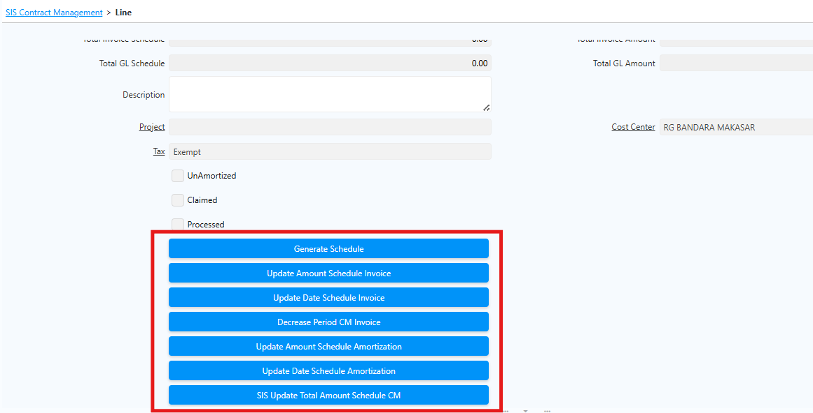
- Setelah schedule AP Invoice dan GL Amortization sudah sesuai, klik Complete pada dokumen Contract Management.
- Sistem otomatis men-generate AP Invoice dan GL Amortization sesuai date schedule yang telah dikonfigurasi.
Langkah Proses Kompensasi
Jika terdapat kompensasi, proses kompensasi dapat dilakukan atas kontrak lain melalui field Add Compensation. Ikuti langkah berikut:
- Buka menu SIS Contract Management
- Isi field pada Header
- Masuk ke tab Contract Management Line.
- Klik New kemudian Isi field berikut:
- Product — Isi dengan produk biaya yang akan diproses.
- Centang field Add Compensation.
- Pada field Contract Management Compensation, pilih dokumen kontrak yang akan dikompensasi.

- Klik Generate Schedule
- Klik complete dokumen contract management
- Masuk ke tab AP Invoice Schedule, lalu jalankan Generate Invoice From Schedule.

- Sistem membentuk 2 Invoice Line pada invoice: invoice amount awal dan invoice kompensasi yang mengurangi total amount invoice.

- Klik complete pada dokumen AP Invoice
Langkah Klaim Deposit
Jika terdapat biaya deposit yang dapat diklaim, pastikan invoice atas biaya deposit tersebut sudah ter-generate sebelum melakukan klaim. Ikuti langkah berikut:
- Setelah dokumen Contract Management di-complete, tombol Claim CM to AR Receipt akan muncul pada biaya deposit.
- Klik Claim CM to AR Receipt
- Isi field yang tersedia:
- Bank account
- Document type
- Document action
- Transaction date
- Klik ok
Sistem otomatis membentuk Payment AR Receipt atas klaim yang di-generate dan field Claimed akan tercentang secara otomatis.
Report Contract Management
Report Contract Management digunakan untuk menampilkan daftar dokumen Contract Management berdasarkan parameter pencarian yang dipilih. Gunakan report ini untuk memantau informasi kontrak yang telah dibuat tanpa perlu membuka setiap dokumen satu per satu.
Langkah Akses Report Contract Management
- Buka menu SIS Report Contract Management.
- Input field berikut sesuai kebutuhan:
- Business Partner
- Document Status
- Klik OK.
Report menampilkan seluruh informasi yang terdapat pada Header Contract Management.
Report Contract Management Detail
Report Contract Management Detail digunakan untuk menampilkan rincian setiap item pada dokumen Contract Management. Berbeda dengan Report Contract Management yang hanya menampilkan informasi header, report ini menampilkan seluruh data pada Contract Management Line.
Langkah Akses Report Contract Management Detail
- Buka menu SIS Report Contract Management Detail.
- Input field berikut sesuai kebutuhan:
- Contract Management
- Cost Center
- Schedule Date
- Klik OK.
Report menampilkan seluruh informasi yang terdapat pada Contract Management Line.
Catatan: Seluruh parameter bersifat opsional. Jika parameter tidak diisi, sistem menampilkan seluruh data tanpa filter, kecuali parameter yang dikonfigurasi sebagai wajib pada implementasi.
Project Management
Fitur Project Management digunakan untuk mencatat seluruh aktivitas dan penggunaan barang yang berlangsung dalam suatu project. Sebelum memulai transaksi, siapkan master data berikut:
- Cost Center
- Project
- Product/Artikel Project
- Charge Project (CIP) — Sebagai penampung atas penggunaan persediaan dan biaya tambahan.
Konfigurasi Sistem
Sebelum memulai transaksi project, lakukan konfigurasi sistem terlebih dahulu dengan menambahkan SIS_CHARGE_ASSET_ADDITION_ID dengan Configured Value Charge_ID. Konfigurasi ini digunakan sebagai charge project untuk penambahan nilai project apabila tidak terdapat Credit Note atas pemakaian persediaan dan biaya tambahan.
Konfigurasi Artikel Project
- Buka menu Product.
- Klik New.
- Input Search Key dan Name produk.
- Input UoM Base untuk produk tersebut.
- Tentukan Product Category sesuai konfigurasi.
- Tentukan Attribute Set sesuai konfigurasi.
- Tentukan Asset Type sesuai konfigurasi.
- Pada field Renovation/Repair Asset, pilih No jika merupakan aset baru, atau Yes jika merupakan renovasi atas aset yang sudah ada.
- Field Change Project Price digunakan khusus untuk pekerjaan sipil yang menjadi aset.
- Klik Save.
Field “Change Project Price”
Field Change Project Price digunakan khusus untuk pekerjaan sipil yang menjadi aset. Jika field ini dicentang, field Charge Cost Adjustment akan muncul secara otomatis — isi field tersebut untuk menentukan charge yang digunakan saat Cost Adjustment ter-create.
Sebelum membuat Purchase Order untuk artikel pekerjaan sipil, lakukan konfigurasi Document Type AP Invoice yang akan digunakan terlebih dahulu. Skenario fitur ini ditujukan untuk kondisi di mana amount pada PO dan Invoice berbeda — misalnya akibat realisasi project yang tidak sesuai atau kendala dari vendor. Fitur Change Project Price hadir sebagai solusi untuk menangani kondisi tersebut.
Implementasi Pada Purchase Order
- Buka menu Purchase Order.
- Tentukan Business Partner yang akan diproses.
- Pada field Project, tentukan project yang sedang dikerjakan.
- Pada field Cost Center, tentukan cost center atas project tersebut.
- Masuk ke tab PO Line.
- Tentukan produk yang akan diproses.
- Tentukan quantity produk.
- Klik Save.
- Klik Complete pada dokumen Purchase Order.
- Masuk ke tab Material Receipt, lalu klik Complete.
- Masuk ke Receipt Line, kemudian masuk ke tab Invoice.
- Masuk ke tab Invoice Line.

- Input Amount Price.
- Klik Complete pada dokumen Invoice.
Setelah dokumen Invoice di-complete, sistem otomatis membuat dokumen Cost Adjustment untuk target Product dan ASI yang diterima. Nilai Cost Adjustment mengikuti nilai invoice per satu quantity. Selain itu, cost pada product dengan ASI yang terbentuk saat Material Receipt diperbarui sesuai harga Invoice. Jurnal Cost Adjustment ini berfungsi untuk mengkoreksi jurnal Matched Invoice.

Konfigurasi Charge
Charge digunakan untuk menentukan charge kompensasi pada project. Ikuti langkah berikut untuk membuat master charge project:
- Buka menu Charge.
- Klik New.
- Isi field Name sesuai kebutuhan.
- Pada field Tax Category, tentukan sesuai kebijakan perusahaan.
- Masuk ke tab Accounting.
- Set Charge Account menggunakan akun Project Asset.
- Klik Save.
Langkah Pembuatan Project
- Buka menu Project
- Isi field berikut pada header:
- Business Partner
- Charge Compensation

- Klik save
Setiap project memiliki komponen-komponen pendukung, seperti jasa kontraktor, kabel listrik, dan sebagainya. Komponen-komponen tersebut dicatat melalui Issue to Project. Fitur ini digunakan untuk mencatat penggunaan atau pengiriman barang ke project yang sedang dikerjakan.
Langkah Purchase Order
Dalam project terdapat dua pendekatan Purchase Order:
- PO Besar — PO kepada kontraktor yang tercatat sebagai Business Partner Vendor di project.
- PO Kecil — PO kepada supplier di luar project untuk kebutuhan persediaan atau biaya tambahan.
Seluruh PO akan masuk ke nilai project melalui Issue to Project yang terfilter berdasarkan project terkait. Ikuti langkah berikut untuk membuat PO Project:
- Buka menu Purchase Order.
- Tentukan Business Partner yang akan diproses.
- Pada field Project, tentukan project yang sedang dikerjakan.
- Pada field Cost Center, tentukan cost center atas project tersebut.
- Masuk ke tab PO Line.
- Tentukan produk yang akan diproses.
- Tentukan quantity produk.
- Klik Save.
- Klik Complete pada dokumen Purchase Order.
- Masuk ke tab Material Receipt, lalu klik Complete.
- Masuk ke Receipt Line, kemudian masuk ke tab Invoice.
- Klik Complete pada dokumen Invoice.
Setelah Invoice di-complete, sistem otomatis membuat aset yang akan muncul di menu SIS Asset dan tab Asset pada menu Project. Selain itu, PO, MR, dan Invoice yang telah diproses juga otomatis muncul di tab-tab terkait pada menu Project, sehingga user dapat memantau seluruh transaksi per project.
Langkah Pembuatan Issue to Project
- Buka menu Issue to Project
- Isi field berikut:
- Project — Nama project yang sedang dikerjakan.
- Order — Nomor dokumen Purchase Order atas produk.

- Klik ok
- Sistem menampilkan notifikasi Created — issue atas project berhasil dibuat.
Seluruh issue yang telah dibuat akan muncul di tab Issue pada menu Project di master project terkait. Gunakan fitur Issue to Project untuk mencatat penggunaan bahan secara internal dalam project tersebut.
Action Project
Setelah suatu project dinyatakan selesai dan seluruh transaksi terkait telah dipastikan selesai diproses, project dapat dilakukan proses Complete.
Ketika project telah berstatus Complete, project tersebut tidak akan dapat digunakan kembali pada transaksi berikut:
- Purchase Order (PO)
- Material Receipt (MR)
- Invoice
- Payment
- Issue to Project
- Inventory Decrease/Increase
- Physical Inventory
- Cost Adjustment
Sebelum melakukan proses Complete Project, pastikan tidak terdapat dokumen transaksi yang masih berstatus outstanding atau belum selesai diproses.
Apabila masih terdapat dokumen outstanding dan project tetap dilakukan proses complete, sistem akan melakukan validasi dan memberikan notifikasi bahwa masih terdapat dokumen yang belum diselesaikan.
Selain itu, apabila masih terdapat dokumen outstanding yang berkaitan dengan project dan asset telah terbentuk, terdapat risiko nilai asset yang terbentuk belum mencerminkan seluruh biaya yang seharusnya dialokasikan. Hal ini dapat menyebabkan nilai asset mengalami kurang pengakuan biaya.
Oleh karena itu, sebelum melakukan proses Complete Invoice PO Besar yang berkaitan dengan project, disarankan untuk melakukan pengecekan terlebih dahulu melalui proses Complete Project. Setelah seluruh transaksi project dipastikan selesai, lakukan proses Complete Invoice agar seluruh biaya dapat tercatat dan teralokasi dengan benar ke dalam project.
Jenis-Jenis Project
Terdapat dua pendekatan project di perusahaan:
- Project dengan Credit Note
- Project tanpa Credit Note
Ketentuan ini berlaku untuk semua jenis project — UCIT, renovasi, cold room, dan lainnya — dengan perlakuan yang sama. Yang membedakan antara project UCIT dan renovasi adalah proses pembentukan aset dan jurnalnya.
Project Renovasi (Perbaikan) Asset tanpa Credit Note
Untuk project renovasi, buat artikel khusus renovasi dengan mengatur field Renovation/Repair Asset di master produk menjadi Yes. Pengaturan ini memungkinkan user untuk merelasikan artikel tersebut ke aset yang diperbaiki saat proses MR/BPB, sehingga nilai renovasi dapat ditransfer ke aset existing dan menambah nilainya.
Ikuti langkah berikut untuk memproses PO hingga Invoice untuk artikel renovasi:
- Buat Purchase Order seperti biasa.
- Masuk ke tab Material Receipt, lalu masuk ke Receipt Line.
- Pada field Renovation/Repair Asset, tentukan aset yang akan direnovasi.

- Klik Save.
- Klik Complete pada dokumen Material Receipt.
- Masuk ke tab Invoice, lalu klik Complete.
Di latar belakang, sistem menjalankan proses Asset Transfer ke aset tujuan. Residual Value aset existing bertambah sesuai nilai renovasi, dan sistem otomatis mengkalkulasi ulang nilai depresiasi.
Project Renovasi (Perbaikan) Asset dengan Credit Note
Project dengan Credit Note hanya dapat dilakukan jika seluruh biaya atau persediaan yang dipakai sudah di-Issue to Project. Sistem otomatis mengkalkulasi akumulasi Issue to Project dan membentuk Credit Note, sehingga tagihan project berkurang sesuai akumulasi tersebut.
Ikuti langkah berikut untuk memproses PO hingga Invoice untuk artikel renovasi dengan Credit Note:
- Buat Purchase Order seperti biasa.
- Masuk ke tab Material Receipt, lalu masuk ke Receipt Line.
- Pada field Renovation/Repair Asset, tentukan aset yang akan direnovasi.
- Klik Save.
- Klik Complete pada dokumen Material Receipt.
- Masuk ke tab Invoice.
- Klik tombol Generate Credit Note from Project Issue.

- Klik Complete pada dokumen Invoice.
Saat Generate Credit Note from Project Issue dijalankan, sistem otomatis membentuk Invoice Line di project dengan CIP untuk membalik Issue to Project dengan nilai minus. Dengan Credit Note, nilai aset tidak bertambah, namun tagihan atas project berkurang senilai CIP.
Scheduler Posting Matched Invoice
Proses auto Invoice Vendor yang di lakukan saat melakukan proses complete dokumen Material Receipt/BPB, saat ini jurnal yang terkait dengan Matched Invoices menampilkan informasi Journal Error. Untuk menyelesaikan issue tersebut, saat ini disediakan suatu mekanisme untuk melakukan re-posting jurnal secara otomatis dan tanpa intervensi user/pengguna.
Ikuti langkah langkah dibawah ini untuk melakukan konfigurasi scheduling re-posting jurnal matched invoice:
- Buka menu Scheduler.
- Klik New.
- Input nama: "SIS Auto Reposting Matched Invoice”.
- Pada field Process, pilih "SIS Auto Reposting Match Invoice_SIS Auto Reposting Match Invoice”.
- Pada field Schedule, pilih "1 Minutes SIS”.
- Pada field Supervisor, input sesuai kebutuhan.
- Pada field Days to Keep Log, pilih "1” — nilai ini menentukan jumlah hari log yang akan disimpan.
- Klik Save.
- Klik Not Schedule.

Konfigurasi scheduler ini diperlukan karena jurnal matched invoice dapat mengalami posting error akibat pengaturan auto invoice di document type. Dengan scheduler ini, sistem akan otomatis melakukan reposting jurnal sesuai jadwal yang dikonfigurasi. Meskipun posting error muncul, sistem tetap mencatat jurnal matched invoice di latar belakang.
Tab Log akan diperbarui setiap satu menit sesuai konfigurasi. Sistem secara berkala menjalankan proses reposting matched invoice di latar belakang. Setelah jurnal berhasil ter-posting, log tetap berjalan selama periode yang ditentukan di Days to Keep Log.
Import Data
Import Data adalah proses memasukkan data dari sumber eksternal seperti file CSV atau Excel ke dalam sistem iDempiere. Tujuan utama import data meliputi:
- Migrasi data — memindahkan data dari sistem lama ke iDempiere
- Input massal — memasukkan ratusan/ribuan record sekaligus tanpa input manual satu per satu
- Efisiensi — menghemat waktu dibandingkan proses entry manual
FileZilla
FileZilla adalah aplikasi transfer file open source yang digunakan untuk memindahkan file antara komputer lokal dan server melalui jaringan internet atau jaringan lokal. Dalam konteks iDempiere, FileZilla digunakan untuk mengupload file Excel atau CSV dari PC ke folder di server iDempiere.
Langkah Instalasi & Koneksi FileZilla:
Langkah 1: Install FileZilla
- Download dari https://filezilla-project.org/
- Install Filezilla dan buka aplikasi
Langkah 2: Menghubungkan ke server FTP
- Klik menu Manajemen Situs
- Klik New Site dan beri nama contoh “Prima-Dev”
- Input konfigurasi koneksi sebagai berikut:
- Protocol : SFTP – SSH File Transfer Protocol
- Host : 76.13.18.16
- Port : (sesuai kebijakan)
- Logon : Normal
- User : (sesuai kebijakan)
- Password : (sesuai kebijakan)

- Klik Connect untuk menghubungkan ke server.
Import Data MT940
MT940 adalah format standar SWIFT (Society for Worldwide Interbank Financial Telecommunication) untuk rekening koran elektronik (electronic bank statement). File MT940 memuat informasi transaksi perbankan — mencakup saldo awal, daftar debit/kredit, dan saldo akhir — yang dikirimkan bank kepada nasabah korporat. Di iDempiere, MT940 digunakan dalam modul Bank Statement.
Format MT940 umumnya menggunakan encoding UTF-8. Namun, sistem iDempiere saat ini juga mendukung format MT940 dengan encoding ISO-8859-1. Berikut contoh format file yang digunakan untuk import data Bank Statement.

Langkah Import File MT940:
Siapkan file MT940 dari bank. File MT940 menggunakan format TXT.
Konfigurasi Bank Account di iDempiere:
- Masuk ke Bank/Cash → Account → Account No

Account Number - Pastikan nomor rekening cocok dengan field :25: di file MT940
- Set Currency sesuai (IDR untuk rupiah)
Import melalui FileZilla
- Navigasi ke /home/dev-idempiere/MT940 → Import Bank Statement
- Pilih file MT940 yang akan diimport

- Jika import berhasil, file otomatis berpindah ke folder done

- Dokumen Bank Statement akan menampilkan bank tersebut sebagai pilihan pada field Bank Account.

Import Data PO Kecil
Sebelum melakukan import, pastikan nama file sesuai format yang ditentukan, yaitu: organisasi, value product/search key pada product, dan tahun bulan transaksi. Berikut contoh format file yang digunakan untuk import data PO Kecil.

Langkah Import File PO Kecil:
- Siapkan file PO Kecil dalam format csv
- Import melalui FileZilla
- Navigasi ke /home/dev-idempiere/po_import → Import PO Kecil
- Pilih file PO Kecil yang akan diimport

- Jika import berhasil, file otomatis berpindah ke folder done

- Sistem iDempiere akan membuat dokumen PO dengan status Draft atau In Progress, yang selanjutnya dapat di-confirm sesuai kebutuhan operasional.

Jika file PO Kecil yang diimport tidak sesuai format, sistem tidak akan memproses file tersebut ke iDempiere. Contoh ketidaksesuaian format yang umum terjadi antara lain penggunaan delimiter ; atau penggunaan Product ID pada nama file yang seharusnya menggunakan Product Value.
Saat import gagal, file tidak berpindah ke folder done. Sistem otomatis membuat folder error pada direktori PO Import, yang berisi file txt dengan informasi detail penyebab kegagalan import.

Jika file pertama belum diperbaiki dan file kedua yang diimport juga tidak sesuai format, sistem menampilkan pesan error yang sama. File akan tetap berada di folder PO Import dan tidak akan berpindah hingga kesalahan pada file diperbaiki.
Tax
Sistem iDempiere mendukung konfigurasi Pajak Pertambahan Nilai (PPN) sebesar 11% dengan dua skenario sesuai kebutuhan masing-masing tim:
- Tim SCI — PPN 11% yang bersifat Non Creditable
- Tim PPG — PPN 11% yang bersifat Regular
Masing-masing skenario memiliki konfigurasi akun dan dampak pelaporan yang berbeda.
Tax tim SCI
Ikuti langkah berikut untuk mengkonfigurasi tax rate tim SCI:
- Buka menu Tax Rate
- Klik new
- Isi field berikut:
- Name
- Tax Category
- Valid from
- Centang field Tax Not Credited
- Tax Not Credited Rate

Konfigurasi Tax - Masuk ke tab Accounting
- Pada field Tax Expense dan Tax Credit, tentukan akun sesuai kebijakan tim Accounting.
- Klik save
Tax tim PPG
Ikuti langkah berikut untuk mengkonfigurasi tax rate tim PPG:
- Buka menu Tax Rate
- Klik new
- Isi field berikut:
- Name
- Tax Category
- Valid from
- Input Rate tax sesuai kebutuhan

- Masuk ke tab Accounting
- Pada field Tax Expense dan Tax Credit, tentukan akun sesuai kebijakan tim Accounting.
- Klik save
Implementasi Tax di Purchase Order
Ikuti langkah berikut untuk menerapkan tax pada transaksi Purchase Order:
- Buka menu Purchase Order
- Input Business Partner
- Input warehouse untuk penempatan produk
- Tentukan tax yang akan digunakan

- Masuk ke tab PO Line
- Pilih product yang akan diproses
- Input qty product
- Klik save
- Klik complete dokumen
Berikut report Purchase Order untuk masing-masing skenario PPN:
- Report Tim PPG

- Report Tim SCI

Attribute Set Instance
Attribute Set
Attribute Set adalah fitur yang memungkinkan pencatatan atribut tambahan pada produk di level lot, serial number, atau batch. Fitur ini sangat berguna untuk produk yang memerlukan pelacakan kualitas, tanggal kedaluwarsa, atau identifikasi individual.
Komponen Attribute Set
- Lot — Pengelompokan produk dalam satu batch produksi atau pengiriman. Produk dengan lot yang sama dianggap memiliki karakteristik yang sama.memiliki karakteristik yang sama.
- Lot Control — Format dan urutan penomoran lot yang dibuat sistem secara konsisten. Tanpa Lot Control, operator harus mengetik nomor lot secara manual setiap kali menerima barang — rentan typo, tidak seragam, dan sulit dianalisis.
- Guarantee Date — Tanggal sampai kapan produk dijamin kualitasnya (tanggal kedaluwarsa/best before). Atribut ini paling kritis untuk produk pangan, farmasi, dan bahan kimia.
Fungsi Guarantee Date
Guarantee Date digunakan untuk:
- Mencatat tanggal kedaluwarsa produk saat penerimaan barang.
- Menjadi dasar perhitungan otomatis melalui Guarantee Days yang dikonfigurasi di level Product.
- Menjadi basis peringatan jika stok mendekati tanggal kedaluwarsa.
Implementasi Attribute Set
Konfigurasi Master Data Attribute Set
- Buka menu Attribute Set
- Centang field Lot
- Centang field Guarantee Date
- Centang field Instance Attribute
- Centang field Mandatory Guarantee Date
- Pada field Mandatory Type, pilih Always Mandatory
- Pada field Attribute Set Type, pilih Material Management System

- Masuk ke tab Exclude, input data berikut:
- C_OrderLine – Sales Order Line
- M_InOutLine – Shipment/Receipt Line
- M_MovementLine_Move Line
- Un-check field Sales Transaction

Exclude - Klik Save
Setup Attribute Set Instance di Produk
- Buka Menu Product
- Input field-field sesuai kebutuhan
- Pada field Attribute Set, pilih ASI yang konfigurasi
- Klik Save
Purchase Order & Penerimaan Barang
- Buka menu Purchase Order
- Input field-field mandatory
- Masuk ke tab PO Line, input produk dan quantity produk yang akan diproses
- Klik Complete
- Masuk ke tab Material Receipt, lalu masuk ke Receipt Line
- Pada tab Attributes, buat Attribute Set Instance (ASI) dan isi Guarantee Date sesuai konfigurasi.

- Klik save
- Klik complete dokumen material receipt
Pada report Material Receipt, sistem menampilkan expired date yang merupakan Guarantee Date untuk masing-masing produk dan ASI.
Jika user perlu melakukan breakdown quantity pada attribute set lines, gunakan fitur Generate ASI untuk membagi quantity sesuai kebutuhan. Quantity hasil generate masih dapat diedit dan disesuaikan dengan quantity aktual penerimaan barang. Ikuti langkah berikut untuk melakukan generate Attribute Set Instance:
- Masuk ke tab Material Receipt, lalu masuk ke Receipt Line.
- Klik tombol setting (⚙), kemudian klik SIS Generate Distribute Attribute.

- Input total line dari ASI yang dibutuhkan.

- Klik ok
- Sistem otomatis membentuk line ASI sesuai konfigurasi yang diinput.

Purchase Order
Purchase Order adalah dokumen yang digunakan untuk mencatat dan mengelola proses pemesanan barang atau jasa kepada supplier. Dokumen ini memuat informasi mengenai supplier, produk yang dipesan, jumlah, harga, tanggal pemesanan, metode pembayaran, dan informasi pendukung lainnya.
Di iDempiere, Purchase Order berfungsi sebagai dasar proses pengadaan barang — mulai dari pembuatan pesanan hingga penerimaan barang dan penagihan (Invoice). Dengan Purchase Order, perusahaan memastikan seluruh transaksi pembelian terdokumentasi dengan baik dan sesuai proses bisnis yang telah ditetapkan.
Alur Proses Purchase Order
- Buka menu Purchase Order
- Input Business Partner
- Input warehouse untuk penempatan produk
- Masuk ke tab PO Line
- Pilih product yang akan diproses
- Input quantity product
- Klik save
- Klik complete pada dokumen
Pengelolaan Purchase Order
Perubahan Business Partner pada Purchase Order
Apabila terjadi kesalahan pemilihan Business Partner (Supplier), perubahan Business Partner tidak dilakukan secara langsung pada dokumen Purchase Order, melainkan melalui menu SIS Change BP PO. Ikuti langkah berikut:
- Pastikan dokumen PO masih berstatus Draft.
- Pilih dokumen yang akan dilakukan perubahan
- Klik ikon Setting (⚙), kemudian pilih SIS Change BP PO.

- Input Business Partner baru yang akan menggantikan Business Partner sebelumnya.

- Klik ok

Sistem otomatis memperbarui informasi Business Partner pada dokumen Purchase Order.
Catatan: Perubahan Business Partner hanya dapat dilakukan pada Purchase Order yang masih berstatus Draft.
Perubahan Warehouse pada Purchase Order
Jika terdapat perubahan tujuan gudang pada Purchase Order, lakukan perubahan melalui menu SIS Change Warehouse Order. Ikuti langkah berikut:
- Buka menu Purchase Order
- Cari dan pilih dokumen PO yang akan diubah warehousenya.
- Klik ikon Setting (⚙), kemudian pilih SIS Change Warehouse Order

- Pilih Warehouse baru sebagai tujuan penerimaan barang.

- Klik ok
Sistem otomatis mencatat warehouse baru di tab Listing PO Warehouse pada dokumen PO. Tab ini berfungsi sebagai riwayat perubahan warehouse sehingga setiap perubahan dapat terlacak dengan baik.

Catatan: Perubahan Warehouse hanya dapat dilakukan pada Purchase Order yang masih berstatus Complete.
Menutup Purchase Order
Purchase Order berstatus Complete dapat ditutup (Close) jika proses pembelian telah selesai atau tidak ada transaksi lanjutan. Lakukan penutupan melalui menu SIS Close Document PO. Ikuti langkah berikut:
- Buka menu SIS Close Document PO
- Input Date Order From dan To
- Input Document Type yang akan diproses
- Input Business Partner yang akan diproses

- Klik ok

Setelah berstatus Closed, dokumen tidak dapat digunakan untuk transaksi lanjutan dan dinyatakan selesai sesuai proses bisnis yang berlaku.
Catatan: Proses Close hanya dapat dilakukan pada Purchase Order yang berstatus Complete.
Menghapus Purchase Order
Purchase Order dapat dihapus jika dokumen tidak lagi diperlukan, misalnya karena:
- Terjadi kesalahan input data.
- Purchase Order dibuat secara tidak sengaja (duplicate).
- Transaksi dibatalkan sebelum diproses lebih lanjut.
- Alasan operasional lainnya sesuai kebijakan perusahaan.
Lakukan penghapusan melalui menu SIS Delete Document PO. Ikuti langkah berikut:
- Buka menu SIS Delete Document PO
- Input Date Order From dan To
- Input Document Type yang akan diproses
- Input Business Partner yang akan diproses

- Klik ok

Catatan: Hanya Purchase Order berstatus Draft yang dapat dihapus melalui menu ini.
Product dan Category Access
Product Category Access membatasi produk yang dapat diproses dalam suatu transaksi berdasarkan kategori produk yang telah dikonfigurasi di level Product Category. Jika kategori produk dikonfigurasi pada document type tertentu, hanya produk dalam kategori tersebut yang dapat diproses — produk di luar kategori tidak akan bisa digunakan.
Product Access bekerja dengan prinsip yang sama, namun pembatasan dilakukan per produk secara spesifik. User menentukan produk mana saja yang dapat diproses, dan sistem hanya memproses transaksi untuk produk-produk tersebut.
Konfigurasi Product Category Access dan Product Access dilakukan di level Document Type. Document type yang mendukung konfigurasi ini antara lain:
- Order Line
- Movement Line
- Invoice Line
- RDO Line
- ICPL Line
Konfigurasi Product Category dan Product Access
Karena konfigurasi berlaku per document type, lakukan konfigurasi untuk setiap document type yang dibutuhkan.
Konfigurasi Product Access
- Buka menu Document Type.
- Klik New
- Input Name document type
- Centang field Product Access pada header untuk mengaktifkan pembatasan produk.
- Klik Generate Product, kemudian input produk-produk yang akan diproses.
- Klik SIS Generate Product Access.
- Tab Product Access akan menampilkan daftar produk yang telah dikonfigurasi.
Konfigurasi Product Category Access
- Buka menu Document Type
- Klik New
- Input Name document type
- Centang field Product Category Access pada header untuk mengaktifkan pembatasan kategori produk.
- Klik Generate Product Category, kemudian input kategori produk yang akan diproses.
- Klik SIS Generate Product Category Access.
- Tab Product Category Access akan menampilkan daftar kategori produk yang telah dikonfigurasi.
Ulangi langkah di atas untuk setiap document type lain yang memerlukan konfigurasi. Jika transaksi tidak memerlukan pembatasan produk khusus, konfigurasi ini tidak perlu dilakukan.
Implementasi Product & Category Access
Purchase Order
- Buka menu Purchase Order.
- Pilih Document Type yang telah dikonfigurasi.
- Input Business Partner.
- Input Warehouse untuk penempatan produk.
- Masuk ke tab PO Line.
- Pada field Product, sistem hanya menampilkan produk yang sesuai konfigurasi Product & Category Access.
- Input quantity product.
- Klik Save.
- Klik Complete pada dokumen.
Movement
- Buka menu Inventory Move.
- Pilih Document Type yang telah dikonfigurasi.
- Input Business Partner.
- Input Warehouse untuk penempatan produk.
- Masuk ke tab Move Line.
- Pada field Product, sistem hanya menampilkan produk yang sesuai konfigurasi Product & Category Access.
- Input quantity product.
- Pilih Locator untuk penempatan produk.
- Klik Save.
- Klik Complete pada dokumen.
Invoice
- Buka menu Purchase Invoice and Credit/Debit.
- Pilih Target Document Type yang telah dikonfigurasi.
- Input Business Partner.
- Masuk ke tab Invoice Line.
- Pada field Product, sistem hanya menampilkan produk yang sesuai konfigurasi Product & Category Access.
- Input quantity product.
- Klik Save.
- Klik Complete pada dokumen.
Request Distribution Order (RDO)
- Buka menu SIS RDO.
- Tentukan Warehouse dan Warehouse To untuk pendistribusian produk.
- Tentukan Locator dan Locator To untuk penempatan produk.
- Jalankan Generate RDO Line — sistem menampilkan daftar produk yang telah dikonfigurasi.
- Pilih produk yang akan didistribusikan sesuai kebutuhan.
- Validasi quantity distribusi.
- Klik Complete Document untuk menyelesaikan proses RDO.
Document Type
Document Type adalah konfigurasi yang mendefinisikan perilaku sebuah dokumen transaksi — seperti Purchase Order, Sales Invoice, Payment, dan sebagainya. Setiap dokumen di iDempiere memiliki tipe yang mengontrol:
- Nomor dokumen (sequence/auto-numbering)
- Alur persetujuan (DocAction)
- Jurnal akuntansi yang dihasilkan
Di iDempiere, terdapat tiga lapisan yang berbeda namun saling terkait:
- Document Base Type — Lapisan sistem iDempiere yang tidak dapat ditambah atau diubah oleh pengguna. Document Base Type menentukan kategori utama suatu dokumen
- Document Type — Lapisan konfigurasi yang dibuat dan dikustomisasi oleh admin per organisasi, dan selalu terhubung ke salah satu Document Base Type. Document type menentukan konfigurasi operasional dokumen.
- Document Sub Type — Lapisan ketiga dalam hierarki dokumen iDempiere, yang berada di bawah Document Base Type dan Document Type. Document Sub Type menentukan fungsi dan perilaku spesifik dari dokumen yang berada dalam kategori yang sama.
Document Sub Type mengendalikan logika bisnis yang lebih spesifik, seperti perlakuan akuntansi, pergerakan persediaan, serta jurnal akuntansi yang dihasilkan. Field ini hanya tersedia pada Document Base Type yang mendukung penggunaan sub type. Apabila suatu Document Base Type tidak memiliki sub type, maka field ini akan kosong dan tidak memengaruhi proses transaksi.
Sebagai contoh, Material Physical Inventory memiliki tiga Document Sub Type, yaitu:
- Cost Adjustment digunakan untuk melakukan penyesuaian nilai persediaan atau revaluasi Harga Pokok Persediaan (HPP) tanpa mengubah kuantitas stok.
- Internal Use Inventory digunakan untuk mencatat pengeluaran persediaan untuk kebutuhan internal perusahaan.
- Physical Inventory digunakan untuk mencatat hasil stock opname dan menyesuaikan kuantitas persediaan berdasarkan kondisi fisik di gudang.
Ketiga Document Sub Type tersebut menggunakan Document Base Type yang sama, yaitu Material Physical Inventory, namun masing-masing menjalankan fungsi bisnis yang berbeda. Oleh karena itu, setiap sub type menerapkan logika proses, perlakuan akuntansi, dan jurnal yang berbeda sesuai dengan tujuan transaksinya.
Berikut Document Base Type yang telah terdefinisi di sistem iDempiere:
| Name | Value |
|---|---|
| AP Credit Memo | APC |
| AP Invoice | API |
| AP Payment | APP |
| AR Credit Memo | ARC |
| AR Invoice | ARI |
| AR Pro Forma Invoice | ARF |
| AR Receipt | ARR |
| Bank Statement | CMB |
| GL Document | GLD |
| GL Journal | GLJ |
| ICPL | ICP |
| ICPL Update | ICU |
| Match Invoice | MXI |
| Match PO | MXP |
| Material Delivery | MMS |
| Material Movement | MMM |
| Material Physical Inventory | MMI |
| Material Production | MMP |
| Material Receipt | MMR |
| Payment Allocation | CMA |
| Production Order Planning | POP |
| Project Issue | PJI |
| Purchase Order | POO |
| Purchase Requisition | POR |
| Sales Order | SOO |
| SIS Asset | AST |
| SIS Asset Addition | AAD |
| SIS Contract Management | CBT |
| SIS MPS | MPS |
| SIS Price Contract | SPC |
| SIS RDO | RDO |
Konfigurasi Document Type di Sistem
- Buka menu Window, Tab and Field.
- Cari Document Type yang akan dikonfigurasi.
- Masuk ke tab Tab.
- Masuk ke Field, kemudian cari Document Base Type atau Target Document Type.
- Klik tab Column.
- Klik Dynamic Validation — pada Validation Code akan tertera Document Base Type yang terhubung ke Document Type tersebut.

- Klik save
Saat user membuat Document Type baru dan memilih Base Type, sistem otomatis mewarisi sejumlah perilaku dari Base Type tersebut yang tidak dapat diubah di level Document Type. Satu Base Type dapat memiliki banyak Document Type, namun satu Document Type hanya boleh memiliki satu Base Type.
Header Document Type
Berikut penjelasan field yang terdapat pada header Document Type:
- Name — Nama Document Type yang muncul di dropdown saat user membuat dokumen transaksi. Contoh: Purchase Order, Material Movement.
- Document Base Type — Tipe dasar dokumen. Wajib diisi. Menentukan logika akuntansi, alur DocAction, dan form yang digunakan. Tidak dapat diubah setelah record disimpan.
- Sales Transaction — Menandakan transaksi ke customer (sisi AR/Sales). Biarkan unchecked untuk transaksi ke vendor (sisi AP/Purchase).
- Default — Menjadikan Document Type ini sebagai default untuk Base Type-nya. Hanya satu yang boleh dicentang per kategori per organisasi.
- Document Sequence — Sequence penomoran yang digunakan untuk menghasilkan nomor dokumen otomatis. Dikonfigurasi di menu Sequence.
- Definite Sequence — Sequence kedua yang digunakan saat dokumen berstatus Completed. Berguna jika nomor draft berbeda dengan nomor dokumen final.
- GL Category — Kategori General Ledger untuk pengelompokan jurnal di laporan GL. Wajib diisi untuk Base Type yang menghasilkan posting akuntansi.
- Document Number Controlled — Jika dicentang, nomor dokumen dikontrol penuh oleh system sequence dan tidak dapat diedit manual.
- Overwrite Sequence on Complete — Menentukan apakah sequence akan ditimpa ulang saat dokumen dinyatakan selesai.
- Overwrite Date on Complete — Mengizinkan sistem mengubah tanggal transaksi menjadi tanggal penyelesaian secara otomatis saat status berubah menjadi Complete.
- Create Counter Document — Untuk dokumen antar-organisasi (intercompany). Jika dicentang, sistem otomatis membuat dokumen balasan di organisasi lain saat dokumen dibuat.
- Counter Document Type — Menentukan tipe dokumen yang di-generate di organisasi lawan.
- Document Copies — Jumlah salinan yang dicetak secara default saat dokumen ini dicetak.
- Print Format — Format cetak default yang digunakan saat mencetak dokumen.
- Product Access — Membatasi produk secara spesifik yang dapat diproses dalam suatu transaksi.
- Product Category Access — Membatasi produk yang dapat diproses berdasarkan kategori produk yang dikonfigurasi di level Product Category.
Header Document Type juga memiliki field Auto Back Order. Field ini berfungsi memisahkan pesanan yang belum terpenuhi akibat stok kosong menjadi dokumen baru secara otomatis, sehingga sisa pesanan tetap tercatat dan dapat diproses segera setelah stok tersedia.
Setup Auto Sequence Number (Penomoran Otomatis)
Penomoran otomatis dokumen di iDempiere dikelola melalui mekanisme Sequence yang terhubung ke Document Type. Ikuti langkah berikut untuk melakukan konfigurasi:
- Buka Document Type yang akan diproses
- Klik field Document Sequence
- Isi field-field berikut:
- Name — Nama sequence
- Prefix — Awalan nomor dokumen yang muncul sebelum angka
- Suffix — Akhiran nomor
- Increment — Penambahan angka setiap kali nomor baru digenerate
- Start No — Angka awal sequence. Akan increment setiap dokumen baru
- Decimal Pattern — Format padding angka, contoh 000 akan menghasilkan 000, 001, dan seterusnya.
- Restart sequence every year — merestart penomoran setiap tahun.
- Restart sequence every month — merestart penomoran setiap bulan.
- Restart sequence every day — merestart penomoran setiap hari.
- Date Column — Input DateOrdered

- Centang field Auto Numbering.
- Klik save
Setup Auto Generate Material Receipt
Material Receipt (MR) adalah dokumen yang mencatat penerimaan barang fisik dari vendor. MR dapat di-generate langsung dari Purchase Order yang sudah berstatus Completed. Ikuti langkah berikut untuk mengkonfigurasi auto generate Material Receipt:
- Buka document type Purchase Order
- Centang field Generate MR — field Document Type for MR akan muncul secara otomatis.
- Pilih Document Type for MR sesuai kebutuhan perusahaan

- Klik save
Saat Purchase Order di-complete, sistem otomatis men-generate Material Receipt dengan status Draft. Dokumen tersebut dapat diverifikasi dan di-complete jika sudah sesuai.
Setup Auto Invoice dari Material Receipt
Fitur Auto Invoice memungkinkan sistem membuat AP Invoice secara otomatis saat Material Receipt (MR) di-complete, tanpa input manual dari pengguna. Ikuti langkah berikut untuk melakukan konfigurasi:
- Buka menu Document Type Material Receipt.
- Centang field Auto Invoice AP untuk mengaktifkan auto-generation invoice.
- Pada field Document Type Invoice AP yang muncul, pilih document type invoice yang sesuai.
- Pada field Document Action Invoice AP, pilih document action untuk menentukan status invoice yang ter-generate — Draft atau Complete.

- Klik save.
Document Type SIS RDO
RDO adalah dokumen yang digunakan untuk mendistribusikan dan mengalokasikan permintaan barang ke warehouse tujuan masing-masing. Dokumen SIS RDO memiliki beberapa field khusus yang hanya tersedia pada dokumen ini, yaitu:
- Document Type Delivery — Mencatat barang keluar dari gudang asal.
- Document Type Receipt — Mencatat penerimaan barang dari vendor.
- Warehouse Intransit — Gudang penerima barang dari gudang asal.
- Locator Transit — Lokasi penyimpanan di gudang penerima barang.

Saat dokumen RDO di-complete, sistem otomatis membentuk dokumen Delivery dan merilis dokumen Receipt. Oleh karena itu, pastikan konfigurasi Document Type untuk Delivery dan Receipt sudah dilakukan sebelum memproses RDO.
Setup Warehouse di Document Type Purchase Order
Di Document Type Purchase Order, user dapat mengkonfigurasi warehouse sesuai kebutuhan perusahaan. Contoh: Document Type Purchase Order Bahan menggunakan Gudang Bahan, sedangkan Document Type Purchase Order Aksesoris menggunakan Gudang Aksesoris.
Field warehouse ini tidak bersifat mandatory. Jika warehouse tidak diisi, user tetap dapat menginput warehouse lain saat membuat dokumen dengan tipe tersebut.
Ikuti langkah berikut untuk mengkonfigurasi warehouse di Document Type Purchase Order:
- Buka menu Document Type Purchase Order.
- Pada field Warehouse, input warehouse yang akan digunakan pada document type tersebut.
- Klik Save.
Report
Terdapat tiga kelompok report utama: Purchase Order (PO), Material Receipt (MR), dan BG/DP Vendor. Setiap report memiliki template cetak (print format) tersendiri yang disesuaikan dengan kebutuhan proses bisnis masing-masing tim.
Pengelompokan report ini bertujuan agar dokumen yang dihasilkan sesuai dengan format dan informasi yang relevan per tim, sekaligus mempermudah proses approval, pencetakan, dan pengarsipan dokumen.
Report Purchase Order (PO)
Report PO digunakan untuk mencetak dokumen Purchase Order yang telah dibuat di sistem. Report ini dibedakan menjadi dua template sesuai tim pengguna — tim SCI dan tim PPG — karena kedua tim memiliki jenis kebutuhan pembelian dan format dokumen yang berbeda.
Purchase Order (PO) tim SCI
PO ATK
Pembelian Alat Tulis Kantor untuk kebutuhan administrasi dan operasional kantor.
PO Bahan Mentah
Pembelian bahan baku yang digunakan sebagai input proses produksi.
PO Barang Jadi
Pembelian barang jadi dari vendor/pihak ketiga, baik untuk dijual kembali maupun melengkapi kebutuhan produk akhir.
PO Belanja Outlet
Pembelian kebutuhan operasional outlet/toko, misalnya perlengkapan display dan kebutuhan harian outlet.
PO Biaya
Pembelian yang bersifat jasa atau biaya non-barang, misalnya jasa service, sewa, dan biaya operasional lainnya.
PO Inventaris
Pembelian aset atau inventaris kantor/pabrik seperti peralatan kerja dan perlengkapan tetap.
PO Barang Kemas
Pembelian bahan/material kemasan (packaging) untuk pengemasan produk.
PO Perlengkapan
Pembelian perlengkapan penunjang operasional di luar kategori ATK dan inventaris.
Purchase Order (PO) tim PPG
PO ATK
Pembelian Alat Tulis Kantor untuk kebutuhan administrasi tim PPG.
PO Aksesoris
Pembelian aksesoris produksi garment seperti kancing, resleting, label, dan material pelengkap lainnya.
PO Inventaris
Pembelian aset atau inventaris yang digunakan pada area produksi PPG.
PO Kendaraan
Pembelian yang berkaitan dengan kendaraan operasional, misalnya suku cadang, bahan bakar, dan perawatan kendaraan.
PO Knitting
Pembelian bahan baku, benang, atau suku cadang mesin untuk kebutuhan proses knitting.
PO Umum
Pembelian kebutuhan umum PPG yang tidak termasuk dalam kategori khusus lainnya.
PO Woven
Pembelian bahan baku atau material untuk kebutuhan proses woven.
Report Material Receipt (MR/BPB)
Report MR digunakan untuk mencetak dokumen permintaan material yang diajukan secara internal oleh divisi produksi ke bagian gudang/persediaan. Permintaan ini diproses lebih lanjut menjadi Purchase Order jika stok tidak mencukupi, atau dipenuhi langsung dari stok gudang. Klasifikasi report MR adalah sebagai berikut:
MR Aksesoris
Permintaan material aksesoris produksi seperti kancing, resleting, dan label.
MR Knitting
Permintaan material/bahan baku untuk kebutuhan proses produksi knitting.
MR Woven
Permintaan material/bahan baku untuk kebutuhan proses produksi woven.
MR Sisa Cutting
Pencatatan penggunaan sisa hasil cutting (kain/material sisa potong) untuk dimanfaatkan kembali dalam proses produksi.
MR FID
Permintaan material terkait proses/divisi FID sesuai klasifikasi internal perusahaan.
MR FB
Permintaan material terkait proses/divisi FB sesuai klasifikasi internal perusahaan.
Report BG (DP Vendor)
Report BG digunakan untuk mencetak dokumen uang muka (Down Payment/DP) yang diberikan kepada vendor sebagai bagian dari proses pembayaran atas Purchase Order. Report ini terdiri dari dua jenis template:
DP Vendor BG
Digunakan untuk mencetak dokumen DP kepada satu vendor (Business Partner) dalam satu dokumen transaksi.
DP Vendor BG Multi BP
Digunakan untuk mencetak dokumen DP yang mencakup lebih dari satu vendor dalam satu dokumen transaksi, misalnya pada pembayaran DP gabungan.
Report Print Journal Status
Print Journal Status adalah laporan yang menampilkan status pencatatan (posting) jurnal akuntansi dari seluruh dokumen transaksi. Report ini membantu tim Finance memantau apakah transaksi sudah berhasil diposting ke General Ledger (GL) atau masih terdapat dokumen yang gagal diposting.
Fungsi Print Journal Status
- Memantau status posting jurnal — Mengetahui apakah dokumen sudah berhasil diposting (Posted = Yes) atau belum (Posted = No).
- Mendeteksi kegagalan posting — Mengidentifikasi dokumen yang gagal diposting akibat kesalahan konfigurasi, seperti akun belum tersedia, periode sudah tutup, atau costing belum terbentuk, sehingga dapat segera ditindaklanjuti.
- Rekonsiliasi transaksi dengan General Ledger — Memastikan seluruh transaksi operasional telah menghasilkan jurnal di GL dan membantu proses closing bulanan agar tidak ada transaksi yang terlewat.
Langkah Akses Report Print Journal Status
- Buka menu SIS Export Print Journal Status.
- Input parameter berikut sesuai kebutuhan:
- Date Acct — Tanggal akuntansi.
- Posted — Pilih jika ingin menampilkan jurnal yang sudah ter-posting.
- Posting Error — Pilih jika ingin menampilkan jurnal yang gagal diposting.
- Processing — Status proses dokumen.
- Klik Start.
Sistem menampilkan pop-up hasil export dalam format Excel. Klik dokumen tersebut untuk mengunduhnya.
Jika hanya Date Acct yang diisi, sistem menampilkan seluruh jurnal — baik yang sudah ter-posting maupun yang belum — pada hasil export.
Informasi yang Ditampilkan pada Hasil Export
| Informasi | Keterangan |
|---|---|
| Document No | Nomor dokumen transaksi |
| Table | Tabel asal transaksi (Invoice, Order, Inventory, Movement, dll.) |
| Date Account | Tanggal akuntansi |
| Posted | Status posting jurnal |
| Processing | Status proses dokumen |
Laporan Crosscheck Ayat Silang
Laporan Crosscheck Ayat Silang digunakan untuk memverifikasi keseimbangan jurnal akuntansi di iDempiere. Laporan ini memastikan setiap transaksi yang telah diposting ke General Ledger (GL) membentuk pasangan ayat jurnal (debet dan kredit) yang benar dan seimbang.
Fungsi Laporan Kros Cek Ayat Silang
- Memastikan setiap jurnal memiliki total debet = kredit.
- Memverifikasi bahwa posting transaksi dari modul operasional (Purchase, Sales, Inventory, Asset, Production, Payment, dan lain-lain) telah menghasilkan jurnal sesuai konfigurasi accounting.
- Membantu proses rekonsiliasi sebelum penutupan periode (Period Closing).
- Memudahkan auditor atau tim Finance menelusuri asal jurnal jika ditemukan selisih atau ketidaksesuaian.
Langkah Akses Laporan Cross Check Ayat Silang
- Buka menu SIS Laporan Kros Cek Ayat Silang.
- Input parameter berikut sesuai kebutuhan:
- Process Detail Report — Report yang akan diproses.
- Tenant — Tenant yang akan dilakukan pengecekan.
- Account — Akun yang akan dicek.
- Transaction Date — Tanggal transaksi.
- Klik start.
Sistem menampilkan informasi berikut pada laporan:
- Tanggal transaksi
- Saldo awal
- Nomor dokumen
- Jenis dokumen
- Nilai debet
- Nilai kredit
- Organization
Laporan Crosscheck Ayat Silang adalah laporan kontrol akuntansi yang memverifikasi hubungan antar akun dalam jurnal, memastikan keseimbangan debet dan kredit, serta membantu analisis asal-usul transaksi sehingga proses rekonsiliasi dan audit dapat dilakukan lebih cepat dan akurat.
Report Invoice Vendor
Report Invoice Vendor digunakan untuk menampilkan daftar dokumen Invoice Vendor (Accounts Payable Invoice) yang telah dibuat di iDempiere. Gunakan report ini untuk memantau transaksi tagihan dari vendor serta memudahkan proses rekonsiliasi dengan Purchase Order, Material Receipt, maupun pembayaran.
Report Invoice Vendor dibagi menjadi dua jenis berdasarkan tipe transaksi:
Invoice Vendor Lain-Lain
Report ini menampilkan seluruh transaksi invoice pembelian dari vendor yang menambah nilai kewajiban perusahaan kepada vendor (Accounts Payable). Ikuti langkah berikut untuk mengaksesnya:
- Buka menu Purchase Invoice and Credit/Debit Note.
- Klik tombol Setting (⚙).
- Klik Print Invoice Lain-Lain.
- Klik OK.
Invoice Vendor Credit Note Lain-Lain
Report ini menampilkan transaksi Credit Note Vendor — dokumen yang digunakan untuk mengurangi nilai tagihan vendor akibat kondisi tertentu, seperti:
- Retur barang kepada vendor.
- Koreksi harga pembelian.
- Koreksi kuantitas.
- Pembatalan sebagian nilai invoice.
- Pemberian potongan (allowance) dari vendor.
Ikuti langkah berikut untuk mencetak Invoice Vendor Credit Note Lain-Lain:
- Buka menu Purchase Invoice and Credit/Debit Note.
- Klik tombol Setting (⚙).
- Klik Print Invoice Credit Note.
- Klik OK.
Report Invoice Buyer
Report Invoice Buyer digunakan untuk menampilkan seluruh transaksi Invoice Penjualan (Accounts Receivable Invoice) yang dibuat kepada buyer atau pelanggan. Gunakan report ini untuk memantau transaksi penjualan yang telah ditagihkan, baik berupa invoice penjualan maupun credit note.
Report Invoice Buyer dibagi menjadi dua jenis:
Invoice Buyer Lain-Lain
Report ini digunakan untuk mencatat tagihan atas transaksi non-reguler, seperti penjualan jasa, biaya administrasi, penggantian biaya (reimbursement), atau transaksi lain yang memerlukan penagihan kepada buyer tanpa melalui proses Sales Order.
Ikuti langkah berikut untuk mengaksesnya:
- Buka menu Purchase Invoice and Credit/Debit Note.
- Klik tombol Setting (⚙).
- Klik SIS Printout Invoice Buyer Lain-Lain.
- Klik OK.
Invoice Buyer Credit Note
Report ini menampilkan transaksi Credit Note yang diterbitkan kepada buyer — dokumen yang digunakan untuk mengurangi nilai piutang kepada buyer akibat adanya koreksi transaksi.
Ikuti langkah berikut untuk mencetak Invoice Buyer Credit Note:
- Buka menu Purchase Invoice and Credit/Debit Note.
- Klik tombol Setting (⚙).
- Klik SIS Printout Invoice Credit Note Buyer Lain-Lain.
- Klik OK.
Export GL Distribution Data
Export GL Distribution Data adalah proses mengekspor hasil distribusi akun (GL Distribution) yang telah diproses sistem menjadi jurnal akuntansi. Fitur ini digunakan untuk mengirimkan hasil distribusi ke sistem lain, melakukan rekonsiliasi, atau menyimpan hasil distribusi dalam format file (Excel atau CSV).
Tujuan Export GL Distribution Data
- Mengekspor jurnal hasil distribusi ke sistem ERP atau aplikasi keuangan lain.
- Melakukan rekonsiliasi hasil distribusi dengan General Ledger.
- Menyediakan data distribusi sebagai bahan audit.
- Membuat arsip jurnal distribusi dalam format Excel atau CSV.
- Memudahkan analisis alokasi biaya berdasarkan akun atau cost center.
Langkah Export GL Distribution
- Buka menu SIS Export GL Distribution.
- Klik Start.
- Klik file yang muncul.
- Klik Download untuk mengunduh file tersebut.
Sistem menghasilkan file dalam format Excel yang memuat informasi akun asal dan akun target yang didistribusikan. Data diambil dari jurnal yang telah diposting dan dipengaruhi oleh aturan GL Distribution.
Report Account Element
Export Account Element adalah fitur di iDempiere yang digunakan untuk mengekspor data Account Element (Chart of Accounts/COA) ke dalam file spreadsheet (Microsoft Excel). Laporan ini bertujuan untuk melakukan review, dokumentasi, maupun keperluan migrasi dan sinkronisasi data akun ke sistem lain.
Data yang diekspor memuat seluruh daftar akun beserta atributnya sesuai konfigurasi pada Accounting Schema.
Langkah Export Account Element
- Buka menu SIS Export Account Element.
- Klik Start.
- Download file yang muncul.
Informasi yang Ditampilkan pada Hasil Export
- Account — Kode akun.
- Name Account — Nama akun.
- Description — Deskripsi akun (jika tersedia).
- Account Type — Jenis akun: Asset, Liability, Equity, Revenue, Expense, atau Memo.
- Document Controlled — Status kontrol dokumen oleh sistem.
- Summary Level — Menunjukkan apakah akun merupakan akun ringkasan (summary) atau akun transaksi (posting).
Berikut contoh hasil export Account Element:
Catatan: Export Account Element hanya mengekspor data master akun (Chart of Accounts) dan tidak menampilkan saldo akun maupun transaksi jurnal. Gunakan laporan ini sebagai referensi konfigurasi, bukan sebagai laporan keuangan.
Laporan Buku Besar Pembantu
Buku Besar Pembantu adalah laporan yang menampilkan rincian transaksi untuk setiap akun secara lebih detail dibandingkan Buku Besar (General Ledger). Gunakan laporan ini untuk menelusuri mutasi transaksi beserta saldo setiap Business Partner, akun, maupun dimensi akuntansi sesuai kebutuhan analisis.
Laporan ini berfungsi sebagai laporan pendukung untuk merekonsiliasi saldo akun pada General Ledger dengan rincian transaksi yang membentuk saldo tersebut.
Data pada Buku Besar Pembantu bersumber dari tabel akuntansi (Fact_Acct) yang terbentuk setelah dokumen berhasil diposting (Posted = Yes). Dokumen yang masih berstatus Draft, In Progress, atau belum diposting tidak akan ditampilkan.
Langkah Export Buku Besar Pembantu
- Buka menu SIS Export Buku Besar Pembantu.
- Input parameter berikut sesuai kebutuhan:
- Account Date — Tanggal akun transaksi.
- Business Partner — Opsional, untuk memfilter berdasarkan Business Partner.
- Cost Center — Opsional, untuk memfilter berdasarkan Cost Center.
- Product — Opsional, untuk memfilter berdasarkan produk yang digunakan dalam transaksi.
- Klik start
Berikut contoh hasil export Buku Besar Pembantu:
Informasi yang Ditampilkan pada Hasil Export
- Company — Tenant.
- No Reff — Nomor dokumen.
- Description — Deskripsi transaksi (jika tersedia).
- Date Acct — Tanggal transaksi.
- Acc Value — Kode akun.
- Acc Name — Nama akun.
- Debit — Nilai debit.
- Kredit — Nilai kredit.
- Saldo Awal — Saldo awal periode.
- Saldo Berjalan — Saldo setelah setiap transaksi diposting.
- Artikel — Kode produk.
- Nama Barang — Nama produk.
- Cost Center — Value cost center.
- Nama Cost Center — Nama cost center.
- BPartner — Value Business Partner.
- Nama BPartner — Nama Business Partner.
- Warehouse — Warehouse saat transaksi dilakukan.
Saldo diperbarui secara berurutan berdasarkan tanggal posting, sehingga user dapat memantau perubahan saldo setelah setiap transaksi diposting.
Report Slip Setoran
Report Printout Payment AP Bank adalah laporan yang digunakan untuk mencetak informasi pembayaran vendor yang dilakukan melalui transaksi AP Payment dengan metode Bank Transfer. Laporan ini dirancang untuk diintegrasikan dengan Slip Setoran Bank, sehingga informasi pembayaran dari iDempiere dapat digunakan sebagai dokumen pendukung saat melakukan penyetoran atau transfer dana melalui bank.
Laporan ini berfungsi sebagai media verifikasi sebelum transaksi dikirim ke bank, sekaligus sebagai dokumen arsip atas pembayaran yang telah diproses.
Konfigurasi Report Printout Payment AP Bank
Sebelum mencetak Report Printout Payment AP Bank, lakukan konfigurasi hak akses report dan template report pada masing-masing rekening bank. Konfigurasi ini memastikan sistem menampilkan jenis report yang sesuai dengan metode pembayaran yang digunakan perusahaan.
Konfigurasi Report Detail Access pada Role
- Buka menu Role.
- Pilih role yang akan diberikan akses untuk mencetak report.
- Buka tab Report Detail Access.
- Tambahkan report SIS Printout Payment AP Bank.
- Pada field Process Detail Report, pilih jenis report yang akan digunakan sesuai kebutuhan perusahaan.
Lakukan konfigurasi ini untuk setiap jenis report pembayaran bank yang digunakan, misalnya:
- BCA BG
- BCA Transfer
- BCA Setoran
- Mandiri Transfer
- BNI Transfer
- atau template pembayaran bank lainnya.
Setelah dikonfigurasi, report akan tersedia dan dapat dipilih pada proses pembayaran sesuai hak akses user.
Konfigurasi Bank Report Template
Setelah konfigurasi pada Role selesai, hubungkan report dengan masing-masing rekening bank. Ikuti langkah berikut:
- Buka menu Bank/Cash.
- Pilih rekening bank yang akan digunakan untuk transaksi pembayaran.
- Buka tab Bank Report Template.
- Tambahkan konfigurasi report baru.
- Pada field Process Detail Report, pilih report yang telah dikonfigurasi sebelumnya, misalnya BCA BG, BCA Transfer, BCA Setoran, atau report lain sesuai kebutuhan.
- Klik Save.
Lakukan konfigurasi ini pada setiap rekening bank yang digunakan untuk transaksi pembayaran. Dengan demikian, setiap rekening bank dapat menggunakan template printout yang berbeda sesuai format Slip Setoran Bank yang dipersyaratkan masing-masing bank.
Langkah Cetak Report Slip Setoran
- Buka menu SIS Printout Payment AP Bank.
- Input parameter berikut sesuai kebutuhan:
- Bank
- Process Detail Report
- Transaction Date
- Bank Account (opsional)
- Payment (opsional)
- Klik Start.
Data pada laporan diambil dari dokumen AP Payment yang telah dibuat di sistem, meliputi informasi pembayaran, Business Partner, rekening bank, dan nilai pembayaran. Informasi ini digunakan sebagai dasar pengisian atau pencetakan Slip Setoran Bank saat proses transfer atau penyetoran ke bank.
Dengan mekanisme ini, perusahaan dapat menggunakan lebih dari satu format printout pembayaran tanpa perlu mengubah report secara manual setiap kali menggunakan rekening bank yang berbeda.
Report Journal Harian
Laporan Jurnal Harian menampilkan seluruh jurnal yang terbentuk pada periode tertentu berdasarkan Accounting Date. Gunakan laporan ini untuk melihat seluruh transaksi yang telah diposting ke General Ledger beserta akun debit dan kredit yang terpengaruh.
Tujuan Report Journal Harian
- Menampilkan seluruh jurnal yang telah diposting pada periode tertentu.
- Memastikan setiap transaksi telah menghasilkan jurnal sesuai konfigurasi sistem.
- Melakukan verifikasi keseimbangan nilai debit dan kredit.
- Mendukung proses rekonsiliasi sebelum closing periode.
Langkah Proses Report Journal Harian
- Buka menu SIS Export Journal Harian.
- Input parameter berikut:
- Account date
- Transaction date
- Klik start
 {#Figure184}
Report yang dihasilkan dalam format Excel dengan kolom-kolom berikut:
- Company — Tenant.
- Document Number — Nomor dokumen.
- Date Acct — Tanggal transaksi.
- Acc Value — Kode akun.
- Acc Name — Nama akun.
- DValue — Nilai debit.
- CValue — Nilai kredit.
- PcsPrice — Harga per satuan.
- Qty — Quantity.
- Balance — Saldo.
- Artikel — Kode produk.
- Nama Barang — Nama produk.
- Cost Center — Value cost center.
- Nama Cost Center — Nama cost center.
- BPartner — Value Business Partner.
- Nama BPartner — Nama Business Partner.
Setiap transaksi ditampilkan sesuai urutan tanggal posting sehingga memudahkan proses penelusuran jurnal.
Laporan Kartu Hutang
Laporan Kartu Hutang menyajikan rincian transaksi hutang kepada vendor (Business Partner) selama periode tertentu. Gunakan laporan ini untuk menampilkan setiap transaksi yang membentuk hutang beserta nilai tagihan, komponen pajak, dan nilai pembayaran terkait.
Tujuan
- Menampilkan rincian transaksi hutang kepada setiap vendor.
- Memverifikasi nilai tagihan sebelum dilakukan pembayaran.
- Menampilkan komponen pajak dan biaya yang membentuk nilai hutang.
- Mendukung proses rekonsiliasi transaksi hutang dengan dokumen sumber.
- Menjadi dokumen pendukung dalam proses audit dan pemeriksaan transaksi.
Langkah Proses Laporan Kartu Hutang
- Buka menu SIS Print Kartu Hutang.
- Input parameter berikut:
- Business Partner
- Transaction date
- Organization
- Process Detail Report — Opsional, pilih Print Kartu Hutang.
- Klik start
Laporan Kartu Hutang menampilkan informasi transaksi secara rinci, antara lain:
- Nomor Dokumen
- Tanggal Dokumen
- Business Partner
- Deskripsi Tagihan
- DPP (Dasar Pengenaan Pajak)
- PPN
- PPh
- Biaya Administrasi (jika ada)
- Nilai Invoice
- Nilai Pembayaran
- Periode
Jika transaksi memiliki komponen pajak atau biaya administrasi, seluruh nilai tersebut ditampilkan pada laporan sehingga user dapat mengetahui komposisi nilai hutang dari setiap transaksi. Seluruh data ditampilkan berdasarkan transaksi yang telah berstatus Posted.
Report Kartu Stock
Laporan Kartu Stok berfungsi untuk menyajikan riwayat seluruh transaksi yang memengaruhi persediaan suatu produk pada periode tertentu. Setiap transaksi akan memperlihatkan jumlah stok sebelum transaksi, kuantitas yang masuk atau keluar, serta saldo stok setelah transaksi diproses.
Fungsi Laporan Kartu Stock
- Memantau pergerakan stok
- Mengetahui saldo stok setiap transaksi
- Melakukan penelusuran (traceability)
- Membantu proses rekonsiliasi stok
Langkah Proses Laporan Kartu Stock
- Buka menu SIS Report Kartu Stock
- Input parameter berikut:
- Transaction date — Tanggal transaksi.
- Warehouse — Gudang penyimpanan produk.
- Locator — Lokasi penyimpanan produk.
- Product — Produk yang akan diproses.
- Klik Start.
Catatan: Report Kartu Stock hanya menampilkan transaksi yang telah diproses (Completed) sehingga saldo yang ditampilkan mencerminkan kondisi persediaan yang telah tercatat secara resmi di sistem. Transaksi dengan status Drafted, In Progress, atau Voided tidak memengaruhi saldo stok pada laporan ini.
Report Stock per Warehouse
Laporan ini menampilkan posisi stok yang dikelompokkan berdasarkan gudang (warehouse). Gunakan laporan ini untuk memantau distribusi fisik barang di setiap lokasi penyimpanan dan memastikan ketersediaan stok di masing-masing gudang.
Akses Laporan Stock per Warehouse di Sistem
Ikuti langkah berikut untuk mengakses Report Stock per Warehouse di iDempiere:
- Buka menu SIS Report Stock
- Input tanggal pelaporan dan Locator.

- Klik Ok
- Sistem menampilkan Report Stock dalam format Excel.


Report Stock per Artikel
Laporan ini menampilkan posisi stok yang dikelompokkan berdasarkan produk/artikel. Berbeda dengan laporan per warehouse yang berfokus ke lokasi, laporan ini merangkum total stok suatu produk dari semua (atau warehouse tertentu), lengkap dengan nilai dan status replenishment-nya.
Akses Laporan Stock per Artikel di Sistem
Ikuti langkah berikut untuk mengakses Report Stock per Artikel di iDempiere:
- Buka menu SIS Report Stock per Artikel
- Input tanggal pelaporan, Locator & Product.

- Klik Ok
- Sistem menampilkan Report Stock dalam format Excel.


Forecast Report
Forecast report adalah laporan yang menampilkan stok di gudang/locator, asal transaksi, dan movement antar gudang. Ikuti langkah berikut untuk mengakses Forecast Report di iDempiere:
- Buka menu SIS Forecast Report
- Pilih Product yang akan dicek.
- T Warehouse yang akan diperiksa.
- Tentukan Locator atau lokasi penyimpanan produk di dalam warehouse.

- Klik Ok
Sistem menampilkan informasi ketersediaan stock produk sesuai kriteria yang dipilih, meliputi data produk pada warehouse dan locator yang ditentukan.

Forecast report menyediakan informasi Stock On Hand, Purchase Requisition, dan Material Movement untuk membantu user memantau ketersediaan material, kebutuhan pembelian, serta penggunaan material di gudang.
Stock On Hand
Stock On Hand menampilkan jumlah stok material yang tersedia di gudang secara aktual. Sistem akan memperbarui jumlah stok secara otomatis setiap kali terjadi transaksi yang memengaruhi persediaan, seperti:
- Penerimaan barang (Material Receipt)
- Pengeluaran material untuk produksi (Material Movement)
Purchase Requisition
Purchase Requisition mencatat kebutuhan pembelian material yang tidak dapat dipenuhi oleh stok yang tersedia di gudang.
Purchase Requisition merupakan dasar bagi tim Purchasing untuk melanjutkan proses pengadaan melalui Purchase Order. Dengan demikian, perusahaan dapat memastikan ketersediaan material sesuai kebutuhan operasional dan produksi.
Material Movement
Material Movement mencatat setiap perpindahan atau penggunaan material di dalam gudang, termasuk pengeluaran material untuk proses produksi.
Setiap transaksi Material Movement akan memperbarui jumlah Stock On Hand secara otomatis sesuai dengan jenis perpindahan yang dilakukan. Oleh karena itu, informasi ini dapat digunakan untuk menelusuri riwayat penggunaan maupun perpindahan material.
Informasi Summary Stock
Kolom Summary menampilkan total stok material yang masih tersedia di gudang.
- Summary > 0 menunjukkan bahwa material masih tersedia di gudang dan belum seluruhnya digunakan.
- Summary = 0 menunjukkan bahwa seluruh stok material di gudang telah digunakan untuk proses produksi atau telah dikeluarkan melalui transaksi Material Movement, sehingga tidak ada stok yang tersisa.
Apabila nilai Summary = 0, user perlu memastikan ketersediaan material sebelum melanjutkan proses produksi. Jika material masih dibutuhkan, buat Purchase Requisition untuk memulai proses pengadaan dan lakukan penerimaan barang (Material Receipt) agar stok kembali tersedia di gudang.
Dengan memantau informasi Stock On Hand, Purchase Requisition, Material Movement, dan Summary, user dapat mengendalikan ketersediaan material secara lebih efektif, memonitor penggunaan stok, serta memastikan proses produksi berjalan tanpa kendala akibat kekurangan persediaan.
Format Report
Satu document type dapat memiliki beberapa pilihan sub document type pada dropdown. Contoh: document type Purchase Order dapat memiliki pilihan PO General, PO Bahan Baku, PO Inventaris, PO Barang Kemas, PO Perlengkapan, dan sebagainya. Konfigurasi serupa juga dapat diterapkan pada document type lain, seperti Invoice dengan pilihan Credit Note, _Invoice Vendor Lain-lain, dan sebagainya.
Untuk mengatur dropdown tersebut, lakukan konfigurasi pada setiap document type yang membutuhkan.
Konfigurasi ini bertujuan untuk:
- Memisahkan penomoran dokumen.
- Menerapkan Print Format berbeda — setiap document type dapat menggunakan Print Format PDF dengan kolom, layout, atau logo yang berbeda.
- Menerapkan workflow approval berbeda — misalnya, PO Inventaris memerlukan approval lebih tinggi dibanding PO Bahan Baku.
- Memudahkan filter dan pelaporan per kategori pembelian.
Konfigurasi Document Type
Setiap document type dapat menghasilkan report dengan pilihan yang berbeda. Oleh karena itu, tim IT harus menyiapkan file Jasper untuk masing-masing report. Contoh: document type Purchase Order dapat memiliki report PO General dan PO Bahan Baku Woven.
Untuk referensi print Jasper pada dokumen PO, gunakan dua parameter berikut:
- Process — Menggunakan default logic berdasarkan AD_Process_UU. Contoh logic yang digunakan:
@SQL=select ad_process_id from ad_process where ad_process_uu='019e267d-2690-7322-a4a2-122489db370d'

- Process Detail Report — Menggunakan Dynamic Validation SIS_ProcessDetailReport by Process DT Target Access.

Pastikan field Report pada menu Report & Access sudah dicentang agar report tersebut muncul di tenant dan sistem.
Ikuti langkah berikut untuk melakukan konfigurasi report print pada masing-masing document type:
- Buka menu Document Type yang akan dikonfigurasi, contoh: Purchase Order.
- Masuk ke tab Report Detail Access.
- Klik New.
- Pada field Process, pilih proses sesuai kebutuhan perusahaan.
- Pada field Process Detail Report, input report sesuai kebutuhan perusahaan.

- Klik save.

Ulangi langkah di atas untuk document type lain yang memerlukan konfigurasi serupa. Setelah konfigurasi selesai, sistem akan menampilkan pilihan format report tersebut saat user melakukan report pada document yang bersangkutan.
Tools
Bank Statement
Complete
Jika perlu meng-complete dokumen Bank Statement dalam jumlah banyak — puluhan bahkan ratusan — gunakan tools SIS Complete Bank Statement. Ikuti langkah berikut:
- Buka menu SIS Complete Bank Statement
- Input date statement
- Pilih Document Type “Bank Statement”
- Pilih Bank Account yang akan diproses

- Klik ok

Sistem otomatis meng-complete seluruh dokumen dalam rentang waktu yang dikonfigurasi.
Delete
Jika perlu menghapus dokumen Bank Statement yang tidak diperlukan atau merupakan duplikat, gunakan tools SIS Delete Bank Statement. Ikuti langkah berikut:
- Buka menu SIS Delete Bank Statement
- Input date statement
- Pilih Document Type “Bank Statement”
- Pilih Bank Account yang akan diproses

- Klik ok

Sistem otomatis menghapus seluruh dokumen dalam rentang waktu yang dikonfigurasi.
Catatan: Proses Delete hanya dapat dilakukan pada dokumen Bank/Cash Statement berstatus Draft.
Movement
Complete
Jika perlu meng-complete dokumen Inventory Move dalam jumlah banyak gunakan tools SIS Complete Inventory Move. Ikuti langkah berikut:
- Buka menu SIS Complete Inventory Move
- Input Movement Date
- Pilih Document Type

- Klik ok

Sistem otomatis meng-complete seluruh dokumen dalam rentang waktu yang dikonfigurasi.
Delete
Jika perlu menghapus dokumen Inventory Move yang tidak diperlukan atau merupakan duplikat, gunakan tools SIS Delete Inventory Move. Ikuti langkah berikut:
- Buka menu SIS Delete Inventory Move
- Input Movement Date
- Pilih Document Type

- Klik ok

Sistem otomatis menghapus seluruh dokumen dalam rentang waktu yang dikonfigurasi.
Catatan: Proses Delete hanya dapat dilakukan pada dokumen Inventory Move berstatus Draft.
Physical Inventory
Complete
Jika perlu meng-complete dokumen Physical Inventory dalam jumlah banyak gunakan tools SIS Complete Physical Inventory. Ikuti langkah berikut:
- Buka menu SIS Complete Physical Inventory
- Input Movement Date
- Pilih Document Type

- Klik ok

Sistem otomatis meng-complete seluruh dokumen dalam rentang waktu yang dikonfigurasi.
Delete
Jika perlu menghapus dokumen Physical Inventory yang tidak diperlukan atau merupakan duplikat, gunakan tools SIS Delete Physical Inventory. Ikuti langkah berikut:
- Buka menu SIS Delete Physical Inventory
- Input Movement Date
- Pilih Document Type

- Klik ok

Sistem otomatis menghapus seluruh dokumen dalam rentang waktu yang dikonfigurasi.
Catatan: Proses Delete hanya dapat dilakukan pada dokumen Physical Inventory yang berstatus Draft.
Invoice
Complete
Fitur SIS Complete Invoice digunakan untuk meng-complete dokumen invoice dalam jumlah banyak — bahkan hingga puluhan — sekaligus. Proses complete mengeksekusi logika bisnis, memperbarui stok, dan menghasilkan jurnal akuntansi secara otomatis.
Ikuti langkah berikut untuk meng-complete dokumen invoice:
- Buka menu SIS Complete Invoice.
- Input Date Invoice.
- Pilih Document Type.
- Pilih Business Partner.

- Klik OK.

Sistem otomatis meng-complete seluruh dokumen dalam rentang waktu yang dikonfigurasi. Setelah dokumen di-complete, nominal invoice tidak dapat diubah dan invoice resmi masuk ke dalam daftar piutang/utang bisnis, serta siap diproses Payment/Receipt.
Catatan: Proses Complete hanya dapat dilakukan pada dokumen Invoice yang berstatus Draft.
Delete
Fitur SIS Delete Invoice digunakan untuk menghapus baris atau seluruh dokumen invoice yang masih berstatus Draft atau In Progress. Gunakan fitur ini untuk menghapus tagihan yang salah input atau salah nominal sebelum terjurnal, serta membersihkan antrean dokumen dari modul Accounts Receivable atau Accounts Payable.
Ikuti langkah berikut untuk menghapus dokumen invoice:
- Buka menu SIS Delete Invoice.
- Input Date Invoice.
- Pilih Document Type.
- Pilih Business Partner.

- Klik OK.

Sistem otomatis menghapus seluruh dokumen dalam rentang waktu yang dikonfigurasi.
Catatan: Proses Delete hanya dapat dilakukan pada dokumen Invoice yang berstatus Draft.
Asset
Generate GL Journal Depreciation
Fitur Generate GL Journal Depreciation digunakan untuk men-generate depresiasi pada seluruh aset sesuai periode dan tanggal depresiasi masing-masing secara sekaligus. Dengan fitur ini, user tidak perlu men-generate depresiasi satu per satu — mengingat aset perusahaan bisa mencapai puluhan bahkan ratusan.
Fitur ini menyediakan dua pendekatan generate jurnal:
- Periode Depresiasi — Jika dipilih, field Depreciation Date akan tersembunyi secara otomatis.
- Depreciation Date — Jika dipilih, field Period akan tersembunyi secara otomatis.
Ikuti langkah berikut untuk men-generate GL Journal Depreciation:
- Buka menu SIS Generate GL Journal Depreciation.
- Pilih Organization.
- Pilih Periode Depresiasi atau Depreciation Date sesuai pendekatan yang digunakan.
- Pilih Document Type.

- Klik OK.
Sistem otomatis memproses depresiasi pada seluruh aset di periode yang telah dikonfigurasi.
Contract Management
Generate AP Invoice
Fitur Generate AP Invoice digunakan untuk men-generate invoice dari beberapa dokumen kontrak manajemen yang memiliki tanggal jatuh tempo yang sama sekaligus. Dengan fitur ini, user tidak perlu men-generate invoice satu per satu per kontrak — mengingat kontrak perusahaan bisa mencapai puluhan bahkan ratusan.
Ikuti langkah berikut untuk men-generate AP Invoice:
- Buka menu SIS Generate AP Invoice Contract Management.
- Pilih Organization.
- Pilih Document Type.
- Pilih Schedule Date invoice

- Klik OK.
Sistem otomatis men-generate invoice atas seluruh kontrak dengan periode yang telah dikonfigurasi. Setelah invoice ter-generate, tim payment dapat segera melakukan pembayaran atas kontrak-kontrak tersebut.
Generate GL Journal Depreciation
Fitur Generate GL Journal Depreciation pada Contract Management digunakan untuk men-generate jurnal amortisasi pada seluruh kontrak sesuai periode masing-masing secara sekaligus. Dengan fitur ini, user tidak perlu men-generate amortisasi satu per satu per kontrak.
Ikuti langkah berikut untuk men-generate GL Journal Depreciation:
- Buka menu SIS Generate GL Journal Depreciation Contract Management.
- Pilih Organization.
- Pilih Document Type.
- Pilih Schedule Date depresiasi.

- Klik OK.
Sistem otomatis memproses amortisasi pada masing-masing kontrak manajemen di periode yang telah dikonfigurasi
Security di iDempiere
iDempiere menerapkan mekanisme keamanan berbasis Role-Based Access Control (RBAC). Hak akses setiap pengguna ditentukan berdasarkan Role yang dimiliki. Selain itu, sistem mendukung audit trail untuk mencatat perubahan data pada field tertentu sehingga proses audit dapat dilakukan dengan lebih mudah dan terkontrol.
Hierarki keamanan di iDempiere terdiri dari:
- Client (Tenant) → Mewakili perusahaan atau entitas bisnis tertinggi.
- Organization (Org) → Mewakili unit bisnis di bawah Client, seperti cabang, divisi, atau departemen.
- Role → Mendefinisikan hak akses terhadap window, form, process, report, task, dan komponen sistem lainnya.
- User → Mewakili pengguna sistem yang memiliki satu atau lebih Role.
Setiap User memiliki username dan password untuk mengakses sistem. Seorang User dapat memiliki lebih dari satu Role, namun saat login hanya dapat mengaktifkan satu Role. Role yang dipilih akan menentukan menu, proses, laporan, dan fitur yang dapat diakses selama sesi login tersebut.
Konfigurasi di Level Sistem
Sebelum mengonfigurasi User dan Role, lakukan konfigurasi parameter sistem berikut:
| Parameter | Configured Value |
|---|---|
| SIS_ActivateAccessDocBasedOnDocTypeAccess | Y |
| SIS_ActivateAccessDocBasedOnWarehouseAccess | Y |
Parameter ini mengaktifkan mekanisme pembatasan Document Type Access dan Warehouse berdasarkan konfigurasi pada Role. Dengan konfigurasi ini, setiap Role hanya dapat menggunakan Document Type dan Warehouse yang telah diberikan hak akses.
Membuat Master Data User
Buat terlebih dahulu master data User sebelum membuat Role. Setiap pengguna yang akan mengakses sistem harus memiliki akun tersendiri agar hak akses dapat dikelola secara terpisah.
Langkah-langkah membuat User adalah sebagai berikut:
- Buka menu User.
- Isi Search Key dan Name.
- Tentukan Username dan Password yang akan digunakan untuk login.
- Simpan data dengan klik Save.
Autentikasi password mengikuti kebijakan keamanan masing-masing perusahaan. Sistem juga mendukung Two-Factor Authentication (2FA) untuk meningkatkan keamanan proses login. Salah satu aplikasi autentikator yang dapat digunakan adalah Google Authenticator.
Membuat Role dan Implementasi User
Setelah master data User tersedia, buat Role sesuai kebutuhan masing-masing divisi atau fungsi bisnis. Seluruh konfigurasi hak akses, mulai dari menu hingga Document Type, dilakukan pada Role.
Langkah-langkah membuat Role adalah sebagai berikut:
- Buka menu Role.
- Lengkapi seluruh field pada bagian header sesuai kebutuhan.
- Centang Maintain Change Log untuk mengaktifkan pencatatan riwayat perubahan (audit trail) pada transaksi dan data yang diproses oleh Role tersebut.
- Lakukan konfigurasi pada tab-tab berikut:
- Org Access → Menentukan Organization yang dapat diakses oleh Role.
- User Assignment → Menetapkan User yang menggunakan Role tersebut.
- Window Access → Menentukan menu (window) yang dapat diakses.
- Process Access → Menentukan process yang dapat dijalankan.
- Document Action Access → Menentukan aksi yang dapat dilakukan terhadap suatu dokumen, seperti Complete, Void, Reverse Correct, atau Reactivate.
- Document Type Access → Menentukan Document Type yang dapat digunakan oleh Role pada saat membuat transaksi. Konfigurasi ini juga membatasi pilihan Document Type yang muncul pada header transaksi di setiap window.

- Setelah seluruh konfigurasi selesai, klik Save.
Dengan konfigurasi tersebut, setiap User hanya dapat mengakses Organization, menu, process, dan Document Type sesuai hak akses yang diberikan melalui Role. Pendekatan ini membantu menjaga keamanan data, membatasi akses berdasarkan tanggung jawab pengguna, serta memastikan setiap aktivitas dalam sistem berjalan sesuai dengan otorisasi yang telah ditetapkan.
Window Customization
Menu Window Customization di iDempiere digunakan untuk menyesuaikan tampilan (user interface) suatu window tanpa mengubah struktur inti (core) aplikasi. Fitur ini memungkinkan administrator mengatur tampilan window sesuai kebutuhan bisnis, role, atau preferensi perusahaan.
Window Customization umumnya digunakan untuk meningkatkan kemudahan penggunaan (usability), menyederhanakan tampilan, dan mengurangi risiko kesalahan input. Namun, memberikan akses perubahan data krusial kepada pengguna yang tidak berwenang dapat menimbulkan risiko operasional — mulai dari kesalahan transaksi hingga terhentinya proses bisnis. Oleh karena itu, hak akses harus dikelola secara ketat, setiap perubahan harus melalui proses persetujuan dan pengujian, serta didukung audit trail agar seluruh perubahan dapat dipantau dan dipertanggungjawabkan.
Ikuti langkah berikut untuk melakukan konfigurasi Window Customization:
- Buka menu Window Customization.
- Tentukan window yang akan dikonfigurasi.
- Tentukan role yang akan diberikan akses.
- Masuk ke tab Customization.
- Masuk ke tab Field Customization.
- Tambahkan field-field yang perlu diakses oleh role tersebut.
- Pada field Always Updatable, pilih Yes.

- Klik Save.
Autentikasi Two-Factor (2FA)
Konfigurasi Multi-Factor Authentication (MFA) atau Two-Factor Authentication (2FA) di iDempiere bertujuan menambahkan lapisan keamanan saat user melakukan login. Selain memasukkan username dan password, user juga harus melakukan verifikasi kedua menggunakan OTP (One-Time Password) melalui aplikasi authenticator.
Secara default, iDempiere belum menyediakan fitur MFA secara bawaan (native). Implementasi MFA dilakukan melalui pengembangan (customization) atau integrasi dengan penyedia layanan autentikasi eksternal. Untuk implementasi di iDempiere, metode TOTP merupakan pilihan paling aman karena tidak bergantung pada layanan pihak ketiga setelah proses registrasi.
Konfigurasi di Sistem
Untuk mengimplementasikan MFA, administrator perlu mengkonfigurasi parameter sistem berikut:
| Parameter | Keterangan |
|---|---|
| MFA_REGISTERED_DEVICE_EXPIRATION_DAYS | Menentukan masa berlaku trusted device yang telah terdaftar untuk proses autentikasi MFA. Nilai default: 30 hari |
| ZK_SESSION_TIMEOUT_IN_SECONDS | Menentukan durasi timeout selama berada di sistem. |
Registrasi MFA
Sebelum mengaktifkan MFA, user perlu melakukan registrasi di sistem dan menginstall aplikasi Google Authenticator untuk menerima kode OTP. Ikuti langkah berikut untuk registrasi MFA:
- Buka menu Register MFA.
- Pilih metode MFA yang akan digunakan — disarankan menggunakan TOTP.
- Input Parameter Value dengan Google Authenticator.

- Klik OK.
- Sistem menampilkan QR Code.

- Pindai QR Code menggunakan aplikasi Google Authenticator.
- Masukkan OTP untuk proses aktivasi.
- Klik OK.
- Jika OTP valid, MFA dinyatakan aktif.
Setelah MFA aktif, user wajib memasukkan kode OTP dari aplikasi Google Authenticator setiap kali login. Kode OTP berubah setiap menit, sehingga akun tidak dapat diakses oleh pihak lain. Jika kode yang dimasukkan salah, percobaan login akan gagal.
Financial Report
Financial Report digunakan untuk menghasilkan laporan keuangan berdasarkan transaksi akuntansi yang telah diposting (posted). Laporan yang dapat dihasilkan antara lain:
- Balance Sheet (Neraca), untuk menampilkan posisi aset, kewajiban, dan ekuitas.
- Profit & Loss (Laba Rugi), untuk menampilkan pendapatan, beban, serta laba atau rugi pada periode tertentu.
Konfigurasi Financial Report
Sebelum membuat laporan keuangan, lakukan konfigurasi pada parameter berikut:
| Parameter | Keterangan |
|---|---|
| Accounting Schema | Pilih skema akuntansi yang digunakan sebagai dasar penyusunan laporan. |
| Calendar | Pilih kalender akuntansi sesuai tenant. |
| Report Line Set | Menentukan struktur baris laporan beserta sumber data yang digunakan. |
| Report Column Set | Menentukan informasi dan periode yang ditampilkan pada setiap kolom laporan. |
| Exclude Adjustment Period | Centang jika transaksi pada periode penyesuaian tidak ingin disertakan dalam laporan. |
| List Sources | Centang untuk menampilkan rincian akun (Chart of Accounts) yang menjadi sumber setiap baris laporan. |
Konfigurasi Report Line Set
Report Line Set digunakan untuk menyusun struktur laporan dan menentukan sumber data pada setiap baris.
Line Type
Pilih jenis baris sesuai kebutuhan:
| Line Type | Fungsi |
|---|---|
| Segment Value | Mengambil nilai langsung dari akun pada Chart of Accounts. |
| Calculation | Menghasilkan nilai berdasarkan perhitungan dari baris lain dalam laporan. |
Calculation Type
Jika menggunakan Calculation, pilih metode perhitungan berikut:
| Calculation | Fungsi |
|---|---|
| Add | Menjumlahkan nilai dari beberapa baris. |
| Add Range | Menjumlahkan nilai dalam rentang baris tertentu. |
| Subtract | Mengurangi nilai antarbaris. |
| Percentage | Menghitung persentase berdasarkan operand yang ditentukan. |
Parameter Lain
| Parameter | Keterangan |
|---|---|
| Posting Type | Pilih Actual untuk mengambil transaksi yang telah diposting. |
| Amount Type | Pilih Balance (Expected Sign) agar saldo ditampilkan sesuai karakteristik akun (debit atau kredit). |
| Report Source | Tentukan akun yang digunakan sebagai sumber data. Jika baris hanya berfungsi sebagai judul atau heading, parameter ini dapat dikosongkan. |
Konfigurasi Report Column Set
Report Column Set digunakan untuk menentukan informasi dan periode yang ditampilkan pada kolom laporan.
Relative Period
Digunakan untuk mengambil data berdasarkan periode relatif terhadap periode laporan yang dipilih.
Period Type
Pilih jenis periode sesuai kebutuhan pelaporan.
| Period Type | Keterangan |
|---|---|
| Natural | Menampilkan data sejak awal tahun fiskal hingga periode laporan. |
| Period | Menampilkan data hanya pada periode yang dipilih. |
| Total | Menampilkan akumulasi seluruh data hingga periode laporan. |
| Year | Menampilkan data dalam satu tahun fiskal. |
Laporan Gabungan Outlet
Financial Report dapat menampilkan data gabungan dari beberapa outlet menggunakan struktur organisasi (Tree).
Langkah konfigurasi:
- Buka menu Tree Management.
- Buat Cost Center yang akan digunakan sebagai kelompok outlet.
- Aktifkan opsi Summary pada Cost Center tersebut.
- Tambahkan seluruh outlet yang akan digabungkan sebagai child dari Cost Center tersebut.
Setelah konfigurasi selesai, pilih Cost Center tersebut sebagai organisasi saat menjalankan Financial Report.
Membuat Financial Report
Setelah seluruh konfigurasi selesai, buat laporan keuangan dengan langkah berikut:
- Buka menu Create Financial Report.
- Pilih Accounting Schema.
- Pilih Calendar dan Periode laporan.
- Pilih Report Line Set.
- Pilih Report Column Set.
- Tentukan Organization yang akan ditampilkan.
- Atur parameter tambahan sesuai kebutuhan, seperti Exclude Adjustment Period atau List Sources.
- Klik ok.
Sistem akan menghasilkan Financial Report sesuai konfigurasi yang telah ditentukan. Laporan yang dihasilkan dapat berupa Balance Sheet (Neraca) atau Profit & Loss (Laba Rugi), bergantung pada Report Line Set yang dipilih.
Material Management
Stock Opname
Stock Opname — atau dikenal sebagai Physical Inventory di iDempiere — adalah fitur untuk merekonsiliasi stok fisik di gudang dengan stok yang tercatat di sistem. Jika terdapat selisih antara quantity fisik dan quantity di sistem (book), selisih tersebut diproses sebagai penyesuaian.
Langkah Proses Stock Opname
- Buka menu Physical Inventory.
- Klik New.
- Input field pada header:
- Warehouse — Lokasi inventory yang akan diproses.
- Movement Date — Tanggal dilakukan perhitungan stok.
- Cost Center — Dimensi tambahan untuk financial report.
- Klik Create Inventory Count List — Sistem otomatis men-generate line dari daftar inventory di warehouse yang dipilih, dengan filter berikut:
- Locator — Lokasi dari warehouse yang diproses.
- Product Category — Kategori produk yang akan diproses.
- Inventory Qty — Not 0 = hanya produk yang memiliki stok di locator
- Klik SIS Generate Inventory Charge Amount — Menghitung biaya charging jika terdapat selisih minus.
- Masuk ke Inventory Count Line, kemudian input field berikut:
- Locator — Lokasi dari warehouse yang diproses.
- Product — Produk yang akan diproses.
- Qty Count — Jumlah quantity fisik hasil perhitungan aktual.
- Inventory Type — Tipe charging untuk biaya yang dicatat.
- Attribute — ASI pada produk (jika ada).
- Charge — Menentukan biaya yang akan dicatat atas selisih (plus atau minus).
- Klik Complete pada dokumen Physical Inventory.
Catatan: Jika ASI tidak diinput saat memproses Physical Inventory, sistem mengkalkulasi quantity berdasarkan artikel tanpa spesifikasi ke ASI atau batch/lot.
Adjustment Plus dan Minus
Untuk mencatat penggunaan persediaan atau melakukan adjustment plus/minus tanpa melalui proses penjualan, gunakan fitur Inventory Decrease/Increase.
Konfigurasi Document Type
Penentuan adjustment plus atau minus dikonfigurasi di level Document Type, sehingga adjustment plus dan minus menggunakan document type yang berbeda.
- Buka menu Document Type.
- Cari dokumen Inventory Decrease/Increase.
- Pada field Adjustment Type, tentukan jenis adjustment yang digunakan untuk dokumen tersebut:
- Adjustment Negatif — Dokumen khusus untuk adjustment negatif. Saat diproses, Internal Use Qty bernilai positif dan sistem menambah stok.
- Adjustment Positif — Dokumen khusus untuk adjustment positif. Saat diproses, Internal Use Qty bernilai negatif dan sistem mengurangi stok.
- Pada field Charge, input charge atas transaksi jika charge sudah ditentukan. Jika tidak, user dapat memilih charge secara manual saat transaksi.
- Klik Save.
Langkah Proses Inventory Decrease/Increase
- Buka menu Inventory Decrease/Increase.
- Input field pada header:
- Warehouse — Tentukan warehouse inventory yang akan diproses.
- Movement Date — Tanggal adjustment dilakukan.
- Document Type — Tipe dokumen yang digunakan.
- Cost Center — Dimensi tambahan untuk financial report.
- Masuk ke Internal Use Line, kemudian input field berikut:
- Locator — Lokasi inventory yang akan diproses.
- Product — Artikel yang akan diproses.
- Qty — Quantity produk yang akan di-adjust.
- Attribute Set Instance — Nomor ASI yang akan diproses (jika ada).
- Klik Save.
- Klik Complete pada dokumen Inventory Decrease/Increase.
Ketentuan Adjustment
- Adjustment Positif — Menunjukkan adanya kelebihan stok yang harus dikurangi dari sistem. Sistem otomatis mengurangi stok produk.
- Adjustment Negatif — Menunjukkan adanya kekurangan stok yang harus ditambahkan ke sistem. Sistem otomatis menambah stok produk.
Setelah dokumen di-complete, sistem otomatis mengkalkulasi ulang quantity produk sesuai konfigurasi dan membentuk jurnal atas penyesuaian tersebut. Nilai jurnal mengikuti cost pada artikel.
AP dan AR Manual
Invoice adalah dokumen yang digunakan untuk mencatat transaksi yang menimbulkan hutang (Accounts Payable/AP) maupun piutang (Accounts Receivable/AR). Invoice dapat dibuat melalui proses bisnis standar (dari Purchase Order atau Sales Order) maupun secara langsung (manual). Sistem juga menyediakan dokumen Credit Note untuk melakukan koreksi atau pengurangan terhadap invoice yang telah diterbitkan.
Account Payable (AP)
AP Invoice Manual
AP Invoice Manual digunakan untuk mencatat kewajiban perusahaan kepada vendor tanpa melalui proses pembelian standar (Purchase Order → Material Receipt → Invoice). Dokumen ini digunakan untuk transaksi yang tidak memerlukan penerimaan barang atau Purchase Order, seperti tagihan jasa konsultan, tagihan listrik, biaya sewa, dan tagihan lainnya dari vendor. Dengan AP Manual, perusahaan tetap dapat mencatat hutang secara lengkap meskipun transaksi tidak berasal dari modul Purchasing.
Ikuti langkah berikut untuk membuat AP Invoice Manual:
- Buka menu Purchase Invoice and Credit/Debit Note.
- Tentukan Target Document Type.
- Tentukan Business Partner.
- Tentukan Price List yang digunakan.
- Tentukan Payment Rule.
- Masuk ke Invoice Line.
- Tentukan Charge atau biaya yang akan diproses.
- Tentukan Qty (default 1).
- Tentukan Price untuk tagihan tersebut.
- Klik Save.
- Klik Complete.
Setelah dokumen di-complete, saldo hutang kepada vendor bertambah dan sistem membentuk jurnal akuntansi. Contoh jurnal untuk pembayaran tagihan biaya profesional konsultan:
AP Credit Note
AP Credit Note digunakan untuk mengurangi kewajiban perusahaan kepada vendor. Dokumen ini bukan merupakan pembayaran, melainkan koreksi terhadap invoice yang telah diterbitkan.
Ikuti langkah berikut untuk membuat AP Credit Note:
- Buka menu Purchase Invoice and Credit/Debit Note.
- Pilih Target Document Type AP Credit Memo.
- Tentukan Business Partner.
- Tentukan Price List yang digunakan.
- Tentukan Payment Rule.
- Masuk ke Invoice Line.
- Tentukan Charge atau biaya yang akan diproses.
- Tentukan Qty (default 1).
- Tentukan Price untuk tagihan tersebut.
- Klik Save.
- Klik Complete.
Setelah dokumen di-complete, hutang kepada vendor berkurang dan sistem membentuk jurnal Hutang Usaha pada debit dan Persediaan Dalam Perjalanan pada kredit:
Account Receivable (AR)
AR Manual
AR Invoice Manual digunakan untuk mencatat piutang pelanggan tanpa melalui Sales Order maupun Shipment. Dokumen ini digunakan untuk transaksi non-penjualan barang.
Ikuti langkah berikut untuk membuat AR Invoice Manual:
- Buka menu Sales Invoice and Credit/Debit Note.
- Tentukan Target Document Type.
- Tentukan Business Partner.
- Tentukan Price List yang digunakan.
- Tentukan Payment Rule.
- Masuk ke Invoice Line.
- Tentukan Charge, pendapatan, atau penjualan yang akan diproses.
- Tentukan Qty (default 1).
- Tentukan Price untuk tagihan tersebut.
- Klik Save.
- Klik Complete.
Setelah dokumen di-complete, sistem membentuk piutang dan jurnal akuntansi. Contoh jurnal untuk pendapatan usaha lainnya:
AR Credit Note
AR Credit Note digunakan untuk mengurangi piutang customer. Dokumen ini umumnya diterbitkan saat customer melakukan retur atau terdapat koreksi transaksi.
Ikuti langkah berikut untuk membuat AR Credit Note:
- Buka menu Sales Invoice and Credit/Debit Note.
- Tentukan Target Document Type.
- Tentukan Business Partner.
- Tentukan Price List yang digunakan.
- Tentukan Payment Rule.
- Masuk ke Invoice Line.
- Tentukan Charge, pendapatan, atau penjualan yang akan diproses.
- Tentukan Qty (default 1).
- Tentukan Price untuk tagihan tersebut.
- Klik Save.
- Klik Complete.
Setelah dokumen di-complete, sistem mengurangi piutang dan membentuk jurnal akuntansi. Contoh jurnal untuk pendapatan usaha lainnya:
Revaluasi Invoice dengan Valuta Asing (Valas)
Di iDempiere, jika invoice menggunakan mata uang selain Rupiah dan kurs pada saat transaksi berbeda dengan kurs akhir bulan — contoh: saat transaksi 1 USD = Rp10.000, sedangkan akhir bulan 1 USD = Rp10.100 — sistem dapat melakukan revaluasi invoice tersebut menggunakan kurs yang berlaku di akhir bulan.
Revaluasi berlaku untuk:
- AP Invoice
- AP Credit Memo
- AR Invoice
- AR Credit Memo
Seluruh invoice yang menggunakan mata uang asing akan dilakukan revaluasi.
Ikuti langkah berikut untuk melakukan revaluasi:
- Buka menu SIS Revaluasi Valas Invoice.
- Input parameter berikut:
- Organization
- Document Type
- Period Revaluation
- Klik start
Nilai AP Invoice dalam mata uang asing tetap sama, namun nilai dalam Rupiah direvaluasi sesuai kurs akhir bulan.
Pada akhir bulan, sistem membentuk jurnal revaluasi.
Pada tanggal 1 bulan berikutnya, sistem otomatis membentuk jurnal pembalik atas revaluasi tersebut.
Mekanisme Pembayaran
Setelah AP Invoice berstatus Completed, perusahaan dapat melakukan pembayaran kepada vendor melalui menu Payment and Receipt. Proses ini digunakan untuk menyelesaikan kewajiban perusahaan atas invoice yang telah diterbitkan.
iDempiere mendukung beberapa mekanisme pembayaran, antara lain:
- Pembayaran satu invoice
- Pembayaran multi invoice
- Pembayaran multi Business Partner (Business Partner Pembayar)
- Pembayaran menggunakan valuta asing (valas)
Konfigurasi Document Type
Document Type untuk payment dapat dibedakan sesuai kebutuhan operasional. Namun sebelum digunakan, pastikan field Payment Multi BP pada Document Type AP Payment sudah dikonfigurasi. Berikut ketentuannya:
- Dicentang (Y) — Pembayaran dengan document type tersebut diizinkan untuk multi BP, artinya BP Payment dan BP Invoice dapat berbeda.
- Tidak dicentang (N) — Pembayaran hanya dapat dilakukan dengan BP yang sama dengan BP pada invoice. Jika BP di Payment dan Invoice berbeda, sistem otomatis memblokir transaksi tersebut.
Sesuaikan konfigurasi ini dengan kebutuhan operasional perusahaan.
Pembayaran Multi BP (Business Partner)
Mekanisme Multi Business Partner digunakan ketika pembayaran dilakukan kepada Business Partner yang berbeda dengan vendor pada invoice. Kondisi ini umumnya diterapkan jika terdapat vendor induk, perusahaan afiliasi, atau pihak ketiga yang bertindak sebagai penerima pembayaran.
Untuk melakukan pembayaran Multi Business Partner, lakukan langkah-langkah berikut:
- Buka menu Payment and Receipt.
- Tentukan Document Type.
- Pilih Bank Account yang digunakan untuk pembayaran.
- Tentukan Transaction Date.
- Pilih Business Partner sebagai pihak yang melakukan atau menerima pembayaran.
- Buka tab Allocate.
- Input invoice yang akan dibayarkan.
- Klik save.
- Klik complete.
Catatan: Payment Date tidak boleh lebih awal dari Invoice Date. Jika Payment Date < Invoice Date, sistem otomatis memblokir transaksi dan menampilkan pesan bahwa Payment Date tidak boleh sebelum Invoice Date.
Setelah pembayaran diselesaikan, sistem membentuk satu jurnal AP Payment menggunakan Business Partner yang tercantum pada dokumen pembayaran.
Selanjutnya, pada proses Payment Allocation, sistem secara otomatis mengalokasikan pembayaran ke masing-masing invoice dan membentuk jurnal hutang usaha sesuai vendor pada setiap invoice. Dengan mekanisme ini, seluruh invoice tetap terlunasi berdasarkan vendor masing-masing meskipun pembayaran dilakukan melalui satu Business Partner.
Untuk pembayaran atas beberapa invoice, sistem mengkalkulasi total amount seluruh invoice yang ada di payment tersebut. Ketentuan yang sama berlaku untuk AR Receipt — total payment akan dikalkulasi secara otomatis.
Pembayaran DP (Down Payment)
Down Payment (DP) atau Pre Payment adalah pembayaran yang dilakukan kepada vendor sebelum barang atau jasa diterima maupun sebelum invoice vendor diterbitkan.
Di iDempiere, transaksi DP atau Pre Payment diproses melalui menu Payment and Receipt dengan mengacu pada Purchase Order (PO). Nomor PO digunakan sebagai referensi untuk menjaga keterkaitan antara proses pembelian dan pembayaran sehingga seluruh transaksi dapat ditelusuri hingga proses penyelesaian invoice.
Jika perusahaan melakukan pembayaran DP tanpa melalui proses pembelian yang memerlukan Purchase Order, buat PO Dummy khusus sebagai dokumen referensi pembayaran. PO Dummy hanya berfungsi sebagai acuan administrasi agar transaksi Payment tetap mengikuti mekanisme standar iDempiere dan keterkaitan antar dokumen tetap terjaga.
Penggunaan PO Dummy sebaiknya diatur melalui kebijakan internal perusahaan — misalnya dengan membuat tipe dokumen atau penomoran khusus — agar mudah dibedakan dari Purchase Order untuk proses pembelian normal.
Langkah Pembayaran dengan DP
- Buka menu Payment and Receipt.
- Tentukan Bank Account yang akan digunakan.
- Tentukan Document Type yang akan digunakan.
- Pilih Business Partner yang akan diproses.
- Pada field Order, input nomor PO yang akan diproses.
- Input payment amount
- Klik Complete pada dokumen Payment and Receipt.
Saat nomor PO diinput, field Prepayment terisi otomatis. Berikut contoh jurnal transaksi pembayaran DP (Pre Payment):
Konfigurasi akun yang digunakan dalam transaksi dapat disesuaikan dengan kebijakan tim Finance.
Pembayaran Valuta Asing (Valas)
Sebelum melakukan pembayaran menggunakan mata uang asing, perusahaan harus mengonfigurasi Currency Rate sebagai dasar konversi nilai transaksi ke mata uang dasar perusahaan. Sistem akan menggunakan konfigurasi tersebut untuk menentukan kurs yang berlaku pada saat pembayaran.
Lakukan konfigurasi Currency Rate sebagai berikut:
- Buka menu Currency Rate.
- Tentukan Currency From dan Currency To.
- Pilih Currency Type.
- Tentukan periode Valid From dan Valid To.
- Isi Multiply Rate atau Divide Rate sesuai metode konversi yang digunakan. Hanya salah satu field yang perlu diisi.
- Klik save.
Setelah konfigurasi selesai, lakukan pembayaran dengan langkah-langkah berikut:
- Buka menu Payment and Receipt.
- Tentukan Document Type.
- Pilih Bank Account yang digunakan.
- Tentukan Transaction Date.
- Pilih Business Partner.
- Tentukan Currency yang digunakan untuk pembayaran.
- Pilih Currency Type agar sistem mengambil nilai kurs sesuai konfigurasi Currency Rate.
- Jika diperlukan, aktifkan Override Currency Conversion Rate untuk memasukkan nilai kurs secara manual. Fitur ini bersifat opsional dan akan mengesampingkan kurs yang diperoleh dari konfigurasi sistem.
- Buka tab Allocate.
- Pilih invoice yang akan dibayarkan.
- Klik save.
- Klik complete.
Pada saat pembayaran dialokasikan, sistem akan membentuk jurnal pembayaran sesuai nilai kurs yang digunakan.
Apabila terjadi selisih kurs antara saat pencatatan invoice dan saat pembayaran, sistem akan mencatat Realized Gain atau Realized Loss sesuai hasil konversi mata uang.
Konfigurasi akun untuk Realized Gain/Loss maupun Unrealized Gain/Loss dilakukan pada Accounting Schema. Seluruh akun yang digunakan dalam proses pembayaran dapat disesuaikan dengan kebijakan akuntansi masing-masing perusahaan.
Bank/Cash Statement
Bank/Cash Statement adalah fitur yang digunakan untuk mencatat mutasi rekening bank atau kas berdasarkan rekening koran (bank statement) maupun laporan transaksi kas. Fitur ini berfungsi sebagai media rekonsiliasi antara transaksi yang terjadi di bank dengan transaksi yang telah dicatat di sistem, seperti Payment, Receipt, maupun transaksi lainnya.
Transaksi Payment hanya mencatat bahwa perusahaan telah melakukan atau menerima pembayaran, namun belum membuktikan bahwa dana benar-benar telah masuk atau keluar dari rekening bank. Proses Bank/Cash Statement digunakan untuk mengonfirmasi bahwa transaksi Payment tersebut benar-benar telah terjadi di rekening bank melalui proses rekonsiliasi (matching). Dengan demikian, Bank/Cash Statement menjadi kontrol untuk memastikan setiap transaksi pembayaran dan penerimaan sesuai dengan mutasi rekening yang diterbitkan bank.
Validasi Currency
Salah satu validasi penting dalam proses rekonsiliasi adalah currency antara Payment dan Bank/Cash Statement harus sama. Mekanisme validasinya adalah sebagai berikut:
- Jika Payment menggunakan mata uang IDR, maka Bank/Cash Statement juga harus menggunakan IDR.
- Jika Payment menggunakan mata uang USD, maka Bank/Cash Statement juga harus menggunakan USD.
- Sistem hanya menampilkan dan mengizinkan proses matching terhadap Payment yang memiliki currency yang sama dengan Bank/Cash Statement.
Rate pada Bank/Cash Statament
Untuk Bank/Cash Statement yang telah direkonsiliasi ke Payment tertentu, jurnal yang ter-generate menggunakan rate yang digunakan di Payment. Rate pada Payment dapat diambil dari nilai rate atas currency type pada tanggal tersebut, atau dari hasil overwrite rate.
Berikut contoh Payment dengan currency USD menggunakan overwrite rate, beserta Bank Statement atas payment tersebut:
Revaluasi Bank/Cash Statement Valas
Pada transaksi Bank/Cash Statement yang menggunakan mata uang asing, nilai transaksi dalam mata uang dasar (misalnya IDR) dapat berubah akibat perbedaan kurs antara tanggal transaksi pembayaran dan tanggal penutupan periode. Oleh karena itu, lakukan proses Revaluasi di akhir periode akuntansi untuk menyesuaikan nilai saldo rekening bank sesuai kurs penutupan. Revaluasi ini hanya memengaruhi nilai dalam mata uang dasar — nilai dalam mata uang asal (misalnya USD) tetap tidak berubah.
Konfigurasi Revaluasi Bank/Cash Statement Valas
Sebelum melakukan revaluasi, lakukan konfigurasi akun atas bank valas yang digunakan pada Bank/Cash Statement. Berikut ketentuan konfigurasi yang perlu diperhatikan:
- Pada akun bank valas, pastikan field Bank Account sudah dicentang. Jika field ini tidak dicentang, proses revaluasi Bank/Cash Valas tidak dapat dijalankan.
- Penamaan akun disesuaikan dengan kebijakan perusahaan.
Berikut contoh konfigurasi akun bank valas:
Mekanisme Revaluasi
Contoh: perusahaan melakukan Payment sebesar USD 5 dengan kurs transaksi Rp10.000/USD, sehingga nilai yang tercatat adalah Rp50.000. Pada akhir bulan, kurs penutupan berubah menjadi Rp10.100/USD. Sistem menjalankan Currency Revaluation sehingga nilai saldo bank disesuaikan menjadi Rp50.500. Selisih sebesar Rp500 diakui sebagai keuntungan atau kerugian selisih kurs sesuai konfigurasi akun akuntansi.
Ikuti langkah berikut untuk melakukan revaluasi Bank/Cash:
- Buka menu SIS Revaluasi Valas Bank/Cash.
- Input parameter berikut:
- Organization
- Document Type
- Period Revaluation
- Klik Start.
Proses revaluasi menghasilkan dua jurnal:
- Jurnal Revaluasi Akhir Bulan — Menyesuaikan nilai saldo bank berdasarkan kurs penutupan periode sehingga laporan keuangan mencerminkan nilai aset atau kewajiban yang sebenarnya pada tanggal pelaporan.
- Jurnal Pembalik Awal Bulan (Reversing Journal) — Sistem otomatis membalik jurnal revaluasi pada hari pertama periode berikutnya agar transaksi kembali menggunakan nilai historis dan proses rekonsiliasi Payment dengan Bank/Cash Statement tetap sesuai.
Bank/Cash Transfer
Fitur Bank/Cash Transfer digunakan untuk memindahkan dana antar rekening bank maupun kas di sistem. Proses ini hanya memindahkan saldo antar akun kas/bank milik perusahaan dan tidak melibatkan Business Partner maupun penyelesaian piutang atau utang.
Setiap transaksi Bank/Cash Transfer memperbarui saldo pada rekening asal dan rekening tujuan, serta menghasilkan jurnal akuntansi sesuai konfigurasi akun pada masing-masing Bank/Cash.
Konfigurasi Bank/Cash Transfer
Sebelum melakukan bank/cash transfer, perlu dilakukan konfigurasi untuk Business Partner dan Charge yang dikenakan saat proses bank/cash transfer:
| Parameter | Configured Value |
|---|---|
| SIS_BANKTRANSFER_BP_ID | C_BPartner_ID yang akan digunakan sesuai kebijakan perusahaan. |
| SIS_BANKTRANSFER_CHARGE_ID | C_Charge_ID yang akan digunakan sesuai kebijakan perusahaan. |
Langkah Proses Bank/Cash Transfer
- Buka menu Bank/Cash Transfer.
- Input field pada header:
- From Bank Account — Bank sumber dana.
- From Bank Currency — Terisi otomatis mengikuti currency pada master Bank Account.
- Amount — Nominal yang akan dipindahkan berdasarkan currency.
- To Bank Account — Bank tujuan transfer.
- To Bank Currency — Terisi otomatis mengikuti currency pada master Bank Account.
- Currency Type — Rate currency yang digunakan (field muncul jika transfer lintas currency).
- Override Currency Conversion Rate — Menentukan kurs secara manual (field muncul jika transfer lintas currency).
- Rate — Nilai kurs yang digunakan (field muncul jika transfer lintas currency).
- To Amount — Nominal dana di rekening tujuan.
- Klik Complete pada dokumen.
Saat dokumen Bank/Cash Transfer di-complete, sistem otomatis membuat dua dokumen dengan status Complete:
- AP Payment — Merepresentasikan dana keluar (pengurangan saldo) dari Bank/Cash From.
- AR Receipt — Merepresentasikan dana masuk (penambahan saldo) ke Bank/Cash To.
Sistem membentuk kedua dokumen tersebut secara otomatis, sehingga user tidak perlu membuat AP Payment maupun AR Receipt secara manual.
Berikut jurnal yang terbentuk atas AP Payment dan AR Receipt untuk Bank/Cash Transfer:
GL Journal Generator
Konfigurasi Adjustment Period
Sebelum menjalankan GL Journal Generator, buat terlebih dahulu Adjustment Period (Periode 13) yang digunakan khusus untuk proses penyesuaian dan jurnal penutup akhir tahun.
Lakukan konfigurasi melalui menu Calendar and Year dengan parameter sebagai berikut:
- Start Date : 31 Desember.
- End Date : 31 Desember.
- Period Type : Adjustment, yaitu periode khusus yang digunakan untuk proses jurnal penutup dan jurnal pembalik akhir tahun.
Periode ini terpisah dari periode transaksi operasional sehingga jurnal penyesuaian dapat diproses tanpa memengaruhi aktivitas transaksi pada periode normal.
GL Journal Generator
GL Journal Generator digunakan untuk menghasilkan jurnal penutup (closing) akhir tahun secara otomatis, sehingga saldo akun laba rugi dapat dipindahkan sesuai konfigurasi yang telah ditentukan.
Lakukan konfigurasi GL Journal Generator sebagai berikut:
- Buka menu GL Journal Generator
- Input field yang ada di header:
- Name – Nama konfigurasi GL Journal Generator.
- Document Type – Tipe dokumen GL Journal yang akan dihasilkan. Seluruh konfigurasi menggunakan Document Type yang sama, sedangkan pembeda setiap dokumen berada pada Sequence yang digunakan.
- GL Category – Pilih Manual.
- Posting Type – Pilih Actual untuk mengambil transaksi realisasi.
- Accounting Schema – Pilih skema akuntansi yang berlaku pada level Client.
- Account Adjust DR – Akun penyesuaian yang digunakan untuk jurnal pembalik sisi Debit.
- Account Adjust CR – Akun penyesuaian yang digunakan untuk jurnal pembalik sisi Kredit.
- Masuk ke GL Generator Line
- Description – Menentukan deskripsi yang akan ditampilkan pada setiap GL Journal Line.
- Same Account – Mengelompokkan hasil generate berdasarkan akun (group by account). Dengan mengaktifkan opsi ini, sistem akan menggabungkan transaksi yang memiliki akun yang sama sehingga tampilan GL Journal menjadi lebih ringkas.
- Same Product – Mengelompokkan hasil generate berdasarkan produk. Jika diaktifkan, sistem hanya akan menggabungkan transaksi yang memiliki produk yang sama.
- Copy All Dimension – Menyalin seluruh dimensi akuntansi dari Accounting Fact, seperti Business Partner, Product, Project, Campaign, Sales Region, User Element, Cost Center, dan dimensi lainnya ke GL Journal yang dihasilkan.
- Multiplier Amount – Isi -1 agar sistem membalik seluruh nilai jurnal dari akun yang dipilih.
- Round Factor – Menentukan pembulatan nilai desimal pada jurnal yang dihasilkan.
- Masuk ke tab Generate Source
- Account Element – Pilih parent account paling atas sehingga sistem akan mengambil seluruh akun turunannya yang memiliki transaksi.
- Multiplier Amount – Isi 1 agar nilai transaksi digunakan tanpa perubahan.
- Round Factor – Menentukan pembulatan nilai hingga dua angka di belakang koma.
- Klik Generate GL Journal untuk menjalankan proses pembentukan jurnal.
Setelah proses selesai, sistem akan membuat GL Journal berdasarkan seluruh transaksi yang memenuhi konfigurasi pada periode yang dipilih.
Perilaku hasil generate dipengaruhi oleh konfigurasi pada GL Generator Line, antara lain:
- Apabila Copy All Dimension diaktifkan, setiap baris GL Journal akan membawa seluruh dimensi akuntansi yang terdapat pada transaksi sumber (Accounting Fact).
- Apabila Same Product diaktifkan, sistem akan mengelompokkan jurnal berdasarkan produk yang sama sehingga transaksi dengan produk berbeda tetap ditampilkan pada baris yang terpisah.
- Apabila Same Account diaktifkan, sistem akan mengelompokkan jurnal berdasarkan akun yang sama sehingga jumlah baris jurnal menjadi lebih sedikit dan tampilan lebih sederhana.
Setelah GL Journal berhasil dihasilkan, ubah nilai Period pada jurnal tersebut menjadi Adjustment Period (Periode 13) agar jurnal penutup dicatat pada periode penyesuaian akhir tahun sebelum dilakukan proses posting.
Membuat GL Journal Manual
Selain menggunakan GL Journal Generator, user dapat membuat jurnal secara manual melalui menu GL Journal untuk mencatat transaksi yang tidak berasal dari proses otomatis sistem.
- Buka menu GL Journal
- Input field yang ada di header:
- Description – Keterangan atau tujuan pembuatan jurnal.
- Posting Type – Pilih Actual untuk transaksi realisasi atau Budget untuk pencatatan RKAP.
- Document Type – Pilih GL Journal.
- Document Date – Tanggal pencatatan jurnal.
- GL Category – Pilih Manual.
- Currency – Mata uang yang digunakan.
- Control Amount – Nilai kontrol untuk memastikan total debit dan kredit tetap seimbang sebelum jurnal diproses.
- Masuk ke tab GL Journal Line
- Account – Akun COA yang akan dijurnal.
- Business Partner – Business Partner yang terkait dengan transaksi (jika diperlukan).
- Project – Informasi proyek sebagai dimensi tambahan.
- Product – Informasi produk sebagai dimensi tambahan.
- Cost Center – Informasi sebagai dimensi tambahan.
- Source Debit – Nilai debit.
- Source Credit – Nilai kredit.
Pastikan total nilai debit dan kredit seimbang sebelum dokumen diubah ke status Completed.
Upload GL Journal Line
Apabila jumlah baris jurnal cukup banyak, gunakan fitur Import GL Journal Line untuk mempercepat proses input data.
Langkah-langkah yang dilakukan adalah sebagai berikut:
- Lakukan Export untuk mengunduh template GL Journal Line.
- Lengkapi data jurnal pada file template sesuai format yang telah disediakan.
- Klik Import, kemudian pilih file yang akan diproses.
- Sistem akan mengimpor seluruh data ke GL Journal Line. Pastikan seluruh data berhasil diimpor tanpa error sebelum jurnal diproses ke status Completed.
Mekanisme Movement
Inventory Move digunakan untuk memindahkan persediaan dari satu locator ke locator lain, baik dalam warehouse yang sama maupun antar warehouse. Proses ini hanya mengubah lokasi penyimpanan barang dan tidak mengubah nilai persediaan (inventory value).
Sistem iDempiere menyediakan dua mekanisme perpindahan persediaan:
- Movement Langsung – Memindahkan produk langsung dari locator asal ke locator tujuan tanpa melalui locator In-Transit.
- Movement Standard – Memindahkan produk antar warehouse melalui warehouse dan locator In-Transit sebelum diterima di warehouse tujuan.
Pada Movement Standard, perpindahan barang terdiri dari dua tahap, yaitu Delivery (pengiriman) dan Receipt (penerimaan). Barang tidak langsung masuk ke warehouse tujuan, tetapi terlebih dahulu berada pada status In-Transit, sehingga proses perpindahan dapat dipantau dengan lebih akurat.
Karena proses Delivery dan Receipt saling terhubung, lakukan konfigurasi dua Document Type, yaitu Movement Standard Delivery dan Movement Standard Receipt.
Konfigurasi Document Type
Document Type Movement Langsung
- Buka menu Document Type.
- Klik New.
- Isi Name sesuai kebutuhan operasional.
- Pada field Document Base Type, pilih Material Movement.
- Pada field Internal Use Doc Type, tentukan dokumen Internal Use yang digunakan.
- Centang field Auto Create Back Order.
- Klik Save.
Document Type Movement Penerimaan (Receipt)
- Buka menu Document Type.
- Klik New.
- Isi Name sesuai kebutuhan operasional.
- Pada field Document Base Type, pilih Material Movement.
- Pada field Internal Use Doc Type, tentukan dokumen Internal Use yang digunakan.
- Centang field Auto Create Back Order.
- Klik Save.
Document Type Movement Pengiriman (Delivery)
- Buka menu Document Type.
- Klik New.
- Isi Name sesuai kebutuhan operasional.
- Pada field Document Base Type, pilih Material Movement.
- Pada field Internal Use Doc Type, tentukan dokumen Internal Use yang digunakan.
- Pada field Warehouse Intransit, tentukan warehouse yang digunakan untuk intransit.
- Pada field Locator Intransit, tentukan locator yang digunakan untuk intransit.
- Pada field Document Type Receipt, pilih document Movement Penerimaan yang telah dikonfigurasi.
- Klik Save.
Implementasi Movement Standard
Proses Pengiriman (Delivery)
- Buka menu Inventory Move.
- Tentukan Document Type yang akan digunakan.
- Tentukan Warehouse asal dan Warehouse tujuan.
- Klik Save.
- Masuk ke Move Line.
- Tentukan produk yang akan diproses.
- Tentukan Locator asal dan Locator tujuan.
- Tentukan quantity produk yang akan diproses.
- Klik Save.
- Klik Complete pada dokumen Movement.
Saat Movement di-complete, warehouse dan locator tujuan otomatis berubah menjadi warehouse dan locator In-Transit sesuai konfigurasi document type. Sistem juga otomatis membuat Movement Receipt dari In-Transit ke warehouse dan locator tujuan, beserta informasi Movement Source/Target sesuai alur perpindahan barang.
Proses Penerimaan (Receipt)
Setelah produk berpindah ke warehouse intransit, proses Movement Receipt untuk memindahkan produk ke warehouse dan locator tujuan. Ikuti langkah berikut:
- Buka menu Inventory Move.
- Cari dokumen dengan memfilter Movement Source/Target — input Movement Source/Target yang tercantum di dokumen Movement Delivery.
- Masuk ke Move Line.
- Tentukan quantity produk yang akan diproses.
- Klik Save.
- Klik Complete pada dokumen Movement.
Jika quantity yang diterima hanya sebagian (parsial), sistem otomatis membuat back order atas kekurangan quantity tersebut yang dapat ditelusuri melalui Movement Source/Target.
Return to Vendor
Return to Vendor digunakan untuk mengembalikan barang kepada vendor atas barang yang sebelumnya diterima melalui proses pembelian. Saat proses ini dijalankan, sistem akan mengurangi stok, mencatat transaksi pengembalian, dan menjaga konsistensi data inventory serta transaksi pembelian.
Konfigurasi RMA Type
Sebelum melakukan Return to Vendor, buat terlebih dahulu RMA Type sebagai kategori atau alasan pengembalian barang. Langkah konfigurasi:
- Buka menu RMA Type.
- Isi Name sesuai kebutuhan operasional.
- Klik Save.
Konfigurasi Vendor RMA
Vendor RMA berfungsi sebagai dokumen otorisasi pengembalian barang kepada vendor. Dokumen ini menghubungkan proses Return to Vendor dengan Material Receipt yang menjadi referensi. Langkah konfigurasi:
- Buka menu Vendor RMA.
- Pilih Document Type.
- Tentukan RMA Type.
- Pada field Receipt, pilih dokumen Material Receipt yang akan direferensikan.
- Buka tab RMA Line.
- Pilih Receipt Line yang akan dikembalikan.
- Klik Save.
- Klik Complete.
Langkah Proses Return to Vendor
- Buka menu Return to Vendor.
- Pilih Document Type.
- Tentukan Movement Date.
- Pilih Business Partner.
- Tentukan Warehouse tempat penyimpanan barang.
- Klik Create Lines From.
- Pilih dokumen Vendor RMA yang telah dibuat.
 {#Figure199}
- Klik Complete.
Setelah dokumen Return to Vendor di-complete, sistem akan:
- Mengurangi stok sesuai quantity yang dikembalikan.
- Mencatat perpindahan barang keluar dari warehouse.
- Membentuk jurnal Return to Vendor.
- Menyimpan riwayat pengembalian pada menu Product, tab Transactions dan Located At.
Pembuatan AP Credit Memo
Setelah proses Return to Vendor selesai, buat AP Credit Memo sebagai dokumen koreksi atas transaksi pembelian.
Langkah-langkahnya sebagai berikut:
- Buka dokumen Return to Vendor.
- Klik tombol Settings.
- Pilih Generate Invoice From Receipt.
- Klik OK.
Sistem akan secara otomatis:
- Membuat dokumen AP Credit Memo.
- Menyalin seluruh informasi dari dokumen Return to Vendor ke Invoice Line.
- Menyelesaikan dokumen dengan status Complete.
Selanjutnya sistem membentuk jurnal AP Credit Memo sesuai transaksi yang dihasilkan.
Selain itu, sistem juga menjalankan proses Matching antara transaksi Return to Vendor dan AP Credit Memo sehingga tidak terdapat saldo maupun akun yang masih menggantung pada proses pembelian.
Estimated Landed Cost
Estimated Landed Cost digunakan untuk memperkirakan biaya tambahan yang akan timbul selama proses pengadaan barang. Estimasi ini dimasukkan sejak pembuatan Purchase Order (PO) sehingga perusahaan dapat memperkirakan total biaya perolehan barang sebelum seluruh biaya aktual diterima.
Estimated Landed Cost bersifat estimasi sehingga nilainya masih dapat berubah. Setelah seluruh biaya aktual diterima, perusahaan tetap harus melakukan proses Landed Cost Allocation agar biaya perolehan barang disesuaikan dengan nilai yang sebenarnya.
Komponen Estimated Landed Cost
Nilai Estimated Landed Cost dapat berasal dari berbagai biaya yang diperkirakan muncul selama proses pengadaan, antara lain:
- Biaya pengiriman (Freight)
- Biaya asuransi pengiriman
- Bea masuk
- Biaya handling atau bongkar muat
- Biaya ekspedisi
- Biaya administrasi impor
- Biaya forwarding
- Biaya lain yang berkaitan langsung dengan pengadaan barang
Besarnya estimasi dapat ditentukan berdasarkan pengalaman transaksi sebelumnya, penawaran dari vendor jasa logistik, atau perhitungan internal perusahaan.
Konfigurasi Cost Element
Sebelum menentukan Landed Cost, buat Cost Element terlebih dahulu. Ikuti langkah berikut:
- Buka menu Cost Element.
- Input Name cost.
- Pada field Cost Element Type, pilih Material.
- Pada field Costing Method, biarkan kosong (blank).
- Klik Save.
Cost Element adalah jenis biaya yang akan dipasang di Estimated Landed Cost.
Mekanisme Estimated Landed Cost
- Buka menu Purchase Order.
- Buat PO seperti biasa.
- Masuk ke tab Estimated Landed Cost.
- Tentukan Cost Element — jenis biaya yang akan ditambahkan ke nilai barang yang dibeli.
- Pada field Cost Distribution, pilih metode distribusi biaya sesuai nilai pembelian.
- Tentukan Amount Cost — nilai perkiraan biaya yang akan ditambahkan ke barang yang dibeli.
- Klik Save.
- Ulangi langkah 4–7 untuk biaya lainnya.
- Klik Complete pada dokumen Purchase Order.
Setelah PO di-complete, Estimated Landed Cost Allocation pada masing-masing cost element terisi otomatis sesuai perhitungan sistem.
Selanjutnya, proses Complete Material Receipt (MR/BPB). Saat MR di-complete, sistem membentuk jurnal atas MR sesuai PO. Karena terdapat tambahan Estimated Landed Cost, jurnal yang terbentuk di MR mencakup jurnal Clearing Landed Cost dan penambahan nilai persediaan. Berikut contoh jurnal atas PO dengan Estimated Landed Cost:
Realisasi Landed Cost
Karena Landed Cost bersifat estimasi, invoice yang terbentuk atas PO tersebut sesuai dengan total amount PO tanpa landed cost. Realisasi landed cost dibuat pada invoice yang berbeda secara manual. Ikuti langkah berikut:
- Buka menu Purchase Invoice and Credit/Debit Note.
- Input Business Partner sesuai PO.
- Masuk ke Invoice Line.
- Tentukan Charge sesuai landed cost.
- Input biaya aktual atas cost tersebut.
- Masuk ke tab Landed Cost.
- Pada field Cost Element, tentukan cost element yang sebelumnya diproses di PO.
- Pada field Receipt, input nomor MR yang sebelumnya diproses.
- Klik Complete pada dokumen Invoice.
Setelah Invoice di-complete, Landed Cost Allocation pada masing-masing cost element terisi otomatis sesuai perhitungan sistem.
Jika terdapat selisih antara Estimated Landed Cost dan realisasi biaya, sistem membentuk jurnal variance pada jurnal invoice. Berikut contoh jurnalnya: